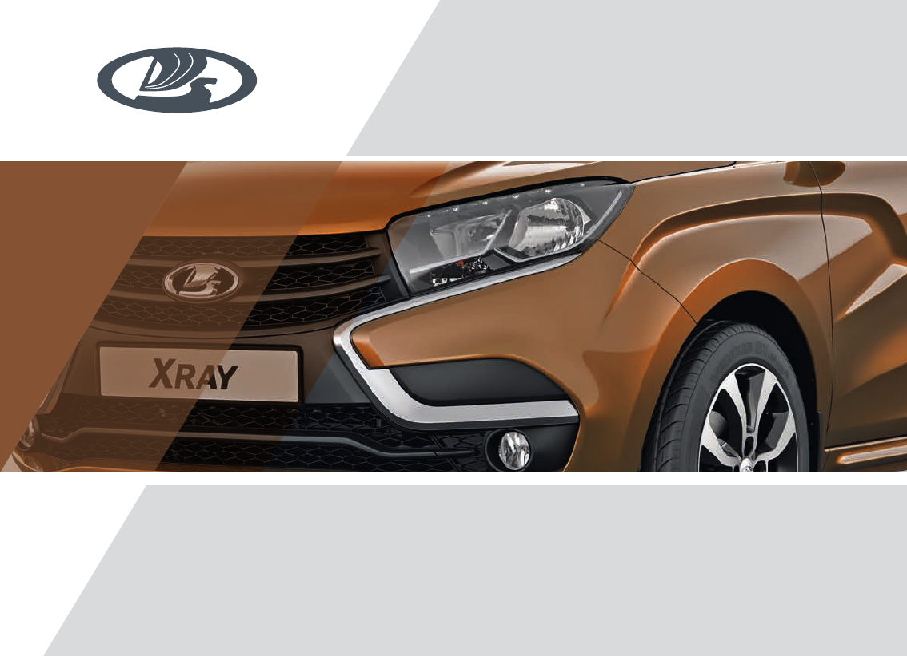
LADA XRAY
LADA XRAY
РУКОВОДСТВО ПО ЭКСПЛУАТАЦИИ
АВТОМОБИЛЯ И ЕГО МОДИФИКАЦИЙ
8450021621
RUS
2
ДОБРО ПОЖАЛОВАТЬ В ВАШ АВТОМОБИЛЬ!
Вашему вниманию! . . . . . . . . . . . . . . . . . . . . . . . . . . . . . . . . 5
1. Ключи, двери, окна, педали .................... 8
Ключи для автомобиля .......................... 8
Пульт дистанционного управления ................ 9
Центральная блокировка/разблокировка замков
дверей ........................................ 12
Электрические стеклоподъемники ................ 16
Переключатель световой сигнализации ........... 18
Система подсветки поворота ..................... 21
Управление омывом и очисткой стекол ............ 21
Зона расположения педалей ..................... 23
2. Сиденья, системы пассивной безопасности ..... 25
Передние сиденья .............................. 25
Подголовники .................................. 29
Заднее сиденье ................................ 30
Ремни безопасности ............................ 31
Система пассивной безопасности ................ 34
Установка детских удерживающих устройств ....... 40
Установка детских сидений с креплением ISOFIX ..... 41
3. Панель приборов, средства управления ......... 44
Органы управления и приборы ................... 44
Комбинация приборов. Сигнальные лампы ........ 50
Индикаторы и сигнальные лампы ................. 52
Бортовой компьютер ............................ 56
Рулевое колесо ................................. 61
Зеркала заднего вида ........................... 64
Переключатель электрокорректора света фар ...... 66
4. Вождение и управление автомобилем ........... 67
Основы безопасной эксплуатации автомобиля ..... 67
Подготовка автомобиля к движению .............. 69
Пуск двигателя ................................. 70
Особенности эксплуатации автомобиля с усилите-
лем рулевого управления ........................ 73
Управление коробкой передач ................... 75
Вождение автомобиля . . . . . . . . . . . . . . . . . . . . . . . . . . . 81
Движение зимой ................................ 82
Торможение и стоянка ........................... 83
Система электронного контроля устойчивости ..... 85
Топливо ....................................... 90
5. Система коррекции и помощи при вождении
автомобиля ................................... 92
Системы «Круиз-контроль» и «Ограничитель ско-
рости» ..................................... 92
Система безопасной парковки ................... 96
6. Отопление, вентиляция и кондиционирование
cалона ........................................ 99
Климатическая система с ручным управлением . . . . . 100
Климатическая система с автоматическим управле-
нием (в вариантном исполнении) .................. 102
Устранение инея и запотевания стекол ............ 105
Обогрев ветрового стекла ........................ 106
Особенности работы кондиционера ............... 106
Снижение эффективности климатической системы .. 107
Воздушный фильтр салона ....................... 107
ОГЛАВЛЕНИЕ
ДОБРО ПОЖАЛОВАТЬ В ВАШ АВТОМОБИЛЬ!
1* 3
7. Освещение салона и комфорт автомобиля ...... 108
Блок освещения салона ......................... 108
Подсветка органов управления и приборов ......... 110
Дополнительное освещение ...................... 110
Система вызова экстренных оперативных служб .... 110
Розетка для подключения дополнительного электро-
оборудования .................................. 113
Установка прикуривателя ........................ 115
Розетка для подключения дополнительного электро-
оборудования в багажном отделении (в вариантном
исполнении) .................................... 115
Противосолнечные козырьки ..................... 116
Аудиосистема (АС) и мультимедийная система
(ММС) ......................................... 116
Места для хранения в салоне автомобиля ......... 119
Коврики пола ................................... 120
8. Уход за автомобилем .......................... 121
Капот .......................................... 121
Система смазки двигателя ....................... 123
Коробка передач ............................... 124
Система охлаждения ............................ 124
Тормозная система ............................. 125
Бачок с рабочей жидкостью гидроусилителя руле-
вого управления (для варианта с гидроусилителем
pулевого управления) ............................ 126
Бачок стеклоомывателя ......................... 127
Аккумуляторная батарея ......................... 128
Замена элемента питания пульта дистанционного
управления .................................... 129
Замена ламп ................................... 130
Замена плавких предохранителей и реле .......... 137
Защита автомобиля от коррозии . . . . . . . . . . . . . . . . . . 149
Мойка автомобиля .............................. 150
9. Практические советы ........................... 152
Замена щеток стеклоочистителей ................ 152
Шины и колеса ................................. 153
Замена колес .................................. 155
Буксирование автомобиля ....................... 158
Перевозка предметов в багажном отделении ...... 160
Тягово-сцепное устройство (ТСУ) ................. 163
Приборы наружного освещения и внешней свето-
вой сигнализации ............................... 164
Хранение автомобиля ........................... 165
10. Технические характеристики автомобиля ....... 166
Идентификационные данные автомобиля .......... 166
Общие технические характеристики автомобиля ... 168
Фактический расход топлива ..................... 170
Фактический расход масла ....................... 171
11. Приложения ................................... 180
Приложение 1 .................................. 180
Приложение 2 .................................. 182
Как связаться с компанией АО «АВТОВАЗ» .......... 183
4
ДОБРО ПОЖАЛОВАТЬ В ВАШ АВТОМОБИЛЬ!
Благодарим Вас за Ваш выбор и решение приобрести авто-
мобиль LADA.
Настоящее руководство по эксплуатации и обслуживанию
автомобиля содержит информацию, которая позволит Вам:
• ознакомиться с автомобилем, правильно его эксплуати-
ровать и максимально использовать его возможности и
техническое совершенство;
• поддерживать его оптимальную работу посредством про-
стого, но четкого соблюдения советов по техобслужива-
нию;
• быстро устранить мелкие неисправности, не требующие
вмешательства специалиста.
То незначительное время, которое Вы потратите на чтение
данного руководства, окупится приобретенными сведения-
ми, а также знаниями функциональных возможностей и тех-
нических новшеств, которые использованы в конструкции
Вашего автомобиля.
Если Вам понадобится дополнительная информация об ав-
томобиле, специалисты дилеров LADA будут рады дать лю-
бые необходимые консультации.
Данное руководство по эксплуатации содержит описание
модели, основанное на ее технических характеристиках,
существующих на момент написания документа. Руковод-
ство охватывает все виды оборудования (как серийного,
так и дополнительного), устанавливаемого на автомобили
данной модели, однако его наличие на Вашем автомоби-
ле зависит от комплектации, выбранных опций и страны
поставки.
5
ВАШЕМУ ВНИМАНИЮ!
Вы приобрели комфортабельный автомобиль LADA XRAY,
обладающий высокими динамическими и скоростными ха-
рактеристиками.
Дизайн XRAY выполнен в новом фирменном стиле LADA
X-Style. Это современный, выразительный, узнаваемый об-
раз с уникальной, динамичной пластикой экстерьера и инте-
рьера, наш уверенный взгляд в будущее.
Ваш автомобиль спроектирован с таким расчетом, чтобы в
нем сочетались передовые технологии, безопасность, бе-
режное отношение к окружающей среде и экономичность.
Автомобиль LADA XRAY маневренный и хорошо подходит для
активной городской жизни благодаря своим размерам. Вме-
стительный, трансформирующийся салон с удобными места-
ми для хранения вещей разработан с учетом максимального
удобства для водителя и пассажиров.
В данном руководстве содержится вся информация, необхо-
димая для безопасного и эффективного управления Вашим
автомобилем.
Перед началом эксплуатации автомобиля рекомендуем вни-
мательно изучить данное руководство для ознакомления с
особенностями конструкции, органами управления, обору-
дованием, а также требованиями безопасности и правилами
пользования LADA XRAY. Это позволит Вам:
• правильно эксплуатировать автомобиль и максимально
использовать его возможности;
• обеспечить длительную безотказную работу автомобиля
при соблюдении несложных рекомендаций по техниче-
скому обслуживанию.
Кроме того, выполнение всех инструкций и рекомендаций
завода-изготовителя, касающихся эксплуатации и техниче-
ского обслуживания автомобиля (включая периодическое
техническое обслуживание и ежегодный технический осмотр
кузова, согласно сервисной книжке), является обязательным
условием сохранения гарантии на автомобиль, а также зало-
гом Вашей безопасности.
Независимо от водительского стажа рекомендуем проявлять
особую внимательность при освоении техники вождения ав-
томобиля. Также убедитесь, что Ваши пассажиры осознают
риск возникновения несчастного случая и травмы при непра-
вильном использовании автомобиля.
Не забывайте, что Ваша безопасность и безопасность дру-
гих участников дорожного движения, состояние окружающей
среды, а также высокие эксплуатационные качества, надеж-
ность и долговечность автомобиля в значительной степени
зависят от его технической исправности и соблюдения Вами
правил эксплуатации, изложенных в настоящем руководстве
и сервисной книжке.
Автомобиль предназначен для эксплуатации при темпе-
ратуре окружающего воздуха от минус 40 °С до плюс 45 °С
по дорогам общего пользования, отвечающим требованиям
ГОСТ Р 50597.
В случае необходимости движения по дорогам со щебеноч-
ным покрытием или по ухабам необходимо выбирать режим,
который:
• обеспечит сохранность защитных чехлов элементов под-
вески, приводов передних колес, защитных покрытий ку-
зова от повреждений вылетающим из-под колес щебнем;
• исключит или максимально снизит резкие удары подвески
и сильные «скручивающие» нагрузки на кузов.
Максимальные преодолеваемые подъемы – не более 30%.
Высокие эксплуатационные характеристики и надежность
Вашего автомобиля во многом зависят от соблюдения пра-
вил эксплуатации и соблюдения периодичности и полноты
исполнения операций технического обслуживания, указан-
ных в сопроводительной документации. Обеспечение сво-
евременного выполнения регламентных работ по техниче-
6
ВАШЕМУ ВНИМАНИЮ!
скому обслуживанию, указанных в сервисной книжке, а также
всех необходимых работ по текущему ремонту, так как, в
соответствии с Федеральным законом РФ «О безопасности
дорожного движения», обязанность по поддержанию авто-
мобиля в технически исправном состоянии возлагается на
его владельца.
Обслуживание и ремонт автомобиля необходимо прово-
дить у официальных дилеров LADA, которые используют
разработанную производителем технологию технического
обслуживания, ремонта и утилизации, а также оснащены
специальным оборудованием и инструментом. Список офи-
циальных дилеров LADA Вы можете найти на сайте компании:
www.lada.ru.
Использование при эксплуатации автомобиля нерекоменду-
емых и некачественных бензинов и моторных масел приво-
дит к повышенным отложениям на деталях двигателя, выходу
из строя двигателя и его узлов, элементов систем управле-
ния, ухудшению токсичности и отказу нейтрализатора отра-
ботавших газов.
Не допускается применение бензинов с металлорганиче-
скими антидетонаторами, на основе свинца (этилированный
бензин), железа (ферроценами), марганца, никеля и других
металлов.
Двигатель автомобиля заправлен на заводе-изготовителе
маслом класса вязкости SAE 5W-40, рассчитанным на приме-
нение в условиях температуры окружающей среды от минус
30 °С до плюс 35 °С. Если эксплуатация нового автомобиля
предстоит, в том числе, вне этого температурного диапа-
зона, то необходимо сменить масло на рекомендованное в
подразделе «Моторное масло» приложения 1, не дожидаясь
срока смены масла в соответствии с сервисной книжкой. Не
допускается применение вторичных присадок к бензи-
нам и смазочным маслам.
Ответственность за применение некачественных бензинов и
масел несет автовладелец. Установку на автомобиль любых
дополнительных устройств, а также замену, модификацию
программного или аппаратного обеспечения контроллера
ЭСУД производите у дилеров с обязательной отметкой в
разделе «Особые отметки» сервисной книжки.
У дилеров имеется перечень разрешенного АО «АВТОВАЗ»
к установке дополнительного оборудования и специально
разработанные технологии по его монтажу. В противном слу-
чае АО «АВТОВАЗ» не несёт ответственности за все возмож-
ные последствия, которые могут возникнуть после установки
дополнительных устройств.
Согласно действующему на территории Таможенного союза
законодательству автомобили подлежат обязательной оцен-
ке соответствия требованиям Технического регламента Та-
моженного союза «О безопасности колесных транспортных
средств» (018/2011 ТР ТС). Номер «Одобрения типа транс-
портного средства» указан в табличке изготовителя и в па-
спорте транспортного средства (ПТС).
Эксплуатационной нормы расхода моторного масла не су-
ществует из-за большого количества влияющих объективных
и субъективных факторов. Расход масла не является посто-
янной величиной: в период приработки нового двигателя (до
7500 км после начала эксплуатации нового двигателя или
прошедшего ремонт) расход относительно большой, мини-
мален на приработанном двигателе и постепенно увеличива-
ется по мере износа двигателя. Но на любой стадии расход
моторного масла в большей степени зависит от стиля вожде-
ния владельца и условий эксплуатации, например, эксплуа-
тация автомобиля с высокими частотами вращения коленча-
того вала двигателя. В зависимости от сочетания указанных
выше факторов, расход масла может достигать до 0,5 л/1000
км, а в период приработки и превышать это значение. Уро-
7
ВАШЕМУ ВНИМАНИЮ!
вень масла следует периодически проверять, по меньшей
мере перед каждой длительной поездкой, чтобы избежать
повреждения двигателя.
Не забывайте – Ваша безопасность и безопасность других
участников дорожного движения, состояние окружающей
среды, а также обеспечение высоких эксплуатационных ка-
честв и заявленного изготовителем срока службы Вашего ав-
томобиля зависят от его технической исправности и соблю-
дения Вами правил эксплуатации, изложенных в настоящем
руководстве и сервисной книжке!
Заголовки «ПРЕДУПРЕЖДЕНИЕ!» и «ВНИМАНИЕ!» инфор-
мируют Вас об условиях, которые могут привести к травми-
рованию людей или повреждению Вашего автомобиля. За-
головок «ПРЕДУПРЕЖДЕНИЕ!» означает, что неправильные
действия могут привести к травмированию людей, «ВНИМА-
НИЕ!» – неправильные действия могут привести к поврежде-
нию Вашего автомобиля.
Конструкция автомобиля постоянно совершенствуется, поэ-
тому отдельные узлы и детали, а также варианты исполнения
и комплектации могут несколько отличаться от описанных в
руководстве. Подробную информацию о Вашем автомобиле
Вы можете получить у продавца.
Несанкционированное изменение данных о пробеге приво-
дит к утере гарантийных обязательств изготовителя и воз-
можному выходу из строя оборудования автомобиля.
При неисправностях, влияющих на безопасность движения,
при которых запрещается эксплуатация автомобиля, поль-
зуйтесь услугами эвакуатора.
На новые автомобили, приобретенные за рубежом, равно
как и ввезенные в Российскую Федерацию для реализации
и реализованные физическим и юридическим лицам, гаран-
тийные обязательства изготовителя на территории Россий-
ской Федерации не распространяются.
Техническое обслуживание и ремонт реэкспортных автомо-
билей производятся продавцом или дилером за счет потре-
бителя. Отличительные особенности автомобиля, изготов-
ленного в экспортном исполнении, состоят в следующем:
•
паспорт транспортного средства (ПТС) выдан тамо-
женными органами РФ, в нем нет реквизитов и печати
АО «АВТОВАЗ» как организации, выдавшей ПТС:
• гарантийный талон АО «АВТОВАЗ» отсутствует;
• возможны иные отличительные особенности, связан-
ные с национальными требованиями страны-импортера.
Для сокращения сроков поступления информации о пробле-
мах с Вашим автомобилем LADA XRAY и сервисом автомоби-
ля LADA XRAY просим обращаться:
• сайт компании АО «АВТОВАЗ» – www.lada.ru;
• клиентская линия LADA 8-800-700-52-32, звонок по Рос-
сии бесплатный.
Счастливого пути за рулем Вашего автомобиля!
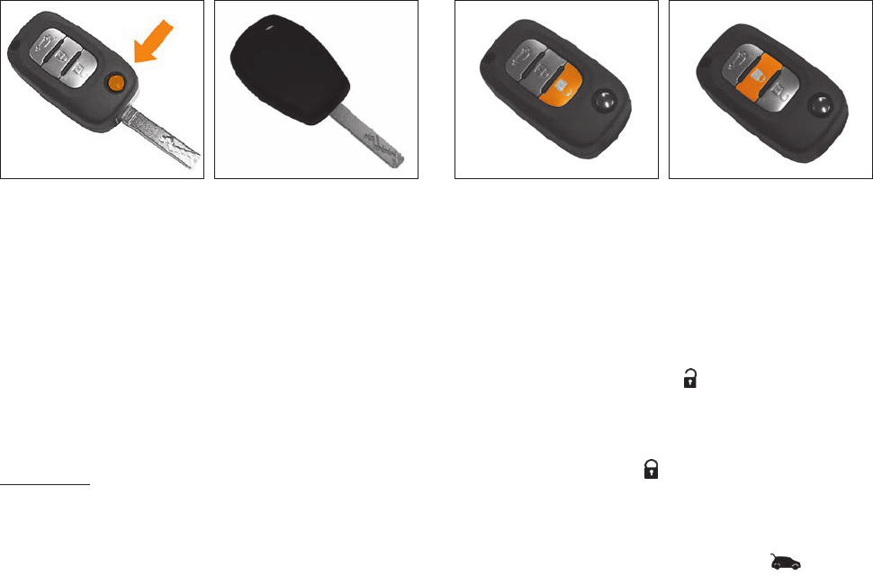
8
1. КЛЮЧИ, ДВЕРИ, ОКНА, ПЕДАЛИ
Рис. 1.1. Ключ с пультом
дистанционного управления
Рис. 1.2. Ключ без кнопок
КЛЮЧИ ДЛЯ АВТОМОБИЛЯ
К автомобилю прилагается два ключа: один с пультом дис-
танционного управления (ПДУ) и со складной бородкой. Для
извлечения и складывания бородки необходимо нажать на
круглую кнопку. Другой ключ – без кнопок управления. Номер
кода ключа нанесен на съемной бирке.
Ключи совмещают в себе функции управления замками две-
рей, выключателем зажигания и рабочим кодовым ключом
иммобилизатора*.
ВНИМАНИЕ!
* Иммобилизатор является дополнительным средством
противоугонной защиты автомобиля и служит для пре-
дотвращения несанкционированного запуска двигателя.
К автомобилям, оснащенным иммобилизатором, под-
ходит только ключ с закодированным транспондером.
Транспондер находится внутри корпуса ключа и неви-
Рис. 1.3. Кнопка
«РАЗБЛОКИРОВКА» пульта
дистанционного управления
Рис. 1.4 Кнопка
«БЛОКИРОВКА» пульта
дистанционного управления
дим снаружи. Для пуска двигателя могут использоваться
только опознаваемые ключи.
Кнопки пульта
дистанционного управления
1. Кнопка «РАЗБЛОКИРОВКА» снимает блокировку с
замков всех дверей, сопровождается однократным свето-
вым сигналом указателей поворота и выключением режима
«ОХРАНА» тревожной сигнализации (рис. 1.3).
2. Кнопка «БЛОКИРОВКА»
блокирует замки всех дверей,
что сопровождается двукратным световым сигналом указа-
телей поворота и включением режима «ОХРАНА» тревожной
сигнализации (рис. 1.4).
3. Кнопка для открывания замка двери задка
(рис. 1.5).
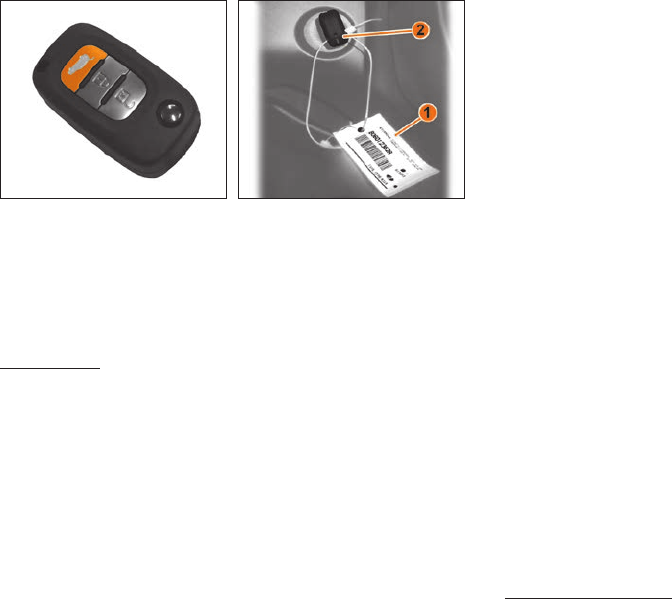
9
1. КЛЮЧИ, ДВЕРИ, ОКНА, ПЕДАЛИ
Рис. 1.5. Кнопка открывания
двери задка пульта
дистанционного управления
Рис. 1.6. Съемная бирка
с номером кода ключа
1 – Съемная бирка.
2 – Ключ.
ВНИМАНИЕ!
Ключ не должен использоваться в иных случаях (для
открывания бутылок и т.п.), чем те, которые указаны в ру-
ководстве по эксплуатации.
ПУЛЬТ
ДИСТАНЦИОННОГО УПРАВЛЕНИЯ
Радиус действия пульта
дистанционного управления
Дальность действия зависит от окружающих условий.
Во избежание непреднамеренного отпирания или запирания
дверей вследствие случайного нажатия на кнопки обращай-
тесь с пультом осторожно!
Наличие некоторых предметов (металлические предметы,
мобильные телефоны, электромагнитное излучение и т. п.)
вблизи ключа может вызвать помехи и затруднить работу
системы.
Для обеспечения работоспособности пульта дистанционно-
го управления соблюдайте следующие правила:
• Не роняйте пульт.
• Не кладите на пульт тяжелые предметы.
• Берегите от воздействия влаги, холода и тепла.
• Не используйте в иных случаях (для открывания бутылок
и т.п.), кроме тех, которые указаны в руководстве по экс-
плуатации.
• Содержите бородки ключей в чистоте, т.к. их загрязнения
могут негативно сказаться на работе личинок замков.
Если управление центральным замком с помощью пульта
невозможно, причина неисправности может заключаться в
следующем:
• превышен радиус действия;
• батарейка пульта разряжена (порядок замены элемента
питания указан в разделе 8. УХОД ЗА АВТОМОБИЛЕМ);
• частое включение пульта за пределами его радиуса дей-
ствия, которое требует его повторной синхронизации;
• помехи от более мощных источников радиоволн;
• при частых включениях и выключениях центральный замок
перегружается и по этой причине его электропитание мо-
жет кратковременно прерываться.
ПРЕДУПРЕЖДЕНИЕ!
Выходя из автомобиля даже на короткое время, не остав-
ляйте ключ или пульт дистанционного управления в сало-
не, если в автомобиле остался ребенок (или животное).
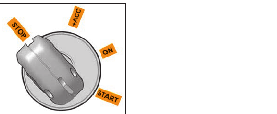
10
1. КЛЮЧИ, ДВЕРИ, ОКНА, ПЕДАЛИ
В этом случае ребенок может подвергнуть опасности
себя и других, запустив двигатель или включив какое-
либо оборудование.
Существует опасность получения тяжелых травм.
Выключатель зажигания
Рис. 1.7. Выключатель зажигания
STOP – выключено. Положение фиксированное. Ключ вы-
нимается. При вынутом ключе срабатывает механизм запи-
рающего механического противоугонного устройства. Для
полного блокирования вала рулевого управления поверните
рулевое колесо вправо или влево до щелчка. Для выключе-
ния механического противоугонного устройства вставьте
ключ в выключатель зажигания и, слегка поворачивая руле-
вое колесо вправо-влево, переведите ключ в положение ON.
+АСС – вспомогательное оборудование работает (напри-
мер, аудиосистема), зажигание выключено, двигатель не
работает. Положение фиксированное. Ключ не вынимается.
ON – зажигание. Положение фиксированное. Ключ не выни-
мается.
START – стартер. Положение нефиксированное. Автомати-
ческий возврат ключа в положение ON. Ключ не вынимается.
Если двигатель не начнет работать с первой попытки пуска,
переведите ключ из положения ON в положение STOP и при-
мерно через 40 секунд повторите попытку пуска.
ПРЕДУПРЕЖДЕНИЕ!
1. Во время движения категорически запрещается вы-
ключать зажигание и тем более вынимать ключ из выклю-
чателя зажигания – это приводит к резкому увеличению
усилия нажатия педали тормоза и блокированию рулево-
го управления.
2. Не оставляйте ключ в положении ON при неработаю-
щем двигателе, так как может разрядиться аккумулятор-
ная батарея.
3. Не удерживайте ключ в положении START более
10 секунд. Выключатель зажигания содержит механизм
блокировки повторного включения стартера, который
не позволяет повторно перевести ключ из положения ON
«Зажигание» в положение START «Стартер».
Для повторного перевода ключа из положения ON
«Зажигание» в положение START «Стартер» необходимо
сначала ключ перевести в положение STOP «Выключено»,
а затем повторить попытку.
Система дистанционного управления
Система дистанционного управления предназначена для:
• дистанционной блокировки/разблокировки замков всех
дверей (или только двери задка) с одновременным вклю-
чением/выключением режима «ОХРАНА» тревожной сиг-
нализации;
• выключения режима «ТРЕВОГА» тревожной сигнализации.
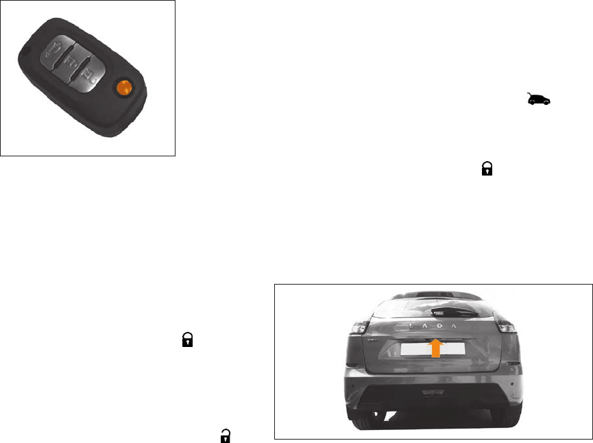
11
1. КЛЮЧИ, ДВЕРИ, ОКНА, ПЕДАЛИ
Рис. 1.8. Пульт дистанционного управления (ПДУ)
Во избежание непреднамеренного отпирания/запирания
замков дверей вследствие случайного нажатия на кнопки об-
ращайтесь с пультом осторожно!
Блокировка замков дверей
и включение режима «ОХРАНА» с ПДУ
Если во время включения режима «ОХРАНА» была открыта
одна из дверей, то замки дверей не заблокируются и режим
«ОХРАНА» не будет включен (при этом световой сигнал ука-
зателей поворота не включится).
Закройте все двери, нажмите кнопку блокировки
на пульте.
После включения режима «ОХРАНА» система контролирует
несанкционированное открывание всех дверей.
Разблокировка замков дверей
и выключение режима «ОХРАНА» с ПДУ
Если двери разблокированы от кнопки разблокировки
на
ПДУ и в течение 2 минут не произошло открывание любой
двери, то автоматически включается режим «ОХРАНА» (авто-
возврат).
Разблокировка двери задка с ПДУ
Разблокирование двери задка с пульта возможно только при
выключенном зажигании. Для разблокирования двери задка
нажмите и удерживайте некоторое время кнопку
на ПДУ.
При включенном режиме охраны разблокирование двери
задка происходит одновременно с отключением режима ох-
раны.
После закрытия двери задка для включения режима охраны
необходимо нажать кнопку блокировки
на ПДУ.
Открывание двери задка
Для открывания двери задка необходимо нажать на кнопку
под накладкой и потянуть дверь вверх (рис. 1.9). Если откры-
вание не происходит, дверь задка необходимо разблокиро-
вать, как описано в предыдущих подразделах.
Рис. 1.9. Кнопка открывания двери задка
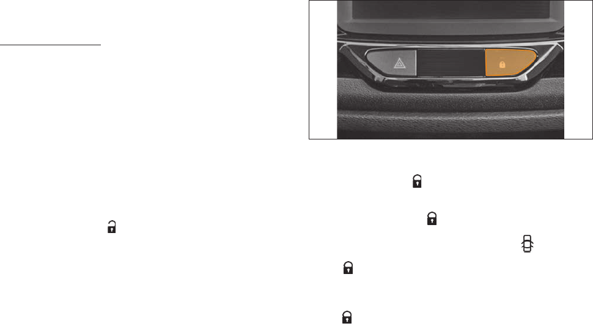
12
1. КЛЮЧИ, ДВЕРИ, ОКНА, ПЕДАЛИ
Для удобства закрывания двери задка во внутренней обивке
предусмотрена специальная выемка.
ПРЕДУПРЕЖДЕНИЕ!
Дверь задка является источником повышенной травмо-
опасности. Поэтому при закрывании будьте предельно
внимательны, особенно если рядом находятся дети.
Дистанционное отключение сигнализации
в режиме «ОХРАНА»
Если в режиме «ОХРАНА» произойдет одно из следующих
действий:
• открывание любой двери;
• открывание капота;
• включение зажигания «чужим» ключом, то включается тре-
вожная звуковая сигнализация.
Выключение режима «ТРЕВОГА» производится путем нажатия
кнопки разблокировки
на ПДУ. При этом происходит деак-
тивация режима «ОХРАНА» и разблокировка всех дверей.
ЦЕНТРАЛЬНАЯ БЛОКИРОВКА/РАЗБЛОКИРОВКА
ЗАМКОВ ДВЕРЕЙ
Центральная блокировка/разблокировка замков дверей
предназначена:
• для блокировки/разблокировки замков всех дверей ПДУ
или кнопкой на панели приборов;
• для разблокировки замков всех дверей при открывании
любой передней двери изнутри салона;
• для автоматической блокировки замков боковых дверей
после начала движения автомобиля.
Рис. 1.10. Кнопка выключателя блокировки дверей
Для блокировки/разблокировки замков всех дверей из са-
лона нажмите кнопку
на панели приборов (рис. 1.10), на
некоторое время загорится индикатор на кнопке, затем по-
гаснет.
Если при нажатии кнопки
на панели приборов одна из две-
рей была открыта, то замки дверей не блокируются, о чем ин-
формирует сигнализатор незакрытых дверей
на комбина-
ции приборов (рис. 1.11) и отсутствие включения индикатора
кнопки
блокировки центрального замка (см. рис. 1.10).
Для принудительной блокировки дверей, в случае если будет
открыта любая дверь (например, при перевозке длинномер-
ных грузов), требуется нажать и удерживать некоторое время
кнопку
на панели приборов.
При открывании изнутри салона любой передней двери ав-
томатически разблокируются замки всех дверей, при откры-
вании одной из задних дверей происходит разблокировка
только открываемой двери.
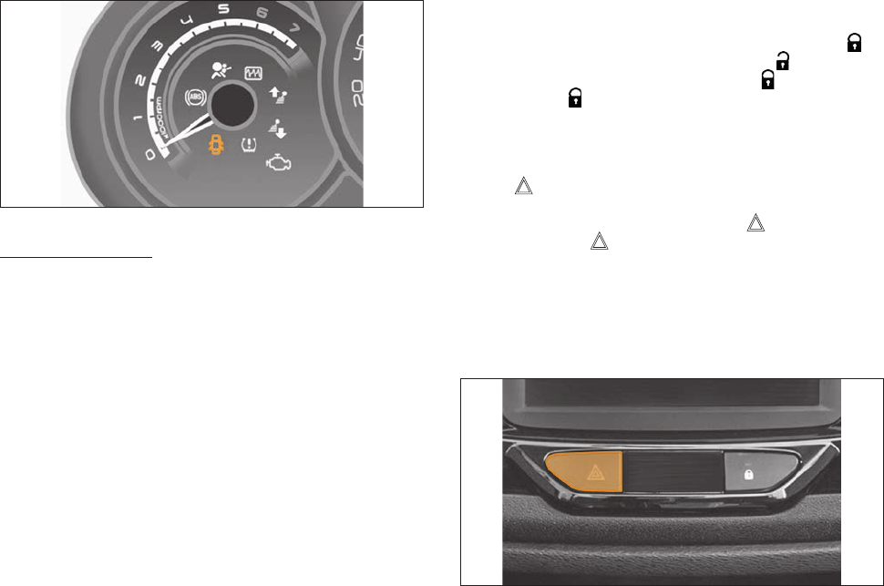
13
1. КЛЮЧИ, ДВЕРИ, ОКНА, ПЕДАЛИ
Рис. 1.11. Сигнализатор незакрытых дверей
ПРЕДУПРЕЖДЕНИЕ!
Если Вы решили ехать с заблокированными дверями,
помните, что это может затруднить доступ спасателей
в салон в экстренной ситуации.
Включение/отключение функции
автоматической блокировки замков
боковых дверей после начала движения
При заведенном двигателе нажмите кнопку центрального
замка на панели приборов и удерживайте ее в течение пяти
секунд. Функция активирована/деактивирована, когда про-
звучит звуковой сигнал.
После начала движения при скорости около 7 км/ч произой-
дет автоматическая блокировка дверей.
Разблокировка дверей произойдет при нажатии кнопки цен-
трального замка на панели приборов или при открывании
любой двери из салона на стоящем автомобиле.
Центральная блокировка имеет защиту замков дверей от
перегрева.
Если блокировка и разблокировка замков дверей происхо-
дят многократно в течение короткого промежутка времени,
то система перестает реагировать на нажатие кнопки
на
панели приборов, а также на нажатие кнопки
на ПДУ.
Если это произошло, не нажимайте кнопку
на панели при-
боров и кнопку
на ПДУ некоторое время, после чего рабо-
тоспособность системы полностью восстановится.
Аварийная световая сигнализация
Кнопка
аварийной световой сигнализации находится на
панели приборов (рис. 1.12). Для включения аварийной све-
товой сигнализации нажмите на кнопку
. При повторном
нажатии на кнопку
сигнализация отключается.
Включение аварийной световой сигнализации необходимо в
экстренных ситуациях, например:
• если произошло дорожно-транспортное происшествие;
• если водителю пришлось осуществить вынужденную
остановку в запрещенном месте из-за технической неис-
правности автомобиля;
Рис. 1.12. Кнопка выключателя аварийной световой сигнализации
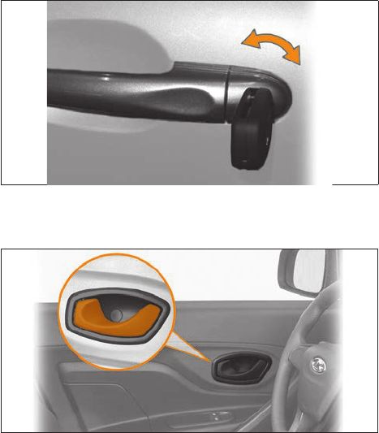
14
1. КЛЮЧИ, ДВЕРИ, ОКНА, ПЕДАЛИ
• если водителя в темное время суток ослепило движущее-
ся навстречу транспортное средство;
• в случае необходимой буксировки автомобиля, осуществля-
емой с помощью механического транспортного средства.
Напоминание об оставленном ключе
и невыключенном наружном освещении
Если зажигание выключено, а ключ находится в выключателе
зажигания, то при открывании двери водителя зуммер выда-
ет непрерывный звуковой сигнал, предупреждая водителя об
оставленном в выключателе зажигания ключе.
Если зажигание выключено и ключ вынут из выключателя за-
жигания, но осталось включенным наружное освещение, то
при открывании двери водителя зуммер выдает два преры-
вистых звуковых сигнала, предупреждая водителя об остав-
ленном включенным наружном освещении.
Запирание и отпирание дверей
при деактивированных электрических
приводах замков
При появлении необходимости заблокировать или разблоки-
ровать замки боковых дверей механически (например, при
отсутствии питания в бортовой сети автомобиля) нужно сде-
лать следующие действия:
• разблокируйте дверь водителя поворотом ключа в замке
(рис. 1.13) и откройте дверь;
• другие боковые двери откройте из салона при помощи
внутренних ручек (рис. 1.14).
Дверь задка можно разблокировать, проникнув в багажное от-
деление из салона (через сложенные спинки заднего сиденья)
и сдвинув аварийный рычаг на замке двери задка (рис. 1.15).
Рис. 1.13. Запирание и отпирание двери водителя
поворотом ключа в замке
Рис. 1.14. Ручка для отпирания дверей
из салона
Для механического закрывания замков дверей:
•
для запирания пассажирских дверей ключом поверните
блокиратор внутри замка (рис. 1.16) в горизонтальное по-
ложение и захлопните двери;
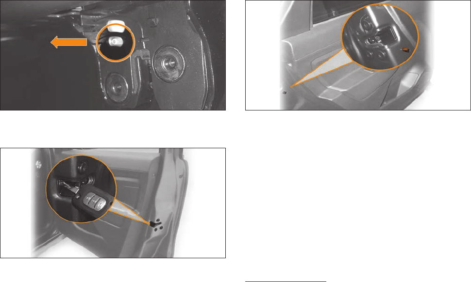
15
1. КЛЮЧИ, ДВЕРИ, ОКНА, ПЕДАЛИ
Рис. 1.15. Разблокировка двери
задка из салона
Рис. 1.16. Рычаг для запирания двери при деактивированных
электрических приводах замков
•
замок двери задка блокируется автоматически при отклю-
чении питания/аккумуляторной батареи;
•
захлопните дверь водителя и заблокируйте дверь поворо-
том ключа в замке (см. рис. 1.13).
Рис. 1.17. Рычаг для блокировки открывания задней двери
изнутри (детская блокировка)
Блокировка открывания задних дверей изнутри
(детская блокировка)
Опустите вниз рычаг (рис. 1.17), находящийся под механиз-
мом замка задней боковой двери. Двери изнутри открывать-
ся не будут.
Не включайте одновременно блокировку задних дверей из-
нутри и снаружи при деактивированных электрических при-
водах замков (отсоединенной или разряженной аккумуля-
торной батарее, неисправности ПДУ или привода замка):
разблокировка задних дверей с наружной и внутренней сто-
роны будет невозможна!
ПРЕДУПРЕЖДЕНИЕ!
Если Вы решили ехать с заблокированными дверьми,
помните, что это может затруднить доступ спасателей в
салон снаружи в экстренной ситуации.
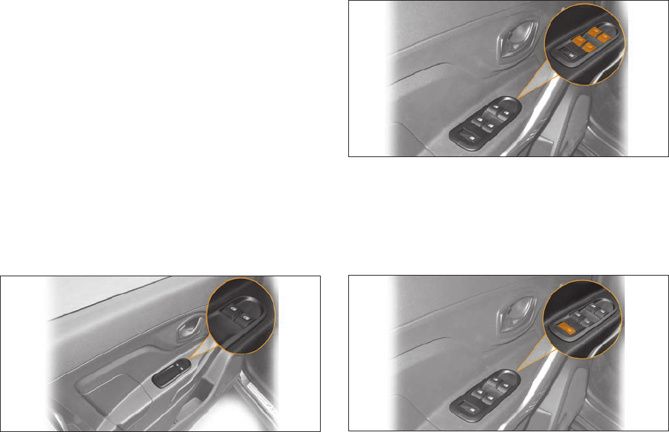
16
1. КЛЮЧИ, ДВЕРИ, ОКНА, ПЕДАЛИ
В вариантном исполнении при открывании передних две-
рей зоны входа-выхода водителя и переднего пассажира
подсвечиваются специальными плафонами, расположенны-
ми в нижней части дверей.
ЭЛЕКТРИЧЕСКИЕ СТЕКЛОПОДЪЕМНИКИ
Для подъема и опускания стекол передних дверей использу-
ются электрические стеклоподъемники, кнопки управления
которыми расположены на внутренней панели передних две-
рей (рис. 1.18; 1.19; 1.21).
Они работают только при включенном зажигании.
В вариантном исполнении (рис. 1.9) для подъема и опуска-
ния стекол задних дверей с места водителя используются
кнопки, которые расположены на внутренней панели двери
водителя. При этом, в блоке переключателей присутствует
кнопка включения блокировки приводов задних стекол («дет-
ская блокировка стекол», рис. 1.20).
Рис. 1.18. Блок переключателей
на двери водителя
Рис. 1.19. Блок переключателей на двери водителя
(в вариантном исполнении)
Для подъема и опускания стекол задних дверей в вариант-
ном исполнении (рис. 1.22) на внутренней панели задней
двери в блоке переключателей располагается кнопка элек-
трических стеклоподъемников.
Рис. 1.20. Кнопка блокировки стеклоподъемников
задних дверей (в вариантном исполнении)
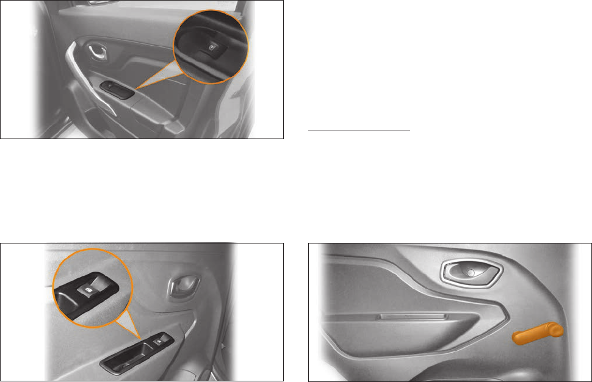
17
1. КЛЮЧИ, ДВЕРИ, ОКНА, ПЕДАЛИ
Рис. 1.21. Кнопка управления электрическим
стеклоподъемником двери переднего пассажира
Кнопки управления стеклоподъемниками имеют три позиции:
• «Подъем стекла» (верхняя нефиксированная крайняя по-
зиция).
• «Выключено» (фиксированная средняя позиция).
Рис. 1.22. Кнопка управления электрического стеклоподъемника
задней двери (в вариантном исполнении)
• «Опускание стекла» (нижняя нефиксированная крайняя
позиция).
Механические стеклоподъемники
Стекла окон задних дверей открываются и закрываются при
помощи ручек механических стеклоподъемников, располо-
женных в панелях задних дверей (рис. 1.23). Стекло задней
двери опускается не полностью.
ПРЕДУПРЕЖДЕНИЕ!
При закрытии окон с электрическими стеклоподъемни-
ками возможно защемление пальцев рук и других частей
тела, что может привести к серьезной травме. Поэтому при
пользовании электрическими стеклоподъемниками будь-
те внимательны, особенно если в автомобиле или рядом с
ним находятся дети. Убедитесь, что поднимающееся стек-
ло ничего не защемит. В случае защемления немедленно
прекратите подъем стекла и включите его опускание.
Рис. 1.23. Ручка механического
стеклоподъемника
2 РпЭ XRAY 8450021621

18
1. КЛЮЧИ, ДВЕРИ, ОКНА, ПЕДАЛИ
Ответственность за неправильное пользование электри-
ческими стеклоподъемниками несет водитель автомоби-
ля. Он должен разъяснить пассажирам правила пользо-
вания и предупредить об опасностях при неправильном
использовании электрическими стеклоподъемниками.
Не разрешайте детям пользоваться переключателями
электростеклоподъемников!
Выходя из автомобиля, обязательно вынимайте ключ
из выключателя зажигания, чтобы отключить электро-
стеклоподъемники и избежать случайного травмирова-
ния. В качестве предупреждения об оставленном ключе
зажигания при открывании двери водителя звучит трель
зуммера иммобилизатора. Также трель будет звучать,
но уже в иной тональности, если ключ зажигания вынуть,
но оставить включенными габаритные огни.
Не высовывайте из открытых окон автомобиля руки и
другие части тела, следите, чтобы этого не делали дети.
Рис. 1.24. Переключатель световой сигнализации
ПЕРЕКЛЮЧАТЕЛЬ СВЕТОВОЙ СИГНАЛИЗАЦИИ
Переключатель световой сигнализации расположен на руле-
вой колонке слева (рис. 1.24).
Положения рычага переключения
световой сигнализации (рис. 1.25):
I – нейтральное положение. Включен ближний свет фар, если
переключателем наружного освещения включен свет фар.
II – включены указатели левого поворота. Нефиксированное
положение.
III – включены указатели левого поворота. Фиксированное
положение.
IV – включены указатели правого поворота. Нефиксирован-
ное положение.
V – включены указатели правого поворота. Фиксированное
положение.
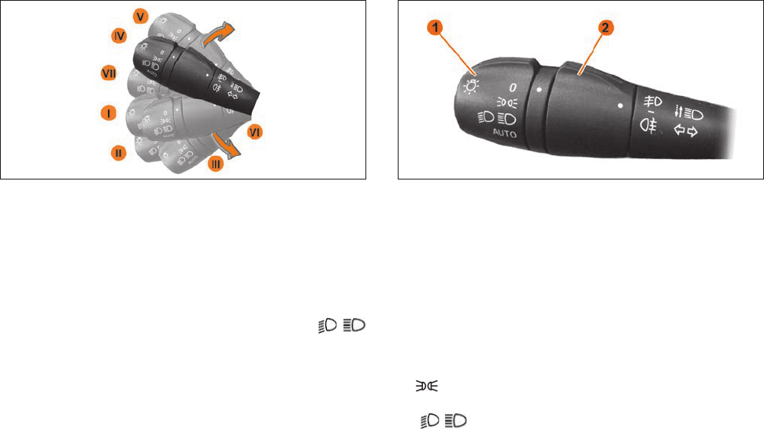
19
1. КЛЮЧИ, ДВЕРИ, ОКНА, ПЕДАЛИ
Рис. 1.25. Положения рычага переключателя
световой сигнализации
VI – на себя, подача светового сигнала. Кратковременное
включение дальнего света фар независимо от положения
переключателя наружного освещения. Нефиксированное
положение.
VII – от себя, включен дальний свет фар, если переключа-
тель наружного освещения находится в положении
(ближний/дальний свет фар) либо, в вариантном испол-
нении, в положении «AUTO» (автоматическое управление).
Фиксированное положение.
Наружное освещение включается независимо от положения
ключа в замке зажигания, поэтому, покидая автомобиль, убе-
дитесь, что наружное освещение выключено (для избежания
разрядки АКБ).
Если наружное освещение останется включенным после
извлечения ключа из замка зажигания, то прозвучит пре-
дупреждающий звуковой сигнал.
Рис. 1.26. Кольца управления
на рычаге переключателя
1 – Кольцо управления наружным освещением.
2 – Кольцо управления противотуманным освещением
(функционирует только при включенном наружном осве-
щении).
Для включения наружного освещения (рис. 1.26) поверните
кольцо управления наружным освещением 1, которое имеет
фиксированные положения:
– 0 – выключено. Положение фиксированное;
–
– включены габаритные огни. Положение фиксиро-
ванное;
–
– включен ближний/дальний свет фар (в зависи-
мости от положения рычага переключателя световой сиг-
нализации). Положение фиксированное;
– «AUTO» (в вариантном исполнении) – включена система
автоматического управления наружным освещением. По-
ложение фиксированное.
2*
20
1. КЛЮЧИ, ДВЕРИ, ОКНА, ПЕДАЛИ
Система автоматического управления наружным освещени-
ем работает только при включенном зажигании от датчика
освещенности. Датчик освещенности совмещен с датчиком
дождя и расположен на ветровом стекле за зеркалом задне-
го вида.
Система автоматического управления наружным освещени-
ем обеспечивает включение и выключение габаритных ог-
ней и ближнего света фар в зависимости от уровня внешней
освещенности. Например, в сумерках, а также при въезде
в тоннель или гараж. Автоматическое выключение габарит-
ных огней и ближнего света фар произойдет при увеличении
внешней освещенности.
Для включения дальнего света фар на длительное время с
включенной системой автоматического управления наруж-
ным освещением необходимо перевести переключатель в
позицию VII «включен дальний свет фар».
Если в момент автоматического включения ближнего све-
та фар переключатель световой сигнализации находился в
позиции VII «включен дальний свет фар», то для включения
дальнего света на длительное время необходимо вернуть
его в нейтральное положение и затем перевести переключа-
тель в позицию VII «включен дальний свет фар».
ПРЕДУПРЕЖДЕНИЕ!
Включение наружного освещения системой автоматиче-
ского управления не снимает с водителя ответственно-
сти за соблюдение требований безопасности и Правил
дорожного движения.
Для включения при необходимости (в туман, метель и др. ус-
ловиях недостаточной видимости) противотуманного осве-
щения поверните кольцо управления 2, которое имеет фик-
сированные положения:
• Выключено. Положение фиксированное.
• Включен задний противотуманный фонарь. Включе-
ние возможно только при включенных габаритных огнях
или ближнем свете фар. Положение фиксированное.
В вариантном исполнении с функцией «AUTO» положе-
ние нефиксированное. Для отключения повторно повер-
ните кольцо управления.
• Включены передние противотуманные фары (в вари-
антном исполнении). Включение возможно только при
включенных габаритных огнях или ближнем свете фар.
Положение фиксированное. В вариантном исполнении
с функцией «AUTO» положение нефиксированное. Для от-
ключения повторно поверните кольцо управления.
ПРЕДУПРЕЖДЕНИЕ!
При приближении к встречным или попутным автомо-
билям всегда переключайте дальний свет на ближний.
Дальний свет фар может временно ослепить других
вoдителей, что может привести к аварии.
Используйте противотуманные фары и противотуманные
фонари только по назначению и не забывайте выключать
их, когда в них нет необходимости, чтобы не мешать дру-
гим участникам движения.
ВНИМАНИЕ!
Во избежание разряда аккумуляторной батареи во время
остановок и стоянок автомобиля с выключенным двига-
телем не оставляйте без необходимости включенными
внешние световые приборы (фары и фонари). При от-
крывании двери водителя для выхода из автомобиля раз-
дается звуковой сигнал, предупреждающий водителя об
оставшихся включенными световых приборах. Выключи-
те их, оставляя автомобиль на длительное время.
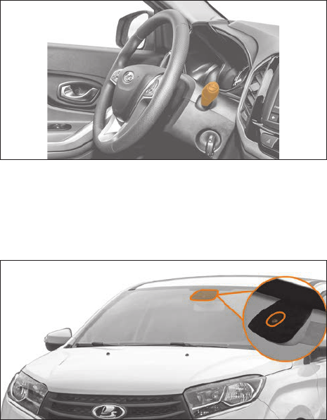
21
1. КЛЮЧИ, ДВЕРИ, ОКНА, ПЕДАЛИ
В вариантном исполнении с функцией «АUTO» световые
приборы будут выключены через некоторое время после
выключения зажигания. Для возможности длительного
включения габаритных огней в темное время суток не-
обходимо при выключенном зажигании и открытой води-
тельской двери перевести кольцо управления наружным
освещением из положения «выключено» в положение
«включены габаритные огни».
СИСТЕМА ПОДСВЕТКИ ПОВОРОТА
В вариантном исполнении автомобили оснащены функци-
ей подсветки поворота.
Данная функция активируется при включённом ближнем све-
те и реализуется путем автоматического включения противо-
туманных фар в следующих случаях:
– при включении указателя поворота (включается ПТФ на
стороне поворота);
– при отклонении/повороте рулевого колеса от положения
прямолинейного движения (на стороне, соответствующей
повороту рулевого колеса);
Огни подсветки поворота должны выключаться автоматиче-
ски, когда выключают указатели поворота и/или когда ру-
левое колесо возвращается в положение прямолинейного
движения.
– при включении задней фары/передачи заднего хода (вклю-
чаются обе ПТФ одновременно, независимо от положения
рулевого колеса или указателя поворота);
В этом случае огни подсветки поворота должны выключать-
ся, когда выключают заднюю фару/ передачи заднего хода.
Огни подсветки поворота не должны приводиться в действие
при скорости движения транспортного средства более 40 км/ч.
УПРАВЛЕНИЕ ОМЫВОМ И ОЧИСТКОЙ СТЕКОЛ
Рис. 1.27. Переключатель стеклоочистителей
Переключатель стеклоочистителей расположен на рулевой
колонке справа (рис. 1.27).
Стеклоочистители и омыватели стекол функционируют толь-
ко при включенном зажигании.
Рис. 1.28. Датчик дождя и света
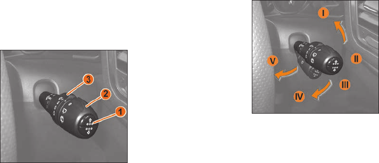
22
1. КЛЮЧИ, ДВЕРИ, ОКНА, ПЕДАЛИ
В вариантном исполнении автомобиль оснащается датчи-
ком дождя, при этом скорость стеклоочистителя переднего
ветрового (лобового) стекла управляется автоматически и
зависит от двух факторов: от уровня чувствительности датчи-
ка (регулируется) и интенсивности осадков.
Датчик дождя (рис. 1.28), а также датчик света располагается
на лобовом стекле под облицовкой зеркала заднего вида.
Рис. 1.29. Рычаг управления омывом
и очисткой стекол
1 – Кнопки управления маршрутным компьютером.
2 – Кольцо управления очисткой и омывом заднего стекла:
• Выключено. Положение фиксированное.
• Включен задний стеклоочиститель. Положение фиксиро-
ванное.
• Включен задний стеклоочиститель и омыватель заднего
стекла. Положение нефиксированное.
3 – Кольцо регулировки длительности паузы прерывистого
режима. В режиме «Авто» служит для регулировки чувстви-
тельности датчика включения стеклоочистителя.
Положения рычага управления омывом
и очисткой стекол (рис. 1.30):
Рис. 1.30. Положения рычага управления омывом
и очисткой стекол
I – Нейтральное положение. Стеклоочистители и омыватели
стекол выключены. Положение фиксированное.
II – Включен прерывистый режим или режим «Aвто»
(в вариантном исполнении) работы стеклоочистителя ве-
трового стекла. Положение фиксированное.
III – Включена малая скорость стеклоочистителя ветрового
стекла. Положение фиксированное.
IV – Включена большая скорость стеклоочистителя ветрово-
го стекла. Положение фиксированное.
V – На себя, включен омыватель ветрового стекла. Положе-
ние нефиксированное.
Примечание. Для комплектации с датчиком дождя работа режима III
возможна при любом положении ключа в замке зажигания, а также
при его отсутствии, при условии, что дверь водителя закрыта и авто-
мобиль не находится в спящем режиме (при открытой двери водителя
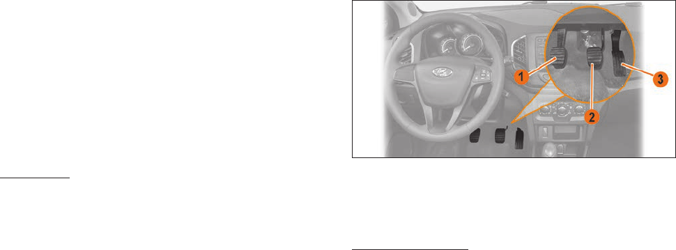
23
1. КЛЮЧИ, ДВЕРИ, ОКНА, ПЕДАЛИ
и включении режима III щетки делают один взмах и возвращаются в
исходное положение). Выключение режима осуществляется или с по-
мощью ручного переключателя или при открытии двери водителя.
Работа режимов II и IV возможна только на запущенном двигателе.
В вариантном исполнении, если во время работы или в течение
30 секунд после работы передних стеклоочистителей была включе-
на задняя передача коробки передач, то автоматически включит-
ся задний стеклоочиститель. После выключения задней передачи
задний стеклоочиститель автоматически отключится.
Сервисное положение щеток стеклоочистителя
При неработающем двигателе перемещением ручного пере-
ключателя в положение IV щетки стеклоочистителя занимают
среднее положение на лобовом стекле для возможности их
удобной замены. Выход из сервисного положения осущест-
вляется перемещением ручного переключателя в положение I.
ВНИМАНИЕ!
После прекращения подачи омывающей жидкости из
жиклеров не допускается повторное включение насоса
омывателя. Использовать систему омыва стекол повтор-
но можно после заполнения бачка омывающей жидко-
стью (см. подраздел «Бачок стеклоомывателя» в разделе
«8. Уход за автомобилем»).
ЗОНА РАСПОЛОЖЕНИЯ ПЕДАЛЕЙ
Перед водительским сиденьем внизу находится зона разме-
щения педалей (рис. 1.31, 1.32).
Рис. 1.31. Зона размещения педалей
1 – Педаль сцепления.
2 – Педаль тормоза.
3 – Педаль акселератора.
ПРЕДУПРЕЖДЕНИЕ!
На водительском месте используйте сертифицирован-
ные коврики (полиуретановые или тканевые), предназна-
ченные именно для данного автомобиля, закрепляющие-
ся с помощью специальных элементов.
Не используйте несколько ковриков, укладывая их один
на другой. Это создает риск блокировки педалей.
Не кладите посторонние предметы на пол в зоне раз-
мещения педалей и под сиденье водителя. Предмет мо-
жет переместиться и препятствовать управлению авто-
мобилем.
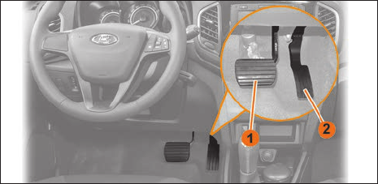
24
1. КЛЮЧИ, ДВЕРИ, ОКНА, ПЕДАЛИ
Водителю рекомендуется использовать обувь, которая
позволяет уверенно и удобно управлять автомобилем.
Рис. 1.32. Зона размещения педалей
(в вариантном исполнении)
1 – Педаль тормоза.
2 – Педаль акселератора.

25
2. СИДЕНЬЯ, СИСТЕМЫ ПАССИВНОЙ БЕЗОПАСНОСТИ
ПЕРЕДНИЕ СИДЕНЬЯ
Рис. 2.1. Регулировка положения переднего сиденья
Для перемещения сиденья вперед или назад, потяните за
рычаг вверх и сдвиньте сиденье в нужное положение.
Отпустите рычаг и убедитесь, что сиденье зафиксировано.
ПРЕДУПРЕЖДЕНИЕ!
В целях безопасности запрещается регулировать поло-
жение водительского сиденья во время движения. Это
может привести к потере контроля над автомобилем.
Для изменения наклона спинки сиденья, наклонитесь вперед
и поднимите рычаг регулировки угла наклона спинки вверх.
Отклонившись назад, установите спинку сиденья в требуе-
мое положение и отпустите рычаг регулировки.
Убедитесь, что спинка сиденья зафиксирована в новом по-
ложении.
В вариантном исполнении рычаг регулировки наклона
спинки находится с наружной стороны сиденья.
В вариантном исполнении высота сиденья водителя регули-
руется рычагом, расположенным с наружной стороны сиденья.
Рис. 2.2. Регулировка угла наклона спинки сиденья
Рис. 2.3.1. Регулировка сиденья по высоте
(в вариантном исполнении)
Чтобы опустить сиденье, несколько раз нажмите на рычаг
вниз.
Чтобы поднять сиденье, несколько раз потяните рычаг вверх.
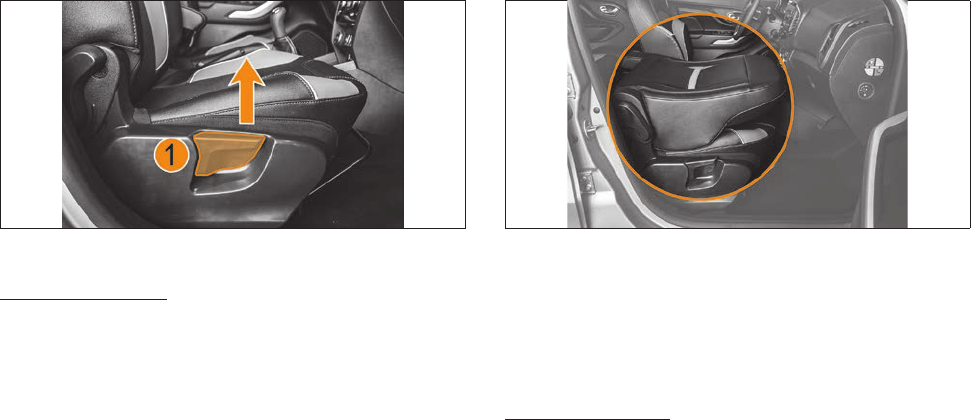
26
2. СИДЕНЬЯ, СИСТЕМЫ ПАССИВНОЙ БЕЗОПАСНОСТИ
Рис. 2.3.2. Правое переднее сиденье
(в вариантном исполнении)
ПРЕДУПРЕЖДЕНИЕ!
Чтобы не снижать эффективность ремней безопасности,
рекомендуется не наклонять спинки сидений слишком
сильно назад.
Следите за надежной фиксацией спинок сидений.
Более подробная информация по правильной регулиров-
ке передних сидений с точки зрения пассивной безопас-
ности содержится в подразделе «Система надувных по-
душек безопасности».
Сложенное положение для переднего
пассажирского сиденья
В вариантном исполнении спинку переднего пассажирско-
го сиденья можно сложить вперед в горизонтальное положе-
ние «столик».
Для этого:
– опустите подголовник в нижнее положение;
– переместите сиденье в крайнее заднее положение;
Рис. 2.3.3. Правое переднее сиденье
в сложенном положении (в вариантном исполнении)
– потяните рычаг 1 и опустите спинку вперед до фиксации с
характерным щелчком.
Для возврата спинки в исходное положение потяните рычаг 1
вверх и поднимите спинку в вертикальное положение до ха-
рактерного щелчка.
ПРЕДУПРЕЖДЕНИЕ!
Для Вашей безопасности обязательно закрепите груз
при перевозке его на переднем пассажирском сиденье в
сложенном положении.
Когда переднее пассажирское сиденье находится в сло-
женном положении, разрешается перевозить пассажира
только на крайнем заднем сиденье за сиденьем водителя.
Использовать другие места на заднем ряду запрещено!
При перемещении спинки переднего пассажирского си-
денья в сложенное положение, а также при возврате в ис-
ходное положение, обязательно убедитесь в том, что она
зафиксирована. Существует риск получения травмы при
аварийной ситуации.
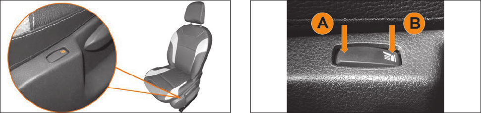
27
2. СИДЕНЬЯ, СИСТЕМЫ ПАССИВНОЙ БЕЗОПАСНОСТИ
Рис. 2.4.1. Выключатель подогрева передних сидений
(с фиксированными положениями)
Когда переднее пассажирское сиденье находится в сло-
женном положении, фронтальная пассажирская подушка
безопасности должна быть отключена (смотрите раздел
«Система пассивной безопасности»). Есть риск полу-
чения серьезных травм от предметов, находящихся на
сложенной спинке, при срабатывании подушки безопас-
ности.
Никогда не перевозите на сложенной спинке сиденья
предметы, которые:
• загораживают обзор водителю;
• могут создать помехи управлению автомобилем, на-
пример, попадут под педаль или помешают водителю
иным образом;
• при интенсивном разгоне, изменении направления
или торможении смогут нанести травмы сидящим в
автомобиле.
В вариантном исполнении передние сиденья оборудованы
электрическими подогревателями.
Рис. 2.4.2. Положение выключателя обогрева
передних сидений
«A» – Выключено.
«B» – Включено.
Обогреватели функционируют только при включенном зажи-
гании.
Пользуйтесь обогревателями сидений только при заведен-
ном двигателе.
Проверяйте положение выключателей (особенно пасса-
жирского сиденья при отсутствии пассажира) во избежание
ненужной работы обогревателей (рис. 2.4.2.): при переза-
пуске двигателя обогреватели автоматически включаются,
если выключатели были оставлены в положении «B» («Вклю-
чено»).
В вариантном исполнении передние сиденья также обору-
дованы электрическими подогревателями с возможностью
ступенчатого изменения уровня нагрева, которые включают-
ся при работающем двигателе выключателями, расположен-
ными на панели приборов (рис. 2.4.3).
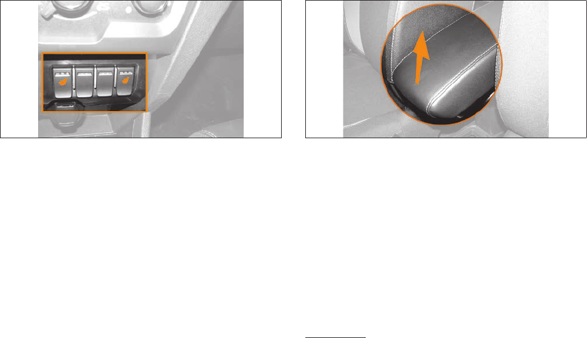
28
2. СИДЕНЬЯ, СИСТЕМЫ ПАССИВНОЙ БЕЗОПАСНОСТИ
Рис. 2.4.3. Выключатели подогрева передних сидений
(в вариантном исполнении)
Для включения обогрева сиденья водителя необходимо на-
жать на левый выключатель, для включения обогрева сиде-
нья пассажира – на правый выключатель.
Алгоритм работы обогрева и световых индикаторов:
Максимальный обогрев – первое нажатие кнопки, светятся
три световых индикатора.
Средний обогрев – второе нажатие кнопки, правый сигнали-
затор гаснет, светятся левый и средний.
Минимальный обогрев – третье нажатие кнопки – средний
сигнализатор гаснет, светится только левый.
Четвертым нажатием на кнопку обогрев сидений выключа-
ется.
При первом включении обогрева устанавливается автома-
тический режим. В этом режиме мощность электрических
подогревателей будет автоматически снижаться в течение
некоторого времени в зависимости от температуры окружа-
ющей среды.
Рис. 2.5. Центральный подлокотник
(в вариантном исполнении)
При последующем нажатии левой или правой кнопки подо-
гревателя сидений происходит переключение в ручной ре-
жим. В ручном режиме подогреватель работает неограни-
ченное время до повторного нажатия кнопки с последующим
понижением уровня нагрева на одну ступень от текущего или
до выключения зажигания.
В вариантном исполнении салон автомобиля оборудован
подлокотником (рис. 2.5), фиксируемым магнитным держа-
телем. Подъем подлокотника производится до вертикального
положения без промежуточной фиксации. Под открытым под-
локотником располагается ниша для хранения мелких вещей.
ВНИМАНИЕ!
Подъём крышки подлокотника необходимо производить
за переднюю часть без резкого отбрасывания назад.
В крайнем раскрытом положении крышки подлокотника
не допускается прилагать чрезмерное усилие – более
200 Н (20 кг) – в сторону обратную закрыванию.
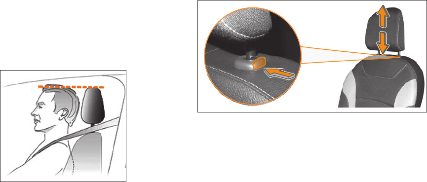
29
2. СИДЕНЬЯ, СИСТЕМЫ ПАССИВНОЙ БЕЗОПАСНОСТИ
ПОДГОЛОВНИКИ
Передние и задние сиденья оборудованы подголовниками,
которые служат не только для удобства водителя и пассажи-
ров, но, в первую очередь, помогают обеспечить защиту го-
ловы и шеи в случае дорожно-транспортного происшествия
(ДТП).
Средний подголовник на заднем сиденье устанавливается в
вариантном исполнении.
Для достижения максимальной защиты в случае ДТП, верх-
ний край переднего подголовника должен находиться при-
мерно на уровне верхней части головы (рис. 2.6).
Рис. 2.6. Оптимальное положение переднего подголовника
Подголовник имеет направляющие стержни с зубчатыми
прорезями-фиксаторами, которые препятствуют его само-
произвольному опусканию (устройство безопасности в слу-
чае аварии).
Передние подголовники имеют четыре промежуточных и два
крайних фиксированных положения, задние подголовники –
только одно фиксированное верхнее положение. Крайнее
нижнее положение задних подголовников – нерабочее, оно
не должно использоваться при наличии пассажира на соот-
ветствующем месте заднего сиденья.
Регулировка подголовника по высоте (рис. 2.7).
Рис. 2.7. Регулировка подголовника по высоте
Чтобы поднять подголовник вверх, потяните за него вверх до
нужного фиксированного положения.
Чтобы опустить его вниз, нажмите одновременно на фикса-
тор и на подголовник.
Для снятия подголовника поднимите его на максимальную
высоту, затем нажмите на кнопку фиксатора, одновременно
вытягивая подголовник. Если обивка крыши мешает снятию
подголовника, то отклоните спинку сиденья.
Чтобы установить подголовник на место, вставьте стержни
в отверстия направляющих втулок (в случае необходимости
отклоните спинку сиденья). Затем настройте подголовник на
нужную высоту.
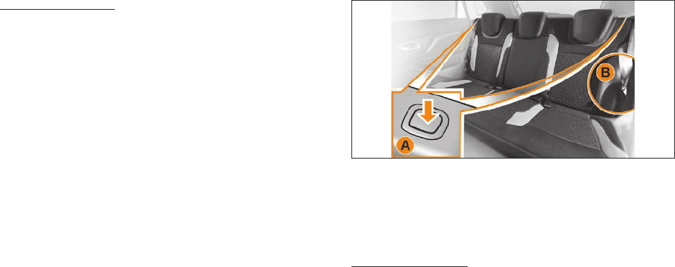
30
2. СИДЕНЬЯ, СИСТЕМЫ ПАССИВНОЙ БЕЗОПАСНОСТИ
ПРЕДУПРЕЖДЕНИЕ!
Движение автомобиля допустимо только при установ-
ленных в надлежащее положение подголовниках.
Снятие или неверная регулировка подголовников может
привести к тяжелым травмам головы и шеи в случае ДТП.
Перед началом движения автомобиля убедитесь, что
подголовники отрегулированы и находятся в фиксиро-
ванном положении.
Не регулируйте положение подголовников по высоте во
время движения автомобиля.
При опускании задних подголовников в крайнее нижнее
положение будьте осторожны и берегите пальцы от за-
щемления.
ЗАДНЕЕ СИДЕНЬЕ
Спинки заднего сиденья могут быть сложены для облегче-
ния перевозки длинномерных предметов или для увеличения
объема багажного отделения автомобиля.
• Вставьте язычок бокового ремня безопасности в специ-
альный паз B (рис. 2.8.1.), находящийся сбоку от спинки
сиденья.
• Установите спинку переднего сиденья в вертикальное по-
ложение; при необходимости сдвиньте переднее сиденье
вперед.
• Нажмите на клавишу фиксации A (рис. 2.8.1.) сидений и
сложите спинку заднего сиденья вперед и вниз.
• Чтобы использовать заднее сиденье для перевозки
пассажиров, откиньте спинку заднего сиденья назад
до щелчка.
• Верните задний ремень безопасности в первоначальное
положение.
Рис. 2.8.1. Спинка заднего сиденья
• После полной установки спинки заднего сиденья в ис-
ходное положение проверьте положение клавиши фик-
сации А.
ПРЕДУПРЕЖДЕНИЕ!
Во избежание повреждения ремней безопасности зам-
ком спинки, не допускайте их нахождение за спинкой при
возвращении её в рабочее состояние.
Проверяйте правильность установки задних ремней без-
опасности после каждого перемещения задних сидений.
В вариантном исполнении задние сиденья оборудованы
электрическими подогревателями, которые включаются при
работающем двигателе выключателями (см. рис. 2.8.2.), рас-
положенными на задней стенке центрального подлокотника.
Для включения левого сиденья необходимо нажать на левый
выключатель, для включения обогрева правого сиденья – на
правый выключатель. Выключение обогрева производится
повторным нажатием на выключатель или при выключении
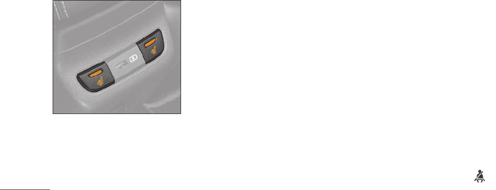
31
2. СИДЕНЬЯ, СИСТЕМЫ ПАССИВНОЙ БЕЗОПАСНОСТИ
Рис. 2.8.2. Выключатели подогрева заднего сиденья
(в вариантном исполнении)
двигателя. Контрольный световой индикатор, расположен-
ный на клавише выключателя, будет светиться в течение все-
го времени работы обогревателя.
ВНИМАНИЕ!
При наличии заднего сиденья с подогревом его поду-
шка не подлежит трансформации. При необходимости
демонтировать подушку, во избежание повреждения
жгутов проводов, предварительно отсоедините обогрев,
приподняв задний край подушки.
РЕМНИ БЕЗОПАСНОСТИ
Ваш автомобиль оборудован диагонально-поясными ремня-
ми безопасности с запирающим устройством инерционного
типа для водителя и каждого пассажира.
Ремни безопасности являются эффективным средством за-
щиты водителя и пассажиров от тяжёлых последствий до-
рожно-транспортного происшествия (ДТП).
Ремни безопасности переднего ряда сидений имеют устрой-
ство предварительного натяжения, предназначенное для
выбора возможной слабины ленты ремня, а также устрой-
ство ограничения нагрузки, снижающее усилие удержа-
ния человека для обеспечения более эффективной защиты
при ДТП.
В Вашем автомобиле имеется система оповещения о не-
пристёгнутом ремне безопасности водителя. При включении
зажигания, если не пристёгнут ремень безопасности водите-
ля, в блоке освещения салона включается сигнализатор
«Ремень безопасности» (cм. подраздел «Блок освещения
салона» в разделе «7. Освещение салона и комфорт автомо-
биля»). При движении автомобиля включение светового сиг-
нализатора дублируется прерывистым звуковым сигналом.
После посадки в автомобиль всегда пристёгивайтесь рем-
нями безопасности, не перевозите непристёгнутых ремнём
безопасности пассажиров – соблюдайте требования Правил
дорожного движения. Используйте отдельный ремень без-
опасности для каждого пассажира, взрослого или ребёнка.
В случае загрязнения ремня безопасности для очистки ис-
пользуйте мягкие салфетки, смоченные в слабом мыльном
растворе. Не используйте для очистки ремней агрессивные
или абразивные материалы.
Во всех случаях, требующих ремонта или замены ремней
безопасности, обращайтесь к дилеру LADA.
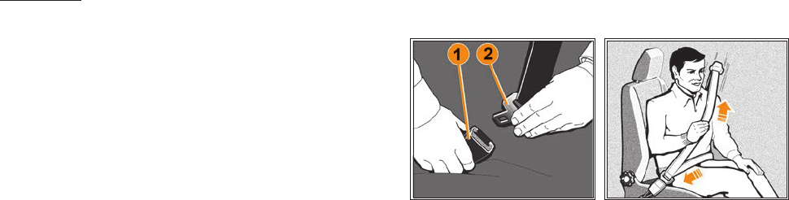
32
2. СИДЕНЬЯ, СИСТЕМЫ ПАССИВНОЙ БЕЗОПАСНОСТИ
ВНИМАНИЕ!
Запрещается:
• Самостоятельный демонтаж ремней безопасности,
разборка, ремонт, поджигание, подключение к источ-
никам напряжения.
• Самостоятельная замена ремней безопасности.
• Подвергать ремни безопасности воздействию высо-
кой температуры (например, гладить утюгом, прижи-
гать зажигалкой, тлеющей сигаретой и т.п.).
• Допускать перекручивание лент ремня безопасности
при пристёгивании.
• Использовать какие-либо предметы для ослабления
прилегания ремня к телу (например, прищепки для
белья, зажимы и т. п.). Ослабленный ремень безопас-
ности может привести к травмированию при ДТП.
• Использовать какие-либо предметы для блокировки
системы оповещения о непристёгнутом ремне.
• Пропускать диагональную ветвь ремня под рукой или за
спиной. Пропускать поясную ветвь ремня под бёдрами.
• Использовать один ремень для пристёгивания не-
скольких человек.
• Пристёгивать одним ремнём человека вместе с ребён-
ком, сидящим у него на коленях.
• Использовать ремень безопасности, если на нём по-
явились признаки износа или повреждения (потёрто-
сти, разрывы, трещины и другие повреждения).
• Использовать ремни безопасности после ДТП без пред-
варительной оценки (и/или замены) у дилера LADA.
• Пристёгивать ремень безопасности к замку, предна-
значенному для другого ремня.
• Допускать попадание посторонних предметов в зоны
крепления ремней безопасности и зоны прохождения
лент ремня.
• Пристёгиваться ремнём безопасности с нарушением
требований данного руководства.
Рис. 2.9. Пристегивание ремнем безопасности
1 – Замок.
2 – Язычок.
Чтобы пристегнуться ремнём (рис. 2.9) плавно вытяните его
из катушки и вставьте язычок 2 в замок 1 до щелчка, не до-
пуская при этом перекручивания лент.
Проверьте надёжность фиксации ремня в замке, потянув за
язычок.
При пристёгивании ремней безопасности заднего ряда
сидений (рис. 2.10) не допускайте перепутывания замков.
Задние боковые ремни безопасности 1 необходимо при-
стёгивать к соответствующим замкам 2 красного цвета. За-
дний средний ремень безопасности 3 сначала пристегива-
ется своим нижним язычком к замку 4 черного цвета, а затем
скользящим язычком к замку 5 красного цвета.
Если при вытягивании ремня срабатывает механизм блоки-
ровки, отпустите ремень назад и снова вытяните его.
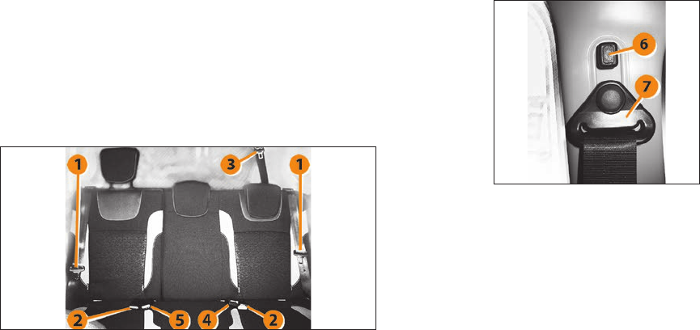
33
2. СИДЕНЬЯ, СИСТЕМЫ ПАССИВНОЙ БЕЗОПАСНОСТИ
Если Ваш ремень безопасности изначально полностью за-
блокирован, убедитесь, что автомобиль находится на гори-
зонтальной поверхности (механизм блокировки может сра-
батывать при стоянке на подъёме (спуске) или с частичным
заездом на бордюр), затем медленно, но сильно потяните за
ремень и вытяните его примерно на 3 см. Затем отпустите
ремень для втягивания и снова вытяните его.
Если неисправность сохраняется, обратитесь к дилеру LADA.
Рис. 2.10. Задние ремни безопасности
1 – Задний боковой ремень безопасности.
2 – Замок заднего бокового ремня безопасности.
3 – Задний средний ремень безопасности.
4 – Замок заднего среднего ремня безопасности
(черного цвета).
5 – Замок заднего среднего ремня безопасности
(красного цвета).
Рис. 2.11. Регулировка переднего ремня безопасности
6 – Клавиша регулятора.
7 – Направляющая переднего ремня безопасности.
Регулировка ремней безопасности
Прежде чем запускать двигатель, выполните регулировку
водительского места, места переднего пассажира и регу-
лировку положения ремней безопасности для обеспечения
наилучшей защиты.
Сядьте на сиденье, полностью откинувшись на спинку. Диа-
гональная ветвь ремня должна располагаться как можно
ближе к основанию шеи, но не лежать на ней. Поясная ветвь
ремня должна плотно прилегать к бёдрам. Беременные жен-
щины должны пользоваться ремнями безопасности, распо-
лагая поясную ветвь ремня как можно ниже и удобнее. Не до-
пускается, чтобы поясная ветвь ремня находилась на талии
или животе.
Ремень должен как можно плотнее прилегать к телу. Не на-
девайте при езде на автомобиле объёмную одежду, не допу-
скайте попадания под ремень посторонних предметов.
3
РпЭ XRAY 8450021621
34
2. СИДЕНЬЯ, СИСТЕМЫ ПАССИВНОЙ БЕЗОПАСНОСТИ
Чтобы отрегулировать положение поясной ветви ремня рас-
положите её как можно ниже на бёдрах и потяните диаго-
нальную ветвь ремня, как показано на рисунке 2.9, до плот-
ного прилегания ремня к телу.
Чтобы отрегулировать положение диагональной ветви ремня
относительно шеи (только для передних сидений) нажмите
на клавишу 6 (рис. 2.11) регулятора и установите направ-
ляющую переднего ремня безопасности 7 в одно из фик-
сированных положений так, чтобы лента ремня пересекала
центральную часть плеча, но не касалась при этом шеи. За-
вершив регулировку ремня, убедитесь, что он надёжно за-
фиксирован.
Отстёгивание ремня безопасности
Для отстёгивания ремня нажмите на красную кнопку замка,
ремень втянется автоматически. Для обеспечения полного
втягивания направляйте ремень, придерживая его за язычок
рукой.
Перед выходом из автомобиля убедитесь, что ремень без-
опасности вернулся в первоначальное положение, во из-
бежание попадания элементов ремня в дверной проём. Это
может привести к повреждению ремня безопасности при
закрытии двери. Ремень в таком случае может оказаться не-
пригодным для дальнейшей эксплуатации.
СИСТЕМА ПАССИВНОЙ БЕЗОПАСНОСТИ
Система пассивной безопасности водителя и переднего
пассажира, в зависимости от варианта исполнения, вклю-
чает в себя:
• модуль надувной подушки безопасности водителя, вмон-
тированный в рулевое колесо;
• модуль надувной подушки безопасности переднего пас-
сажира, размещенный в панели приборов;
• модули боковых надувных подушек безопасности води-
теля и переднего пассажира, размещенные в боковинах
спинок передних сидений – в вариантном исполнении;
• выносные датчики;
• ремни безопасности водителя и переднего пассажира с
устройством предварительного натяжения и ограничите-
лем нагрузки;
• соединитель с вращающимся устройством, установлен-
ный на вале рулевого управления для соединения вы-
ключателя звукового сигнала и модуля надувной подушки
безопасности водителя с бортовой цепью автомобиля;
• блок управления и диагностики, установленный на тунне-
ле пола кузова под консолью панели приборов;
• сигнализатор диагностики удерживающей системы в ком-
бинации приборов.
Компоненты удерживающей системы маркируются надписью
AIRBAG на крышке надувной подушки безопасности водителя,
надписью SRР AIRBAG на крышке надувной подушки безопас-
ности пассажира, а также имеются соответствующая наклейка
на солнцезащитном козырьке и надпись AIRBAG на ленте рем-
ня безопасности с устройством предварительного натяжения.
В случае фронтального удара эти устройства могут сработать
как одновременно, так и отдельно друг от друга. Принцип ра-
боты системы пассивной безопасности состоит в том, что
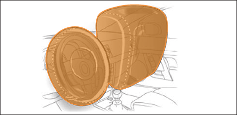
35
2. СИДЕНЬЯ, СИСТЕМЫ ПАССИВНОЙ БЕЗОПАСНОСТИ
при сильном фронтальном ударе, при условии, что зажигание
включено, за очень короткий промежуток времени втягиваются
передние ремни безопасности с устройством предваритель-
ного натяжения для надежной фиксации водителя и переднего
пассажира, и наполняются газом надувные подушки безопас-
ности (рис. 2.12). После удара подушки безопасности сразу же
сдуваются, что позволяет свободно покинуть автомобиль.
Рис. 2.12. Фронтальные надувные подушки безопасности
При раскрытии подушки безопасности опасность ограниче-
ния видимости для водителя практически отсутствует, так как
она наполняется и сдувается за короткий промежуток вре-
мени.
Ремни безопасности с устройством предварительного натя-
жения и ограничителем нагрузки, а также подушки безопас-
ности уменьшают опасность травмирования верхней части
тела и головы водителя и переднего пассажира.
Для подушки безопасности необходимо пространство при
наполнении ее газом. Подушки безопасности обеспечивают
оптимальную защиту при правильной установке положения
сиденья, спинки сиденья и подголовника:
• вся спина водителя должна опираться на спинку сиде-
нья, а сиденье должно быть отодвинуто назад настолько,
насколько это практически возможно водителю, чтобы
в вертикальном сидячем положении слегка согнутыми
в локтях руками можно было держать рулевое колесо;
• сиденье переднего пассажира максимально отодвинуть
назад и привести спинку в вертикальное положение так,
чтобы не испытывать неудобство и дискомфорт.
Неправильная посадка в случае раскрытия подушек без-
опасности может привести к серьезной травме или гибели.
Подушки безопасности приводятся в действие пиротехни-
ческой системой, чем объясняется звук хлопка, а также вы-
деление тепла и дыма при их срабатывании (что не означает
начало пожара). При срабатывании подушек безопасности
человек может получить повреждения кожи или иные травмы.
Надувные подушки безопасности являются дополнительным
средством защиты для пристегнутого ремнем безопасности
водителя и переднего пассажира. Раскрытие подушек безо-
пасности осуществляется в зависимости от силы, направле-
ния удара и других факторов (скорости движения автомоби-
ля, плотности и жесткости объекта, с которым сталкивается
автомобиль, и т.д.). При определенном сочетании этих фак-
торов от датчиков поступает электронный сигнал срабатыва-
ния (раскрытия) подушек безопасности.
Надувные подушки безопасности срабатывают при сильном
фронтальном столкновении – фронтальные подушки, при
сильном боковом столкновении – боковая подушка со сто-
роны удара:
• начиная с определенной тяжести столкновения;
• в зонах действия, показанных на рис. 2.13, выделены цве-
том.
Однако могут также сработать и в других аварийных ситуаци-
ях, если автомобиль будет испытывать воздействия, анало-
3*
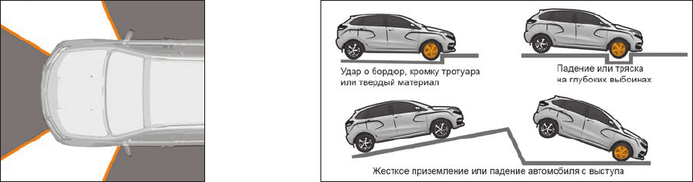
36
2. СИДЕНЬЯ, СИСТЕМЫ ПАССИВНОЙ БЕЗОПАСНОСТИ
Рис. 2.13. Зоны срабатывания
подушек безопасности
гичные тем, которым он подвергается при сильном фрон-
тальном или боковом столкновении.
Примеры ситуаций со срабатыванием системы пассивной
безопасности водителя и переднего пассажира:
• столкновение с неподвижным недеформируемым препят-
ствием: подушка может сработать при небольшой скоро-
сти движения;
• столкновение с подвижным деформируемым препятстви-
ем (например, с другим автомобилем): подушка срабаты-
вает только при повышенной скорости движения автомо-
биля и в зоне действия и срабатывания;
• в случае достаточного по силе удара, воздействующего
на автомобиль спереди, некоторые примеры показаны на
следующем рисунке.
Удерживающая система не срабатывает при:
• выключенном зажигании;
• недостаточной тяжести фронтальных или боковых столк-
новениях;
• опрокидывании автомобиля;
Рис. 2.14. Примеры ситуаций срабатывания
подушек безопасности
• ударах в автомобиль вне зоны действия и срабатывания
или сзади, т.е. в случаях, когда она не может способство-
вать повышению безопасности.
Подушки безопасности могут не раскрыться при столкно-
вениях на низкой скорости. Подушки безопасности не рас-
считаны на раскрытие в таких ситуациях, поскольку их сра-
батывание не приводит к повышению уровня защищенности,
обеспечиваемого ремнями безопасности.
Передние подушки безопасности могут не раскрыться при
боковом столкновении, поскольку при этом люди, находящи-
еся в автомобиле, смещаются в сторону удара, и раскрытие
передних подушек безопасности не приводит к повышению
уровня защищенности. Однако боковые подушки безопас-
ности, в зависимости от скорости движения автомобиля, ин-
тенсивности и угла направленности удара, могут раскрыться.
При столкновениях под некоторыми углами люди, находящи-
еся в автомобиле, смещаются в сторону удара. Если подуш-
ки безопасности не обеспечивают дополнительную защиту
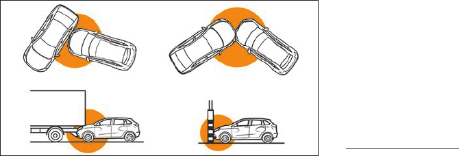
37
2. СИДЕНЬЯ, СИСТЕМЫ ПАССИВНОЙ БЕЗОПАСНОСТИ
Рис. 2.15. Примеры ситуаций не срабатывания
подушек безопасности
в этом направлении, датчики удара не выдают команду на
раскрытие подушек безопасности.
В ряде случаев автомобиль может оказаться под автомоби-
лем с более значительным дорожным просветом. Подушки
безопасности в такой ситуации могут не раскрыться, по-
скольку замедление, регистрируемое датчиком удара, при
таких столкновениях сравнительно невелико.
Подушки безопасности могут не раскрыться при фронталь-
ном столкновении автомобиля с такими объектами, как стол-
бы или деревья, так как направление концентрированной
силы удара находится вне силовых элементов кузова (лон-
жеронов). В этом случае датчики могут не зарегистрировать
удар такой силы, которая необходима для раскрытия поду-
шек безопасности.
Степень повреждения кузова автомобиля при столкновении
(или отсутствие серьезных повреждений) не всегда является
показателем нормальной или ненормальной работы систе-
мы пассивной безопасности. В некоторых случаях сильные
повреждения кузова свидетельствуют о том, что значитель-
ная часть энергии удара была поглощена деформацией эле-
ментов кузова. При этом пороговое значение замедления, на
которое настроены датчики замедления и которое вызывает
срабатывание подушек безопасности, могло быть не пре-
вышено. В других случаях, когда удар пришелся на более
жесткую часть автомобиля (например, ходовую часть) и со-
провождался более значительным замедлением, кузов не
получает значительных видимых повреждений, а подушки
срабатывают.
ПРЕДУПРЕЖДЕНИЕ!
• Надувная подушка безопасности не заменяет ремень
безопасности, она только дополняет его действие,
поэтому всегда пристегивайтесь ремнями безопас-
ности. Кто не пользуется ремнями безопасности, ри-
скует получить в момент ДТП существенно более
тяжелые травмы или даже быть выброшенным из ав-
томобиля, причем не исключена возможность смер-
тельного исхода. Ремень способствует тому, что при
ДТП Вы сохраните наиболее безопасное положение,
при котором подушка безопасности может обеспечить
наибольшую эффективность защиты.
• Никогда не размещайте при движении никакие пред-
меты на рулевом колесе и панели приборов, поскольку
при раскрытии подушек безопасности они могут при-
вести к травмам. Такая же опасность существует и в
тех случаях, когда водитель или пассажир курит труб-
ку или использует мобильный телефон во время езды.
• Управляя автомобилем, не кладите предплечья/ладо-
ни на место, в котором смонтирована подушка без-
опасности.
• При движении пассажир на переднем сиденье не дол-
жен опираться на панель приборов и держать на руках
38
2. СИДЕНЬЯ, СИСТЕМЫ ПАССИВНОЙ БЕЗОПАСНОСТИ
какие-либо предметы, которые могут причинить травмы
при срабатывании удерживающей системы. Также не
должен класть ноги на панель приборов или на сиденье,
т.к. это может привести к серьезным травмам. Пассажи-
ру рекомендуется постоянно следить за тем, чтобы все
части его тела (колени, руки, голова и т.д.) располага-
лись на достаточном удалении от панели приборов.
• Когда переднее сиденье находится в положении «сто-
лик», фронтальная пассажирская подушка безопасности
должна быть отключена. Есть риск получения серьезных
травм от предметов, находящихся на сложенной спинке,
при срабатывании подушки безопасности.
• Запрещается самовольное вмешательство в удержи-
вающую систему. Все работы по ней должны выпол-
няться только у дилера LADA специально обученным
персоналом.
• Сразу после срабатывания подушек безопасности
некоторые элементы системы могут иметь высокую
температуру. Во избежание ожогов не прикасайтесь к
горячим деталям.
• Поверхности кожи, на которых появляются признаки
раздражения, следует тщательно промыть мыльным
раствором. При раздражении глаз необходимо про-
мыть их чистой водой. При длительных беспокойствах
следует обратиться к врачу.
• При утилизации автомобиля обязательно провести
демонтаж компонентов системы пассивной безопас-
ности у дилера LADA.
При боковом столкновении боковая подушка безопасности
является дополнительным средством защиты водителя и пе-
реднего пассажира только, если они пристегнуты ремнями
безопасности!
ПРЕДУПРЕЖДЕНИЕ!
• Между внешней боковой поверхностью передних си-
дений и обивкой двери не должны располагаться по-
сторонние предметы!
• Запрещается использование чехлов на сиденьях с бо-
ковыми подушками безопасности водителя и перед-
него пассажира!
• Запрещается вешать или крепить посторонние пред-
меты на поручнях.
Во избежание непроизвольного срабатывания боковых по-
душек безопасности не допускайте ударов по центральным
стойкам в зоне установки боковых датчиков удара при вклю-
ченном зажигании. Любое вмешательство в систему пассив-
ной безопасности может привести к ее неправильному функ-
ционированию и, как следствие, к серьезным травмам.
Система пассивной безопасности водителя и переднего
пассажира является автономным устройством разового ис-
пользования. После срабатывания блок управления, модули
надувных подушек безопасности и ремни безопасности с
устройством предварительного натяжения подлежат обяза-
тельной замене у дилера LADA.
Автомобиль комплектуется выключателем подушки безопас-
ности переднего пассажира, предназначенным для отключе-
ния подушки при размещении на переднем сиденье ребенка
в специальном детском кресле. Отключение подушки без-
опасности предотвращает травмирование ребенка при сра-
батывании системы пассивной безопасности.
ПРЕДУПРЕЖДЕНИЕ!
НИ В КОЕМ СЛУЧАЕ не устанавливайте детское удержива-
ющее устройство против направления движения (спинкой
вперед) на сиденье переднего пассажира с невыключенной
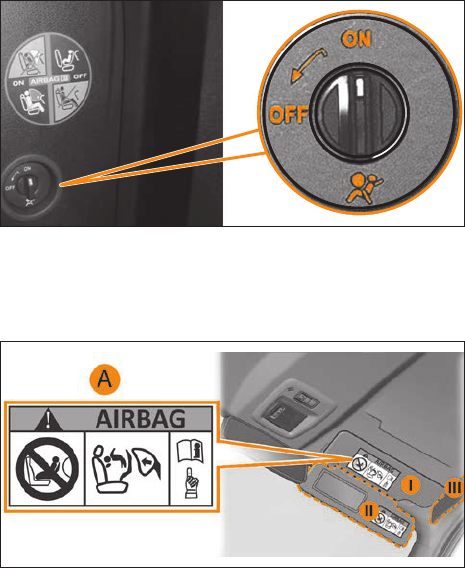
39
2. СИДЕНЬЯ, СИСТЕМЫ ПАССИВНОЙ БЕЗОПАСНОСТИ
подушкой безопасности. При срабатывании подушки без-
опасности ребенок может получить серьезные травмы.
Рис. 2.16. Выключатель подушки безопасности пассажира
Маркировка на панели приборов, и этикетка «А» (рис. 2.17)
с каждой стороны противосолнечного козырька переднего
пассажира напоминают Вам об этом предупреждении.
Рис. 2.17. Предупреждающие таблички на правом
противосолнечном козырьке
Выключатель расположен на правой боковой поверхности
панели приборов и доступен только при открытой двери пе-
реднего пассажира.
Для отключения подушки безопасности следует нажать на
рукоятку и повернуть ее в положение OFF (см. подраздел
«Органы управления и приборы» в разделе «3. ПАНЕЛЬ ПРИ-
БОРОВ, СРЕДСТВА УПРАВЛЕНИЯ»). При этом в блоке осве-
щения салона включится сигнализатор «Подушка безопасно-
сти переднего пассажира».
После снятия детского сиденья с сиденья пассажира следует
снова включить подушку безопасности пассажира для обе-
спечения защиты пассажира в случае фронтального удара.
Для включения подушки безопасности переднего пассажира
следует нажать и повернуть рукоятку в положение ON.
При включении зажигания в комбинации приборов загора-
ется сигнализатор диагностики «Система надувных подушек
безопасности» (см. подраздел «Комбинация приборов» в
разделе «3. ПАНЕЛЬ ПРИБОРОВ, СРЕДСТВА УПРАВЛЕНИЯ»)
и выключается через 3 секунды после окончания процесса
самодиагностики системы. Если при включении зажигания
сигнализатор диагностики не загорается или происходит
последующее включение сигнализатора в процессе эксплу-
атации автомобиля, то это свидетельствует о неисправности
в системе пассивной безопасности водителя и переднего
пассажира. Срабатывание системы при фронтальном или
боковом столкновении не гарантировано. В этом случае не
рекомендуется сажать на переднее сиденье пассажира, а
также установка детского сиденья на сиденье переднего
пассажира ЗАПРЕЩЕНА. Причина неисправности системы
должна быть установлена и устранена дилерами LADA.
40
2. СИДЕНЬЯ, СИСТЕМЫ ПАССИВНОЙ БЕЗОПАСНОСТИ
УСТАНОВКА ДЕТСКИХ
УДЕРЖИВАЮЩИХ УСТРОЙСТВ
Запрещается держать ребенка на коленях во время движе-
ния автомобиля. Наиболее безопасно перевозить детей
в возрасте до 12 лет на заднем сиденье с использованием
детских удерживающих устройств, соответствующих возра-
сту и весу ребенка.
На Вашем автомобиле для крепления детских удерживаю-
щих устройств используются штатные ремни безопасности
для взрослых пассажиров.
Безопасное размещение детей в автомобиле возможно
только при использовании детских удерживающих устройств,
соответствующих требованиям Европейского стандарта ECE
R44 (найдите соответствующую информацию на изделии или
упаковке).
В зависимости от типа детских удерживающих устройств,
используемых в Вашем автомобиле, необходимо правильно
выбрать места их установки, руководствуясь предлагаемой
ниже таблицей «Схема установки детских удерживающих
устройств».
Установка детских удерживающих устройств должна осу-
ществляться в соответствии с инструкцией производителя.
Прежде чем устанавливать детское удерживающее устрой-
ство против направления движения (спинкой вперед) на
сиденье переднего пассажира, обязательно отключите
фронтальную подушку безопасности переднего пассажира
(см. рис. 2.16). Перед установкой детского удерживающего
устройства на заднее среднее сиденье пассажира ремень
заднего среднего пассажира установите в положение, при
котором нижний язычок вставлен в замок 4 черного цвета
(см. рис. 2.10), далее руководствуйтесь рекомендациями
производителя детского удерживающего устройства.
ПРЕДУПРЕЖДЕНИЕ!
Запрещается установка детского удерживающего
устройства против направления движения на сиденье
переднего пассажира с активной фронтальной подушкой
безопасности.
Не оставляйте детей, находящихся в автомобиле, без
присмотра.
Не изменяйте конструкцию детских удерживающих
устройств.
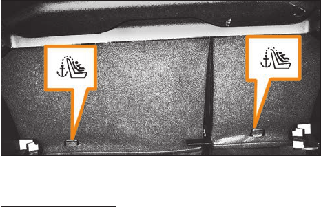
41
2. СИДЕНЬЯ, СИСТЕМЫ ПАССИВНОЙ БЕЗОПАСНОСТИ
УСТАНОВКА ДЕТСКИХ СИДЕНИЙ
С КРЕПЛЕНИЕМ ISOFIX
Ваш автомобиль оборудован системой крепления ISOFIX,
расположенной на боковых частях заднего сиденья, которая
позволяет установить детские удерживающие устройства
(сиденья) с креплениями ISOFIX, соответствующие требо-
ваниям Европейского стандарта ECE R44 (для детей массой
не более 18 кг). При выборе детского кресла с креплением
ISOFIX необходимо руководствоваться информацией, при-
веденной в таблице «Схема установки детских сидений с
креплением ISOFIX».
В систему крепления ISOFIX входят два нижних кронштей-
на ISOFIX и кронштейн для верхнего страховочного ремня
ISOFIX.
Нижние кронштейны ISOFIX, к которым присоединяются со-
ответствующие фиксаторы детского сиденья с креплением
ISOFIX, расположены у основания спинок заднего сиденья.
Места их расположения отмечены на спинках специальными
пиктограммами «ISOFIX». Перед подсоединением фиксато-
ров детского сиденья с креплением ISOFIX необходимо ос-
вободить зону расположения нижних кронштейнов ISOFIX,
разместив замки задних ремней безопасности по линии сты-
ка подушки и спинки заднего сиденья.
Убедитесь в том, что замки задних ремней безопасности
не препятствуют установке детского сиденья с креплением
ISOFIX. Подсоедините фиксаторы детского сиденья с кре-
плением ISOFIX в соответствии с инструкцией производите-
ля данного сиденья.
Кронштейны для верхнего страховочного ремня ISOFIX рас-
положены в нижней части спинки заднего сиденья со сторо-
ны багажного отделения и отмечены специальными этикет-
ками (рис. 2.18). После закрепления верхнего страховочного
троса ISOFIX отрегулируйте его натяжение в соответствии
с инструкцией производителя данного сиденья.
Рис. 2.18. Кронштейны для верхнего страховочного ремня
ISOFIX
ПРЕДУПРЕЖДЕНИЕ!
Детское сиденье с креплением ISOFIX может устанавли-
ваться в Вашем автомобиле только в том случае, если оно
соответствует требованиям Европейского стандарта ЕСЕ
R44 (найдите соответствующую надпись на изделии или
упаковке).
Следите за тем, чтобы во время установки фиксаторы
детского сиденья с креплением ISOFIX не повредили лен-
ту ремней безопасности заднего сиденья.
Установка детского сиденья с креплением ISOFIX должна
осуществляться в соответствии с инструкцией произво-
дителя данного сиденья.
42
2. СИДЕНЬЯ, СИСТЕМЫ ПАССИВНОЙ БЕЗОПАСНОСТИ
Схема установки детских удерживающих устройств
Весовая группа детского
удерживающего устройства
(возраст ребенка)
Тип детского
удерживающего устройства
Сиденье переднего пассажира Задние сиденья пассажиров
c включенной
подушкой
безопасности
c выключенной
подушкой
безопасности
или без подушки
безопасности
Боковые Среднее
«0» < 10 кг
(примерно 0–6 месяцев)
Поперечная люлька X X U (1) U (1)
Сиденье против направления
движения для группы «0»
Х U U U
«0+» < 13 кг
(примерно 6–18 месяцев)
Сиденье против направления
движения для группы «0+»
Х U U U
«1» 9–18 кг
(примерно 9 месяцев –
3,5 года)
Сиденье против направления
движения для группы «1»
X U U U
Сиденье по направлению
движения для группы «1»
UF U U U
«2» 15–25 кг
(примерно 3,5–6 лет)
Сиденье по направлению
движения для группы «2»
UF U U U
«3» 22–36 кг
(примерно 6–12 лет)
Сиденье по направлению
движения для группы «3»
UF U U U
U – место пригодно для «универсальной» категории детских удерживающих устройств, официально утвержденных для этой весовой группы;
UF – место пригодно для «универсальной» категории детских удерживающих устройств, устанавливаемых по направлению движения и офици-
ально утвержденных для этой весовой группы;
X – место не пригодно для установки детских удерживающих устройств этой весовой группы;
(1) – данное детское удерживающее устройство устанавливается поперек автомобиля и занимает два пассажирских места; ребенка следует рас-
полагать головой в противоположной от двери стороне.
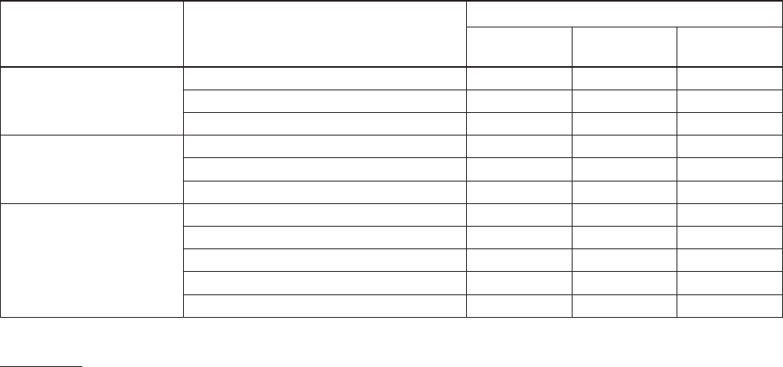
43
2. СИДЕНЬЯ, СИСТЕМЫ ПАССИВНОЙ БЕЗОПАСНОСТИ
Схема установки детских удерживающих устройств с креплением ISOFIX
Весовая группа детского
удерживающего устройства
(возраст ребенка)
Размерный класс ISOFIX
Положение систем крепления ISOFIX в автомобиле
правое место
заднего сиденья
среднее место
заднего сиденья
левое место
заднего сиденья
«0» < 10 кг
(примерно 0–6 месяцев)
F (Поперечная люлька) X X Х
G (Поперечная люлька) Х X X
E (Сиденье против направления движения) IL(2) X IL(2)
«0+» < 13 кг
(примерно 6–18 месяцев)
E (Сиденье против направления движения) IL(1) (2) X IL(1) (2)
D (Сиденье против направления движения) IL (2) X X
C (Сиденье против направления движения) X X X
«1» 9–18 кг
(примерно 9 месяцев –
3,5 года)
D (Сиденье против направления движения) IL (2) X X
C (Сиденье против направления движения) X X X
B (Сиденье по направлению движения) IUF/ IL Х IUF/ IL
B1 (Сиденье по направлению движения) IUF/ IL Х IUF/ IL
A (Сиденье по направлению движения) IUF/ IL Х IUF/ IL
IUF – место пригодно для установки «универсального» детского удерживающего устройства ISOFIX данного размерного класса. Убедитесь, что
установка детского удерживающего устройства ISOFIX возможна.
IL – место пригодно для установки «полууниверсального» детского удерживающего устройства ISOFIX данного размерного класса. Убедитесь,
что установка детского удерживающего устройства ISOFIX возможна.
Х – место не пригодное для установки детского удерживающего устройства ISOFIX.
(1) – рекомендуемым детским удерживающим устройством данного размерного класса является сиденье «Maxi Cosi Cabriofix» с базой ISOFIX
«Familyfix».
(2) – переместите переднее сиденье в переднее положение, установите детское удерживающее устройство, затем переместите переднее сиде-
нье назад, так чтобы оно не касалась детского удерживающего устройства.
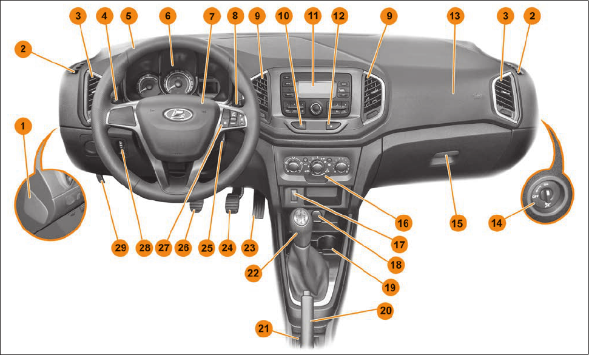
44
3. ПАНЕЛЬ ПРИБОРОВ, СРЕДСТВА УПРАВЛЕНИЯ
ОРГАНЫ УПРАВЛЕНИЯ И ПРИБОРЫ
Рис. 3.1.1. Органы управления и приборы автомобиля XRAY
(в вариантном исполнении)
45
3. ПАНЕЛЬ ПРИБОРОВ, СРЕДСТВА УПРАВЛЕНИЯ
1 – Крышка монтажного блока.
2 – Дефлекторы обдува передних боковых окон.
3 – Боковые вентиляционные сопла.
4 – Переключатель световой сигнализации.
5 – Рулевое колесо.
6 – Комбинация приборов.
7 – Выключатель звукового сигнала/накладка подушки
безопасности водителя.
8 – Переключатель стеклоочистителей.
9 – Центральные вентиляционные сопла.
10 – Выключатель аварийной сигнализации.
11 – Аудиосистема. В вариантном исполнении вместо
аудиосистемы устанавливается облицовка под радио-
аппарат и ниша для хранения мелких вещей (см. раздел
«Аудиосистема (АС) и мультимедийная система (ММС)»).
12 – Выключатель блокировки центрального замка дверей.
13 – Накладка подушки безопасности пассажира.
14 – Выключатель подушки безопасности пассажира.
15 – Рукоятка открывания/закрывания вещевого ящика.
16 – Панель управления климатической системой.
17 – Кнопка отключения системы электронного контроля
устойчивости («ESC OFF»).
В вариантном исполнении система электронного
контроля устойчивости управляется с переключателя
режимов движения, показанного на рисунке 4.7. См.
подраздел «Система электронного контроля устойчи-
вости» в разделе 4. ВОЖДЕНИЕ И УПРАВЛЕНИЕ АВТО-
МОБИЛЕМ.
18 – Розетка 12 В.
19 – Подстаканники.
20 – Рычаг стояночного тормоза.
21 – Выключатель системы безопасной парковки (в вари-
антном исполнении).
22 – Рычаг переключения механической коробки передач.
23 – Педаль акселератора.
24 – Педаль тормоза.
25 – Выключатель зажигания.
26 – Педаль сцепления.
27 – Дополнительные органы управления аудиосистемой.
28 – Переключатель корректора угла наклона света фар.
29 – Рукоятка отпирания капота.
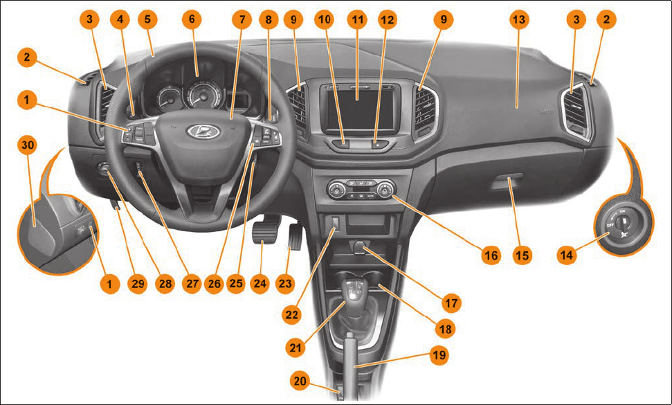
46
3. ПАНЕЛЬ ПРИБОРОВ, СРЕДСТВА УПРАВЛЕНИЯ
Рис. 3.1.2. Органы управления и приборы автомобиля XRAY
(в вариантном исполнении)
47
3. ПАНЕЛЬ ПРИБОРОВ, СРЕДСТВА УПРАВЛЕНИЯ
1 – Блоки управления системами «Круиз-контроль» и
«Ограничитель скорости».
2 – Дефлекторы обдува передних боковых окон.
3 – Боковые вентиляционные сопла.
4 – Переключатель световой сигнализации.
5 – Рулевое колесо.
6 – Комбинация приборов.
7 – Выключатель звукового сигнала/накладка подушки
безопасности водителя.
8 – Переключатель стеклоочистителей.
9 – Центральные вентиляционные сопла.
10 – Выключатель аварийной сигнализации.
11 – Мультимедийная система.
12 – Выключатель блокировки центрального замка дверей.
13 – Накладка подушки безопасности пассажира.
14 – Выключатель подушки безопасности пассажира.
15 – Рукоятка открывания/закрывания вещевого ящика.
16 – Панель управления климатической системой.
17 – Розетка 12 В.
18 – Подстаканники.
19 – Рычаг стояночного тормоза.
20 – Выключатель системы безопасной парковки (в вари-
антном исполнении).
21 – Селектор автоматизированной трансмиссии.
22 – Кнопка отключения системы электронного контроля
устойчивости («ESC OFF»).
В вариантном исполнении система электронного
контроля устойчивости управляется с переключателя
режимов движения, показанного на рисунке 4.7. См.
подраздел «Система электронного контроля устойчи-
вости» в разделе 4. ВОЖДЕНИЕ И УПРАВЛЕНИЕ АВТО-
МОБИЛЕМ.
23 – Педаль акселератора.
24 – Педаль тормоза.
25 – Выключатель зажигания.
26 – Дополнительные органы управления мультимедийной
системой.
27 – Переключатель корректора угла наклона света фар.
28 – Рукоятка регулировки наружных зеркал заднего вида с
электроприводом.
29 – Рукоятка отпирания капота.
30 – Крышка монтажного блока.
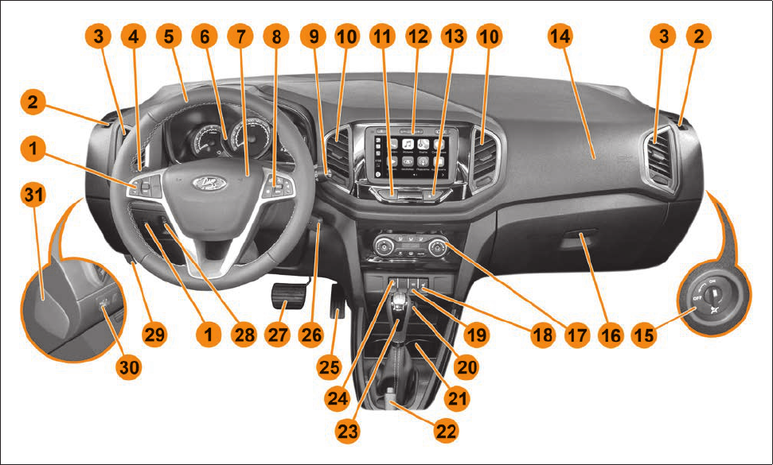
48
3. ПАНЕЛЬ ПРИБОРОВ, СРЕДСТВА УПРАВЛЕНИЯ
Рис. 3.1.3. Органы управления и приборы автомобиля XRAY Cross
(в вариантном исполнении)
49
3. ПАНЕЛЬ ПРИБОРОВ, СРЕДСТВА УПРАВЛЕНИЯ
1 – Блоки управления системами «круиз-контроль» и
«ограничитель скорости».
2 – Дефлекторы обдува передних боковых окон.
3 – Боковые вентиляционные сопла.
4 – Переключатель световой сигнализации.
5 – Рулевое колесо.
6 – Комбинация приборов.
7 – Выключатель звукового сигнала/накладка подушки
безопасности водителя.
8 – Дополнительные органы управления мультимедийной
системой.
9 – Переключатель стеклоочистителей.
10 – Центральные вентиляционные сопла.
11 – Выключатель аварийной сигнализации.
12 – Мультимедийная система.
13 – Выключатель блокировки центрального замка дверей.
14 – Накладка подушки безопасности пассажира.
15 – Выключатель подушки безопасности пассажира.
16 – Рукоятка открывания/закрывания вещевого ящика.
17 – Панель управления климатической системой.
18 – Выключатель подогрева переднего пассажирского
сиденья.
19 – Выключатель обогрева ветрового стекла.
20 – Розетка 12 В.
21 – Подстаканники.
22 – Рычаг стояночного тормоза.
23 – Рычаг переключения автоматической коробки передач.
24 – Выключатель подогрева водительского сиденья.
25 – Педаль акселератора.
26 – Ключ в выключателе зажигания.
27 – Педаль тормоза.
28 – Переключатель корректора угла наклона света фар.
29 – Рукоятка отпирания капота.
30 – Рукоятка регулировки наружных зеркал заднего вида
с электроприводом.
31 – Крышка монтажного блока.
4
РпЭ XRAY 8450021621
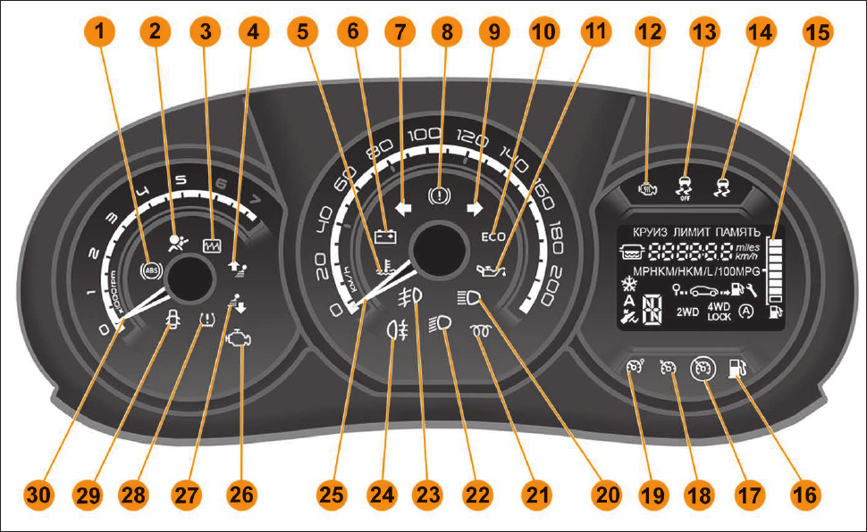
50
3. ПАНЕЛЬ ПРИБОРОВ, СРЕДСТВА УПРАВЛЕНИЯ
КОМБИНАЦИЯ ПРИБОРОВ. СИГНАЛЬНЫЕ ЛАМПЫ
Рис. 3.3. Комбинация приборов
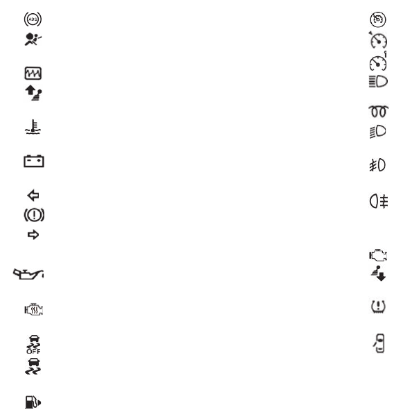
51
3. ПАНЕЛЬ ПРИБОРОВ, СРЕДСТВА УПРАВЛЕНИЯ
1 – сигнализатор ABS;
2 – cигнальная лампа надувных подушек
безопасности;
3 –
cигнальная лампа многофункциональная;
4 –
индикатор переключения передач
(переход на высшую передачу);
5 –
сигнальная лампа перегрева охлаждающей
жидкости;
6 –
сигнальная лампа разряда аккумуляторной
батареи;
7 –
сигнальная лампа «Указателя левого поворота»;
8 – cигнализатор «Отказ тормоза»;
9 – сигнальная лампа «Указателя правого поворота»;
10 – ECO индикатор режима «ECO»;
11 –
контрольная лампа давления моторного
масла;
12 –
сигнальная лампа подогревателя двигателя
(не используется);
13 –
сигнализатор «ESC OFF»;
14 – сигнализатор «ESC»;
15 – дисплей бортового компьютера;
16 –
сигнальная лампа минимального уровня
топлива в баке;
17 –
сигнальная лампа регулятора скорости;
18 –
сигнальная лампа «Круиз-контроль»;
19 –
сигнальная лампа «Ограничителя скорости»;
20 –
сигнальная лампа включения дальнего света
фар;
21 –
сигнальная лампа предпускового подогрева;
22 – сигнальная лампа включения фар ближнего
света;
23 –
сигнальная лампа включения передних
противотуманных фар;
24 –
сигнальная лампа включения задних
противотуманных фар;
25 – спидометр;
26 –
сигнальная лампа «Проверьте двигатель»;
27 – индикатор переключения передач
(переход на низшую);
28 –
сигнализатор «Аварийное давление в шинах»
(в вариантном исполнении);
29 –
индикатор «Открытых дверей»;
30 – тахометр.
4*
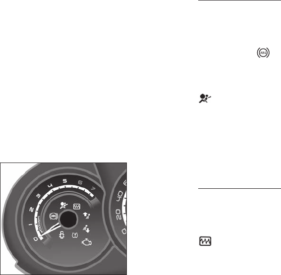
52
3. ПАНЕЛЬ ПРИБОРОВ, СРЕДСТВА УПРАВЛЕНИЯ
ИНДИКАТОРЫ И СИГНАЛЬНЫЕ ЛАМПЫ
В комбинацию приборов автомобиля встроен целый ком-
плекс контрольных ламп и световых индикаторов, при по-
мощи которых водитель получает важную информацию об
исправности и нарушении функционирования основных
агрегатов и систем автомобиля (контрольные лампы), а так-
же может контролировать исправность активации и отключе-
ния соответствующих узлов и систем (световые индикаторы).
Ниже приведен перечень и описание контрольных ламп и
световых индикаторов. При включении зажигания на корот-
кое время загорается большинство индикаторов для провер-
ки их работоспособности.
Цвета индикаторов обозначают:
• красный, оранжевый – опасность, важное напоминание;
• желтый – предупреждение, справка, неисправность;
• зеленый, синий – подтверждение включения.
Тахометр
Рис. 3.4. Тахометр (об/мин x 1000)
Тахометр (рис. 3.4) показывает частоту вращения коленчато-
го вала двигателя. Чтобы узнать число оборотов двигателя в
минуту, нужно показания тахометра умножить на 1000.
ПРЕДУПРЕЖДЕНИЕ!
Если стрелка тахометра переходит в красный сектор
шкалы, это означает, что превышена максимально раз-
решенная частота вращения коленчатого вала двигателя.
Двигатель может выйти из строя.
Сигнализатор
«ABS»
См. подраздел «Система электронного контроля устойчиво-
сти» в разделе 4. ВОЖДЕНИЕ И УПРАВЛЕНИЕ АВТОМОБИЛЕМ.
Сигнальная лампа надувных подушек безопасности
светится красным светом.
Индикатор загорается при включении зажигания.
При исправной системе надувных подушек безопасности он
погаснет примерно через несколько секунд после включения.
Если он не загорается, не гаснет или горит во время движе-
ния, это указывает на неисправность в контурах подушек без-
опасности либо натяжителей ремней безопасности (см. раз-
дел 2. СИДЕНЬЯ, СИСТЕМЫ ПАССИВНОЙ БЕЗОПАСНОСТИ).
ПРЕДУПРЕЖДЕНИЕ!
При возникновении аварийной ситуации эти системы мо-
гут не сработать. Немедленно обратитесь к официально-
му дилеру LADA.
Многофункциональная сигнальная лампа
светится красным или оранжевым светом.
Лампа загорается при включении зажигания и гаснет после за-
пуска двигателя. При некоторых неисправностях лампа может
загореться вместе с другими сигнальными лампами. Включе-
ние красной лампы сопровождается звуковым сигналом.
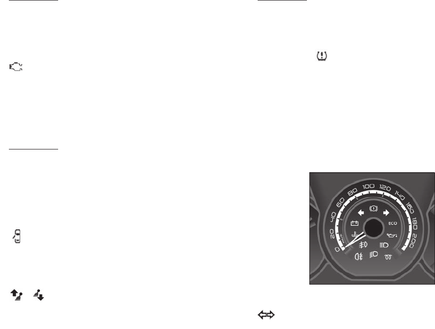
53
3. ПАНЕЛЬ ПРИБОРОВ, СРЕДСТВА УПРАВЛЕНИЯ
ВНИМАНИЕ!
При загорании этой сигнальной лампы в целях безопасно-
сти необходимо немедленно остановить автомобиль, как
только это позволят условия движения. Для устранения
неисправности обратитесь к официальному дилеру LADA.
Сигнальная лампа «Проверьте двигатель»
светится желтым светом.
Загорается при включении зажигания и выключается вскоре
после пуска двигателя (cм. раздел 4. ВОЖДЕНИЕ И УПРАВ-
ЛЕНИЕ АВТОМОБИЛЕМ).
Включение лампы сигнализатора или ее мигание при рабо-
тающем двигателе указывает на наличие неисправности в
системе управления двигателем, требующей устранения.
ВНИМАНИЕ!
Эксплуатация автомобиля с горящей или мигающей лам-
пой сигнализатора «Проверьте двигатель» может приве-
сти к выходу из строя системы управления двигателем,
увеличению расхода топлива и ухудшению динамичности
автомобиля. Необходимо обратиться к официальному
дилеру LADA.
Индикатор «Открытых дверей»
светится красным светом.
Данный индикатор служит для предупреждения об от-
крывании или неплотном закрывании дверей автомобиля
(cм. раздел 1. КЛЮЧИ, ДВЕРИ, ОКНА, ПЕДАЛИ).
Индикаторы переключения передач
и загораются в качестве рекомендации для перехо-
да на высшую (стрелка вверх) или на низшую (стрелка вниз)
передачу.
ВНИМАНИЕ!
Работа функции «Подсказчик переключения передач» ре-
гламентирована законодательными нормами и обеспечи-
вается на горизонтальной местности или на дорогах с не-
большим уклоном после завершения обкатки автомобиля.
Сигнализатор
«Аварийное давление в шинах» (в вари-
антном исполнении)
См. подраздел «Шины и колеса» в разделе «9. ПРАКТИЧЕ-
СКИЕ СОВЕТЫ».
Спидометр
Спидометр (рис. 3.5) показывает скорость движения автомо-
биля в км/ч. В зависимости от комплектации автомобиля при
превышении скорости 120 км/ч каждые 30 секунд раздается
звуковой сигнал длительностью примерно 10 секунд.
Рис. 3.5. Спидометр
Индикаторы указателя поворота
мигают зеленым светом.
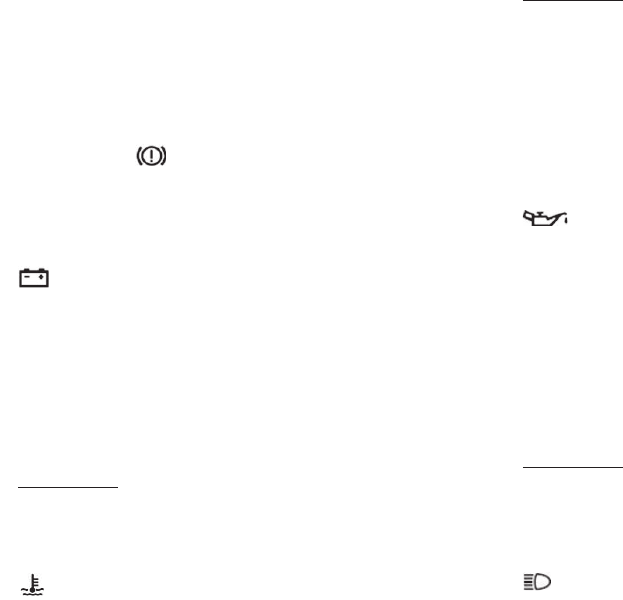
54
3. ПАНЕЛЬ ПРИБОРОВ, СРЕДСТВА УПРАВЛЕНИЯ
Мигание
Индикаторы мигают при включенных указателях поворота
или при включении аварийной световой сигнализации.
Частое мигание
Вероятен выход из строя лампы указателя поворота либо
соответствующего предохранителя (cм. раздел 8. УХОД ЗА
АВТОМОБИЛЕМ).
Сигнализатор
«Отказ тормоза»
См. подраздел «Система электронного контроля устойчиво-
сти» в разделе 4. ВОЖДЕНИЕ И УПРАВЛЕНИЕ АВТОМОБИ-
ЛЕМ.
Сигнальная лампа разряда аккумуляторной батареи
светится красным светом.
Загорается при включении зажигания на 2 секунды (режим
«самотестирования») и затем гаснет.
Включение лампы при работающем двигателе означает
нарушение нормальной работы системы электропитания
автомобиля и указывает на неисправность системы заряд-
ки аккумулятора, слабое натяжение или обрыв ремня при-
вода генератора или неисправность самого генератора
(cм. раздел 8. УХОД ЗА АВТОМОБИЛЕМ).
ВНИМАНИЕ!
Остановитесь и заглушите двигатель. Свяжитесь с офи-
циальным дилером LADA.
Сигнальная лампа температуры охлаждающей жидкости
светится красным светом.
Этa сигнальная лампа предупреждает о перегреве охлажда-
ющей жидкости двигателя (см. раздел 8. УХОД ЗА АВТОМО-
БИЛЕМ).
ВНИМАНИЕ!
Немедленно остановите автомобиль в безопасном месте
и дайте двигателю поработать несколько минут на холо-
стом ходу. Если сигнализатор не гаснет, заглушите дви-
гатель и как можно скорее обратитесь к официальному
дилеру LADA.
Продолжительное движение с горящей контрольной
лампой может привести к выходу двигателя из строя в
результате перегрева.
Контрольная лампа давления моторного масла
светится красным светом.
Загорается при включении зажигания на 2 секунды (режим
«самотестирования») и затем гаснет.
Если лампа горит постоянно после запуска двигателя, а так-
же включается во время движения (и сопровождается корот-
ким двойным звуковым сигналом) – это свидетельствует об
опасном падении давления масла в системах двигателя.
Если лампа включается во время движения автомобиля,
следует съехать с проезжей части, немедленно заглушить
двигатель и проверить уровень масла (cм. раздел 8. УХОД
ЗА АВТОМОБИЛЕМ).
ВНИМАНИЕ!
Эксплуатация автомобиля при включенной контрольной
лампе может привести к серьезным повреждениям и вы-
ходу двигателя из строя.
Сигнальная лампа включения дальнего света фар
светится синим светом.
Горит при включенном дальнем свете и при мигании фарами
(cм. раздел 3. ПАНЕЛЬ ПРИБОРОВ, СРЕДСТВА УПРАВЛЕ-
НИЯ. «Органы управления и приборы»).
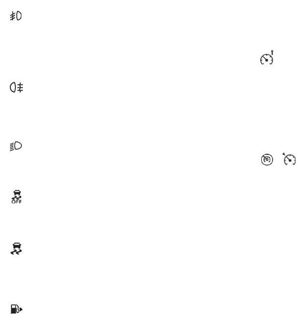
55
3. ПАНЕЛЬ ПРИБОРОВ, СРЕДСТВА УПРАВЛЕНИЯ
Сигнальная лампа включения передних
противотуманных фар
светится зеленым светом.
Горит при включенных передних противотуманных фарах
(cм. раздел 1. КЛЮЧИ, ДВЕРИ, ОКНА, ПЕДАЛИ. «Переключа-
тель световой сигнализации»).
Сигнальная лампа включения заднего противотуманного
фонаря
светится желтым светом.
Горит при включении заднего противотуманного фонаря (cм.
раздел 1. КЛЮЧИ, ДВЕРИ, ОКНА, ПЕДАЛИ. «Переключатель
световой сигнализации»).
Сигнальная лампа включения фар ближнего света
загорается зеленым светом при включенном ближнем
свете (cм. раздел 1. КЛЮЧИ, ДВЕРИ, ОКНА, ПЕДАЛИ. «Пере-
ключатель световой сигнализации»).
Сигнализатор
«ESC OFF»
См. подраздел «Система электронного контроля устойчивости»
в разделе 4. ВОЖДЕНИЕ И УПРАВЛЕНИЕ АВТОМОБИЛЕМ.
Сигнализатор
«ESC»
См. подраздел «Система электронного контроля устойчи-
вости» в разделе 4. ВОЖДЕНИЕ И УПРАВЛЕНИЕ АВТОМО-
БИЛЕМ.
Сигнальная лампа минимального уровня топлива в баке
загорается желтым светом при включении зажигания
и гаснет через несколько секунд.
Если лампа загорается при движении и раздается непро-
должительный звуковой сигнал, как можно скорее заправь-
те топливный бак. С момента первого загорания сигнальной
лампы Вы сможете проехать около 50 км.
Сигнализатор «Ограничителя скорости»
светится оранжевым светом.
Установленная скорость (см. подраздел «Системы «Круиз-
контроль» и «Ограничитель скорости» в разделе 5. СИСТЕМА
КОРРЕКЦИИ И ПОМОЩИ ПРИ ВОЖДЕНИИ АВТОМОБИЛЯ)
отображается в комбинации приборов вместо пунктирной
линии, а включение режима ограничения скорости под-
тверждается на дисплее сообщением «ЛИМИТ» и сигнальной
лампой «Ограничителя скорости».
Сигнализаторы регулятора скорости и «Круиз-контроль»
и
светятся зеленым светом.
Установленная скорость (см. подраздел «Системы «Круиз-
контроль» и «Ограничитель скорости» в разделе 5. СИСТЕМА
КОРРЕКЦИИ И ПОМОЩИ ПРИ ВОЖДЕНИИ АВТОМОБИЛЯ)
отображается в комбинации приборов вместо пунктирной
линии, а включение режима подтверждается на дисплее со-
общением «КРУИЗ» и сигнальной лампой регулятора скоро-
сти, которая светится вместе с сигнальной лампой «Круиз-
контроль».

56
3. ПАНЕЛЬ ПРИБОРОВ, СРЕДСТВА УПРАВЛЕНИЯ
БОРТОВОЙ КОМПЬЮТЕР
Рис. 3.6. Кнопки управления бортовым компьютером
на переключателе стеклоочистителей
1 – Дисплей бортового компьютера.
2 – Кнопки управления бортовым компьютером на переклю-
чателе стеклоочистителей.
Рис. 3.7. Кнопки управления бортовым компьютером
на переключателе стеклоочистителей
Рис. 3.8.1. Дисплей бортового компьютера
В вариантном исполнении в комбинации приборов приме-
няется дисплей бортового компьютера (рис. 3.8.2) с функци-
ями индикации температуры охлаждающей жидкости.
Рис. 3.8.2. Дисплей бортового компьютера
(в вариантном исполнении)
57
3. ПАНЕЛЬ ПРИБОРОВ, СРЕДСТВА УПРАВЛЕНИЯ
При коротких нажатиях на кнопку 2 «Вверх»
правого подру-
левого переключателя (рис. 3.6 и 3.7) на дисплее 1 последо-
вательно отображается следующая информация:
a. счетчик суммарного пробега;
b. счетчик № 1 пробега за поездку (с момента обнуления по-
казаний);
c. общий расход топлива (с момента группового обнуления
показаний);
d. средний расход топлива (с момента группового обнуле-
ния показаний);
e. текущий (мгновенный) расход топлива;
f. расчетный (примерный) запас хода на остатке топлива;
g. счетчик № 2 пробега за поездку (с момента группового
обнуления показаний);
h. средняя скорость (с момента группового обнуления пока-
заний);
i. установка давления в шинах (в вариантном исполне-
нии);
j. заданное значение ограничителя скорости или круиз-кон-
троля при включенной функции ограничителя скорости
или круиз-контроля (в вариантном исполнении);
k. индикация температуры наружного воздуха;
l. часы – индикация текущего времени (в вариантном
исполнении).
См. таблицу 1 с примерами данных, отображаемых на дис-
плее, на следующих страницах.
Обнуление счетчиков пробега за поездку
и обнуление других параметров
Для обнуления показаний счетчика № 1 пробега за поездку
следует кнопками 2 выбрать в меню бортового компьютера
режим b «Счетчик № 1 пробега за поездку» и, нажав любую из
кнопок перелистывания 2, удерживайте ее некоторое время.
Выбранное значение сначала начнет мигать, а потом про-
изойдет обнуление.
Обнуление показаний счетчика № 2 пробега за поездку воз-
можно только вместе с обнулением группы других показаний
бортового компьютера:
c. общий расход топлива;
d. средний расход топлива;
g. счетчик № 2 пробега за поездку;
h. средняя скорость.
Т.е. при обнулении одного из этих показаний обнуляется вся
группа. Для обнуления группы этих показаний следует кноп-
ками 2 выбрать в меню бортового компьютера любой из ре-
жимов c, d, g, h и, нажав любую из кнопок перелистывания
2, удерживайте ее некоторое время. Выбранное значение
сначала начнет мигать, а потом произойдет обнуление всех
четырех показаний группы.
Кроме того, при превышении максимального значения счет-
чиков пробега за поездку обнуление параметров происходит
автоматически.
Объяснение некоторых данных, отображаемых
на дисплее после обнуления показаний
Чем больше расстояние, пройденное с момента последней
операции обнуления, тем стабильнее и достовернее будут
показания средней скорости, среднего расхода топлива и
запаса хода на оставшемся в баке топливе.
На первых нескольких километрах пробега после обнуления
расчетных показателей Вы можете заметить, что запас хода
на имеющемся в баке топливе увеличивается во время дви-
жения. Это происходит из-за того, что учитывается средний
расход топлива с момента последнего обнуления показаний.
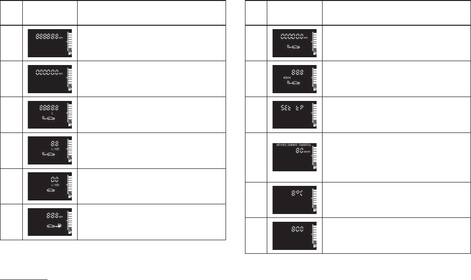
58
3. ПАНЕЛЬ ПРИБОРОВ, СРЕДСТВА УПРАВЛЕНИЯ
Показания
дисплея
Описание показаний
a Счетчик суммарного пробега, км
b
Счетчик № 1 пробега за поездку
(с момента обнуления показаний), км
c
Общий расход топлива (с момента
группового обнуления показаний), л
d
Средний расход топлива (с момента
группового обнуления показаний),
л/100 км
e
Текущий (мгновенный) расход топли-
ва, л/100 км
f
Расчетный (примерный) запас хода
на остатке топлива, км
Показания
дисплея
Описание показаний
g
Счетчик № 2 пробега за поездку
(с момента группового обнуления по-
казаний), км
h
Средняя скорость (с момента группо-
вого обнуления показаний), км/ч
i
Установка давления в шинах (в вари-
антном исполнении)
j
Заданное значение ограничителя
скорости или круиз-контроля при
включенной функции ограничите-
ля скорости или круиз-контроля
(в вариантном исполнении), км/ч
k
Индикация температуры наружного
воздуха*, °C
l
Часы – индикация текущего времени
(в вариантном исполнении), чч:мм
* В условиях недостаточного обдува датчика температуры окружающей среды (на стоянке, при движении в «пробке» и т.п.) возможно несо-
ответствие показаний действительной температуре.
Таблица 1
Примеры отображаемых данных на дисплее бортового компьютера
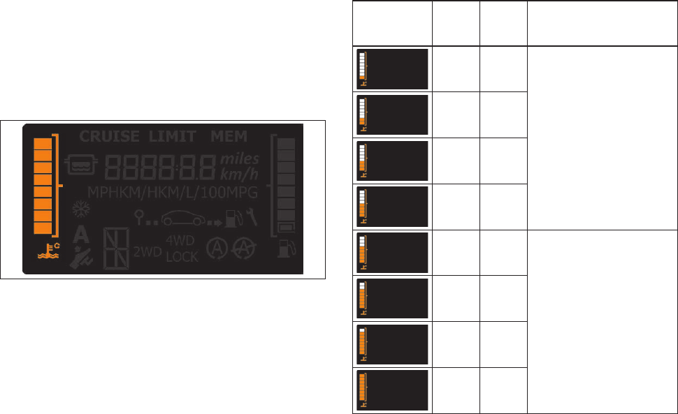
59
3. ПАНЕЛЬ ПРИБОРОВ, СРЕДСТВА УПРАВЛЕНИЯ
Средний расход топлива может уменьшаться в следующих
случаях:
• автомобиль закончил разгон;
• температура двигателя достигла нормы (а обнуление рас-
четных показателей было произведено при холодном дви-
гателе);
• Вы выехали из города с интенсивным движением на сво-
бодную загородную дорогу.
Отображение температуры охлаждающей жидкости
(в вариантном исполнении)
Рис. 3.8.3. Индикатор температуры охлаждающей жидкости
(в вариантном исполнении)
Отображение температуры охлаждающей жидкости осу-
ществляется только при включенном зажигании. Логика ра-
боты индикатора приведена в таблице 2.
Таблица 2
Показания индикатора температуры
охлаждающей жидкости
Показания
дисплея
Порог
включе-
ния, °С
Порог
выключе-
ния, °С
Логика работы
45
Отображение температу-
ры осуществляется толь-
ко в сторону увеличения
согласно порогам вклю-
чения. Для обновления
информации о темпера-
туре ниже 75 °С необхо-
димо повторно включить
зажигание.
55
65
75
111 108
Сегменты активируются
при превышении порога
включения и гаснут при
снижении ниже порога
выключения.
115 111
119 115
123 119
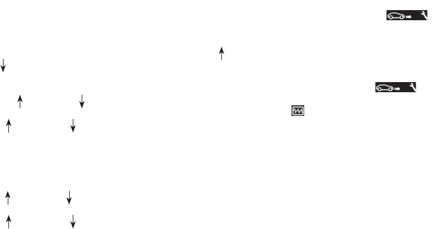
60
3. ПАНЕЛЬ ПРИБОРОВ, СРЕДСТВА УПРАВЛЕНИЯ
Настройка часов
на дисплее бортового компьютера
(в вариантном исполнении)
Коротким нажатием любой из кнопок 2 на правом подруле-
вом переключателе перейдите в режим индикации текущего
времени на дисплее 1 бортового компьютера.
При нажатии и удерживании любой из кнопок «Вверх»
или
«Вниз»
более 3 с часы переходят в режим коррекции вре-
мени, при этом начинают мигать разряды часов (разряды
минут не мигают). Однократное и короткое нажатие на кноп-
ку «Вверх»
или «Вниз» приведет к изменению показаний
на один час. При нажатии и длительном удерживании кнопки
«Вверх»
или «Вниз» происходит ускоренное изменение
значений часа до нужного текущего показания.
Если после корректировки часов в течение 5 с не нажимать
кнопки, то часы автоматически перейдут в режим коррекции
минут, при этом разряды минут начинают мигать (разряды
часов не мигают). Однократное и короткое нажатие на кнопку
«Вверх»
или «Вниз» приведет к изменению показаний на
одну минуту. При нажатии и длительном удерживании кнопки
«Вверх»
или «Вниз» происходит ускоренное изменение
значений минут до нужного текущего показания.
Если после корректировки минут в течение 5 с не нажимать
кнопки, то часы автоматически перейдут из режима коррек-
ции в режим индикации текущего времени.
Информирование о необходимости
сервисного обслуживания
Интервал сервисного обслуживания Вашего автомобиля со-
ставляет 15 000 км или один календарный год, в зависимости
от того, что наступит ранее.
При достижении порога срабатывания в 1500 км или один
месяц (в зависимости от того, что наступит ранее) до необ-
ходимости провести сервисное обслуживание при включе-
нии зажигания на экране бортового компьютера на 3 секун-
ды включается индикатор
. С этого момента в меню
можно найти этот же значок.
При достижении порога срабатывания в 0 км или 0 дней
(в зависимости от того, что наступит ранее) до необходи-
мости провести сервисное обслуживание при включении
зажигания на экране бортового компьютера на 3 секунды
включается индикатор
и непрерывно горит крас-
ным цветом индикатор общей неисправности электрической
цепи
.
После прохождения сервисного обслуживания и обнуления
счётчиков эти индикаторы погаснут.
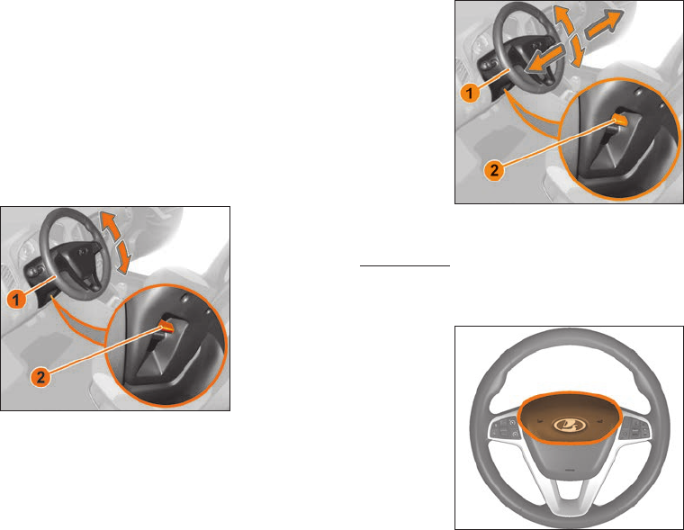
61
3. ПАНЕЛЬ ПРИБОРОВ, СРЕДСТВА УПРАВЛЕНИЯ
РУЛЕВОЕ КОЛЕСО
На автомобиле устанавливается рулевая колонка, регулиру-
емая по высоте. В вариантном исполнении колонка регули-
руется по высоте и вдоль рулевой колонки.
Регулировка положения рулевого колеса (рис. 3.9.1) произ-
водится в следующем порядке:
• переместите блокирующий рычаг 2 на себя;
• путём перемещения рулевой колонки вверх/вниз устано-
вите рулевое колесо 1 в удобное для Вас положение по
высоте;
• переместите рычаг 2 от себя, убедившись, что он полно-
стью блокирует рулевую колонку.
Рис. 3.9.1. Регулировка положения рулевого колеса
Регулировка положения рулевого колеса в вариантном ис-
полнении (рис. 3.9.2) производится в следующем порядке:
• переместите блокирующий рычаг 2 на себя;
• путём перемещения рулевой колонки вверх/вниз и впе-
ред/назад установите рулевое колесо 1 в удобное для Вас
положение;
• переместите рычаг 2 от себя, убедившись, что он полно-
стью блокирует рулевую колонку.
Рис. 3.9.2. Регулировка положения рулевого колеса
(в вариантном исполнении)
ВНИМАНИЕ!
Запрещается проводить регулировку положения рулево-
го колеса во время движения автомобиля.
Рис. 3.10. Активация звукового сигнала
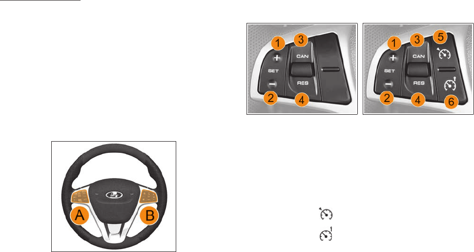
62
3. ПАНЕЛЬ ПРИБОРОВ, СРЕДСТВА УПРАВЛЕНИЯ
ПРЕДУПРЕЖДЕНИЕ!
• Активировать звуковой сигнал разрешается нажатием
только верхней части крышки модуля подушки без-
опасности водителя (выделенная зона, рис. 3.10).
• Активировать звуковой сигнал ниже рекомендованной
зоны запрещается!
• Активировать звуковой сигнал ударом по крышке мо-
дуля запрещается!
В вариантном исполнении на рулевом колесе расположены
дополнительные органы управления (рис. 3.11.1) системами
«Круиз-контроль» и «Ограничитель скорости» (блок А), а так-
же органы управления мультимедийным оборудованием и
обогревом рулевого колеса (блок В).
Рис. 3.11.1 Рулевое колесо
с дополнительными органами управления
(в вариантном исполнении)
Варианты исполнения дополнительного блока А показаны
на рисунке 3.11.2.
Рис. 3.11.2 Дополнительный блок А
(в вариантном исполнении)
1, 2 – выключатель «SET+/SET–»: увеличение и уменьшение
скорости системы круиз-контроля;
3 – выключатель «CAN»: временное выключение круиз-кон-
троля/ограничителя скорости;
4 – выключатель «RES»: вызов ранее занесенного в память
значения скорости;
5 – выключатель «
»: включение/выключение системы
«Круиз-контроля»;
6 – выключатель «
»: включение/выключение системы
«Ограничителя скорости».
Для более подробной информации см. раздел «Системы
«Круиз-контроль» и «Ограничитель скорости».
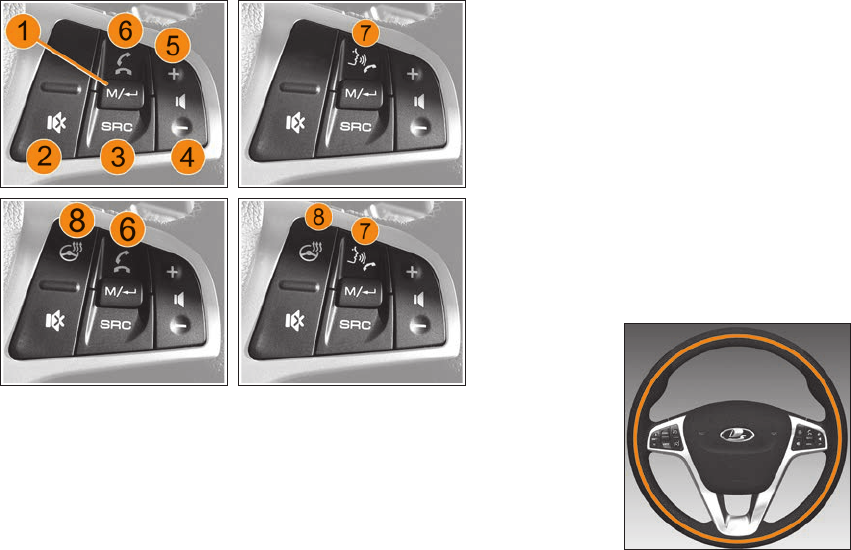
63
3. ПАНЕЛЬ ПРИБОРОВ, СРЕДСТВА УПРАВЛЕНИЯ
Варианты исполнения дополнительного блока В показаны
на рисунке 3.11.3.
Рис. 3.11.3 Дополнительный блок В
(в вариантном исполнении)
1 – Выбор/подтверждение источника (радио/USB).
2 – Выключение звука.
3 – Переключение доступных источников сигнала (радио
либо дополнительные устройства).
4 – Уменьшение громкости.
5 – Увеличение громкости.
6 – Принять (завершить)/отклонить входящий звонок.
7 – Длительное нажатие – активация функции голосового
управления.
При получении вызова:
– короткое нажатие: ответ на вызов;
– длительное нажатие: отклонить вызов;
– короткое нажатие во время вызова: завершение вызова.
Для более подробной информации см. раздел «Аудиосисте-
ма (АС) и мультимедийная система (ММС)», а также в руко-
водстве пользователя АС/ММС.
8 – Включение/отключение функции обогрева рулевого ко-
леса.
В вариантном исполнении рулевое колесо может иметь
функцию обогрева. Зоны обогрева показаны на рисунке
3.11.4.
Рис. 3.11.4. Зоны обогрева рулевого колеса
(в вариантном исполнении)
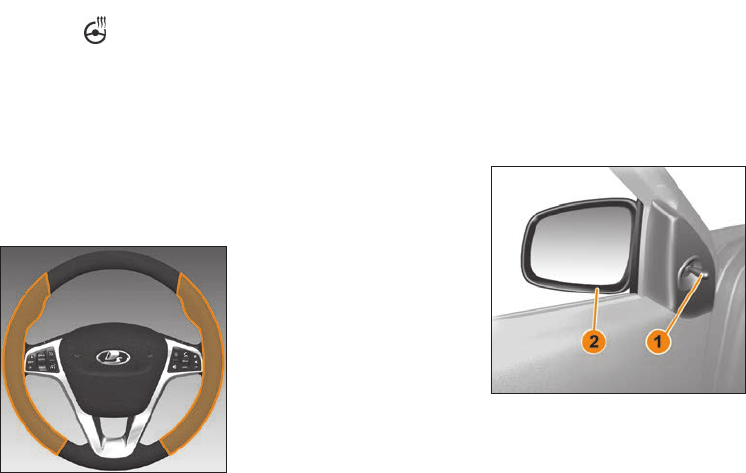
64
3. ПАНЕЛЬ ПРИБОРОВ, СРЕДСТВА УПРАВЛЕНИЯ
При включенном зажигании подогрев рулевого колеса вклю-
чается нажатием кнопки
, расположенной на дополни-
тельном блоке В. Включение подтверждается изменением
цвета индикатора кнопки на оранжевый.
Используйте обогрев только при заведенном двигателе.
Обогрев рулевого колеса отключится автоматически при-
близительно через 30 минут после включения.
Также можно отключить обогрев повторным нажатием на
кнопку.
Выделенные зоны обода на рисунке 3.11.5 подогреваются
быстрее и до большей температуры, чем другие участки.
Рис. 3.11.5. Зоны максимального обогрева
рулевого колеса
(в вариантном исполнении)
ЗЕРКАЛА ЗАДНЕГО ВИДА
Перед началом движения необходимо обеспечить оптималь-
ный обзор назад. Для этого используется регулировка зер-
кал заднего вида.
Наружные зеркала заднего вида
Рис. 3.12. Регулировка наружных зеркал заднего вида
с механическим приводом
1 – Ручка.
2 – Зеркало заднего вида.
Сферические наружные зеркала заднего вида увеличивают
поле обзора, при этом отраженные предметы представляют-
ся дальше, чем они находятся на самом деле.
По этой причине зеркала могут быть ограниченно использо-
ваны для оценки расстояния до находящихся сзади объектов.
Зеркала заднего вида 2 с механическим приводом (рис.
3.12) регулируются поворотом ручки 1 в соответствующую
сторону.
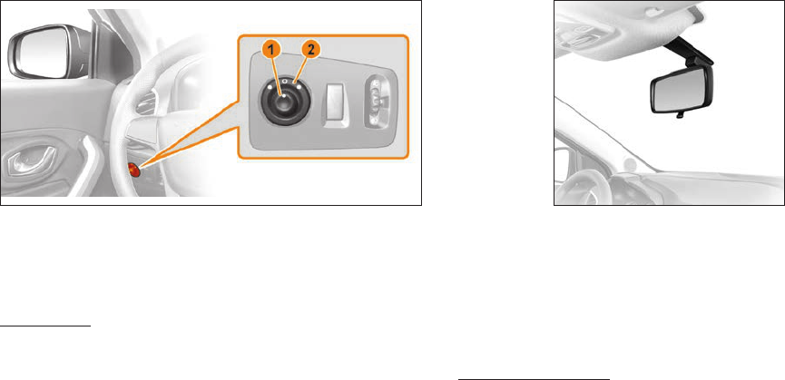
65
3. ПАНЕЛЬ ПРИБОРОВ, СРЕДСТВА УПРАВЛЕНИЯ
В вариантном исполнении регулировка зеркал заднего
вида осуществляется при помощи электропривода.
Для активации привода левого (правого) зеркала поверните
рукоятку 1 (рис. 3.13) влево (вправо), совместив метку на ру-
коятке с левой (правой) меткой на корпусе 2 переключателя.
Регулировка зеркала осуществляется перемещением руко-
ятки 1 в соответствующую сторону.
Центральная метка на корпусе – нейтральное положение.
Рис. 3.13. Регулировка зеркал заднего вида с электроприводом
(в вариантном исполнении).
1 – Рукоятка переключателя.
2 – Корпус переключателя.
ВНИМАНИЕ!
В зимних условиях возможно замерзание попавшей внутрь
корпуса наружных зеркал воды, что может привести к по-
вышенным усилиям или ограничениям регулировки по-
ложения зеркал. Не применяйте чрезмерные усилия или
дополнительный инструмент для изменения положения
зеркал, это приведет к повреждению зеркал и механизмов
регулировки. Дождитесь разморозки механизмов (исполь-
зуйте, например, обогрев зеркал, мойку автомобиля в те-
плом помещении и т.д.) и отрегулируйте зеркала в нужное
для вас положение. Продуйте зеркала от остатков воды
сжатым воздухом. При очистке наружных зеркал от снега,
старайтесь, чтобы снег не попадал внутрь корпусов зеркал.
Внутреннее зеркало
Рис. 3.14. Внутреннее зеркало заднего вида
Внутреннее зеркало (рис. 3.14) заднего вида регулируется
поворотом его вокруг шарнирной опоры.
При ослеплении в ночное время светом фар движущегося
сзади транспорта установите зеркало в противоослепляющее
положение нажатием рычага на нижней части его корпуса.
ПРЕДУПРЕЖДЕНИЕ!
При настройке зеркала в противоослепляющее поло-
жение для ночной езды возможно ухудшение четкости
обзора.
5
РпЭ XRAY 8450021621
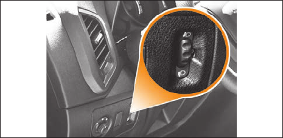
66
3. ПАНЕЛЬ ПРИБОРОВ, СРЕДСТВА УПРАВЛЕНИЯ
Подогрев и складывание зеркал
При работающем двигателе обогрев наружных зеркал
(в вариантном исполнении) обеспечивается одновремен-
но с обогревом заднего стекла при включении соответству-
ющего включателя.
При необходимости (во время стоянки) наружные зеркала
могут быть сложены.
Для этого следует прижать корпус зеркала к кузову автомо-
биля вручную. Чтобы вернуть зеркало в рабочее положение,
нужно слегка надавить на его корпус в обратном направлении.
ПЕРЕКЛЮЧАТЕЛЬ ЭЛЕКТРОКОРРЕКТОРА
СВЕТА ФАР
Рис. 3.15. Колесико переключателя электрокорректора
угла наклона света фар
Перед началом эксплуатации автомобиля с включенным
ближним светом убедитесь в правильности положения коле-
сика переключателя электрокорректора угла наклона света
фар (рис. 3.15) в зависимости от состояния нагрузки авто-
мобиля:
0 – водитель или водитель + передний пассажир;
1 – водитель + 4 пассажира или водитель + груз в багажном
отделении 100 кг;
2 – водитель + 4 пассажира + груз в багажном отделении
50 кг.
При необходимости откорректируйте наклон светового пучка
ближнего света фар поворотом колесика переключателя до
совмещения одной из меток (цифры) на шкале, соответству-
ющей состоянию нагрузки автомобиля, с меткой на корпу-
се. При установке колесика переключателя в положение за
пределами рекомендуемых меток (цифр) на шкале возможно
проявление следующих негативных эффектов:
• асинхронность наклона пучка ближнего света правой и ле-
вой блок-фар (что не является дефектом);
• недостаточная дальность освещения дорожного полотна.
67
4. ВОЖДЕНИЕ И УПРАВЛЕНИЕ АВТОМОБИЛЕМ
ОСНОВЫ БЕЗОПАСНОЙ
ЭКСПЛУАТАЦИИ АВТОМОБИЛЯ
Ваша безопасность и охрана среды обитания зависят от тех-
нической исправности Вашего автомобиля и соблюдения
правил его эксплуатации.
Нижеприведенные рекомендации в значительной степени
повысят Вашу безопасность на дорогах и позволят сохра-
нить транспортное средство в исправном состоянии.
Меры предосторожности
при эксплуатации автомобиля
Не превышайте нагрузки автомобиля, указанной в данном
руководстве.
Перегрузка приводит к повреждению элементов подвески,
преждевременному износу шин и к потере устойчивости ав-
томобиля.
Не допускайте быстрой езды по дорогам с нарушенным по-
крытием, так как резкие удары могут деформировать детали
силового агрегата, кузова и подвески.
В случае сильных ударов (например, при наезде на бор-
дюр) во избежание создания внезапной аварийной ситуа-
ции обратитесь к дилерам для проверки состояния автомо-
биля.
Регулярно проверяйте состояние защитных резиновых чех-
лов рейки рулевого механизма, шаровых опор, тяги переклю-
чения передач, шарниров привода передних колес, а также
защитных колпачков шарниров рулевых тяг.
Если чехол или колпачок поврежден, неправильно установ-
лен или скручен, то в шарнир или механизм будут проникать
пыль, вода и грязь, что вызовет их усиленный износ и раз-
рушение. Поэтому поврежденный чехол или колпачок немед-
ленно заменяйте новым, а неправильно установленный или
скрученный – поправьте.
ВНИМАНИЕ!
Для смазки узлов и агрегатов применяйте материалы,
рекомендуемые заводом-изготовителем.
Применение других материалов может привести к пре-
ждевременному износу или повреждению этих узлов и
агрегатов.
Чтобы избежать работы двигателя с излишне высокой ча-
стотой вращения при движении автомобиля своевременно
переключайте передачи. Тем самым Вы уменьшите износ
двигателя и снизите расход топлива.
ВНИМАНИЕ!
Двигатель автомобиля рассчитан на применение бензи-
на с октановым числом не ниже, чем указано в разделе
11. ПРИЛОЖЕНИЯ, «Приложение 1». Эксплуатация авто-
мобиля на бензинах с меньшим октановым числом при-
ведет к его отказу!
Не забывайте регулярно проверять давление воздуха в ши-
нах, так как эксплуатация шин с давлением, отличающимся от
рекомендованного (см. раздел 9. ПРАКТИЧЕСКИЕ СОВЕТЫ.
«Шины и колеса»), приводит к их преждевременному износу,
увеличению расхода топлива, а также к ухудшению устойчи-
вости и управляемости автомобиля.
ПРЕДУПРЕЖДЕНИЕ!
Разница давления на одной оси всего на 0,02–0,03 МПа
ухудшает управляемость, а при экстренном торможении
может привести к заносу!
5*
68
4. ВОЖДЕНИЕ И УПРАВЛЕНИЕ АВТОМОБИЛЕМ
На автомобиле установлен гидропривод сцепления с меха-
низмом компенсации износа накладок сцепления, благода-
ря которому исключена ручная регулировка привода за весь
срок службы накладок. Во избежание пробуксовки сцепле-
ния, после переключения передачи и включения сцепления
снимите ногу с педали.
ВНИМАНИЕ!
В процессе движения не держите ногу на педали сцепле-
ния и не держите руку на рычаге переключения передач,
это может привести к повреждению и преждевременно-
му износу деталей механизма переключения передач.
Постоянно следите за чистотой клемм и зажимов аккумуля-
торной батареи и за надежностью их соединения.
Помните, что окисление клемм и зажимов, а также ненадеж-
ное соединение вызывают искрение в месте ненадежного
контакта, что может привести к отказу электронного обору-
дования автомобиля. Также не допускается проверять ра-
ботоспособность генератора при работающем двигателе
путем снятия зажимов с аккумуляторной батареи.
ПРЕДУПРЕЖДЕНИЕ!
На автомобиле установлена система зажигания высокой
энергии. Поэтому при работающем двигателе касание
элементов системы зажигания опасно.
Кроме того, не рекомендуется проверять цепи высокого на-
пряжения «на искру», так как это может привести к отказу
элементов системы зажигания.
Во избежание разрядки аккумуляторной батареи при не-
работающем двигателе не оставляйте на длительное время
ключ в выключателе зажигания.
Избегайте резкого открывания дверей в конце их хода. Не
оставляйте незакрытыми двери на остановке при сильном
ветре, чтобы избежать деформации передних кромок дверей.
Зимой, когда слой льда или снега на опускных стеклах за-
трудняет их передвижение, не применяйте чрезмерных уси-
лий при вращении ручки, чтобы не повредить механизм сте-
клоподъемника.
Для предотвращения отказа электростеклоподъемников
обязательно очищайте стекла дверей от льда и снега.
Эксплуатация нового автомобиля
Во время обкатки нового автомобиля до пробега первых
2000 км:
• после пробега первой тысячи километров (в т.ч. после
замены колес) проконтролируйте затяжку болтов креп-
ления колес и, при необходимости, подтяните;
• при движении автомобиля не превышайте скорости
110 км/ч и частоты вращения двигателя 3500 мин
-1
;
• своевременно, в соответствии с дорожными условиями,
включайте высшие и низшие передачи в коробке передач,
избегая перегрузки двигателя (пользуйтесь подсказками
индикатора переключения передач на комбинации при-
боров);
• не производите буксировки прицепа или другого автомо-
биля;
• режимы движения – резкое трогание с места, в том числе
с включенным ручным тормозом, разворот с пробуксов-
кой передних колес при максимальной частоте вращения
двигателя – не допускаются, так как это приводит к по-
вреждению дифференциала.
После пробега первых 2000 км можно постепенно увели-
чивать частоту вращения двигателя и скорость автомобиля.
69
4. ВОЖДЕНИЕ И УПРАВЛЕНИЕ АВТОМОБИЛЕМ
ПРЕДУПРЕЖДЕНИЕ!
Работа новых шин, тормозных колодок и дисков сцепле-
ния оптимизируется только после их обкатки (притирки).
Поэтому первые 500 км используйте сдержанную манеру
движения с умеренными ускорениями. Если при даль-
нейшей эксплуатации указанные компоненты будут за-
менены, то выполните указание по обкатке заново.
ПОДГОТОВКА АВТОМОБИЛЯ
К ДВИЖЕНИЮ
ВНИМАНИЕ!
Перед выездом из гаража или с места стоянки проверьте
техническое состояние автомобиля.
Для этого:
• Проверьте и доведите до нормы давление воздуха в ши-
нах (см. раздел 9. ПРАКТИЧЕСКИЕ СОВЕТЫ. «Шины и ко-
леса» таблицу 1).
• Проверьте уровень масла в картере двигателя и, при не-
обходимости, доведите его до нормы.
• Проверьте уровни охлаждающей и омывающей жидко-
стей и, при необходимости, доведите их до нормы.
• Проверьте уровень тормозной жидкости.
• Проверьте исправность ламп внешних световых прибо-
ров и их чистоту.
• Проверьте функционирование системы очистки стёкол.
• Проверьте правильность установки зеркал, сидений и
ремней безопасности.
• Проверьте фиксацию автомобиля на уклоне рычагом сто-
яночного тормоза.
Наличие следов масел и эксплуатационных жидкостей под
автомобилем свидетельствует о негерметичности его узлов
и агрегатов. В этом случае необходимо обратиться к диле-
рам для выявления и устранения причин их появления.
ПРЕДУПРЕЖДЕНИЕ!
Не откладывая, устраняйте обнаруженные неисправно-
сти у дилера LADA.
Посадка водителя за рулем
ПРЕДУПРЕЖДЕНИЕ!
Безопасная техника вождения автомобиля во многом за-
висит от правильной посадки водителя.
Правильная посадка – водитель достаточно плотно опи-
рается на спинку сиденья, ноги при полном ходе педалей
вытянуты не полностью, а обе руки, слегка согнутые в
локтевых суставах, удерживают верхнюю часть рулевого
колеса.
Положение тела должно быть устойчивым, но не напря-
женным – это предотвращает быстрое утомление.
70
4. ВОЖДЕНИЕ И УПРАВЛЕНИЕ АВТОМОБИЛЕМ
ПУСК ДВИГАТЕЛЯ
Данные рекомендации обеспечивают пуск исправного двига-
теля с аккумуляторной батареей, заряженной не менее чем на
75%, с моторным маслом класса вязкости по SAE, соответству-
ющим температуре окружающей среды (см. раздел ПРИЛОЖЕ-
НИЯ, «Приложение 1»), на бензине класса испаряемости для
зимнего периода года в зависимости от климатического райо-
на применения в соответствии с ГОСТ Р 51866-2002.
Для автомобилей с механической коробкой передач:
1. Перед пуском двигателя вставьте ключ в выключатель за-
жигания, поставьте автомобиль на ручной тормоз (либо на-
жмите на педаль тормоза), выжмите до упора педаль сцепле-
ния, переведите рычаг переключения передач в нейтральное
положение.
Включите зажигание, сделайте паузу в несколько секунд,
чтобы электробензонасос успел поднять давление в топлив-
ной рампе до рабочего значения.
ВНИМАНИЕ!
Во время пуска двигателя не следует нажимать на педаль
акселератора. Пуск двигателя оптимизирован до темпера-
туры окружающей среды минус 27 °С без участия водителя
в управлении дроссельной заслонкой. При полном (до упо-
ра) нажатии на педаль акселератора в режиме пуска двига-
теля топливоподача блокируется для продувки цилиндров
двигателя от лишнего топлива после неудачных пусков.
2. Включите стартер. Нажатую до упора педаль сцепления
удерживайте до окончания пуска и выхода двигателя на
устойчивый холостой ход. После пуска двигателя отпустите
ключ зажигания – стартер выключится.
Примечание. Запрещается включать стартер более чем на 10 секунд.
3. Если в течение 10 секунд работы стартера двигатель не пу-
стился, повторите пуск не ранее чем через 40 секунд.
4. Если вторая попытка пуска была безуспешной, третью
начните не ранее чем через 40 секунд с полностью нажатой
педалью акселератора (режим продувки цилиндров). После
6-8 секунд продувки плавно отпустите педаль акселератора.
ВНИМАНИЕ!
Несоблюдение вышеуказанных рекомендаций может
привести к перегрузке стартера и выходу его из строя!
Для надежной и долговечной работы стартера строго
следуйте этим рекомендациям!
5. Если и третья попытка пуска не удалась, то либо темпе-
ратура окружающей среды ниже минус 27 градусов (грани-
цы возможности холодного пуска двигателя без вспомога-
тельных устройств), либо двигатель неисправен, либо есть
какое-то отклонение от рекомендаций, приведенных выше.
Для решения возникшей проблемы необходимо обратиться
к официальным дилерам LADA.
ВНИМАНИЕ!
Не допускается при помощи стартера начинать движение
автомобиля. Это может повредить стартер и другие си-
стемы автомобиля! Движение начинайте на первой пере-
даче в коробке передач при работающем двигателе.
Для автомобилей с автоматической коробкой передач
(АКП):
Перед пуском двигателя нажмите на кнопку фиксации и пе-
реведите рычаг переключения передач в положение P или N.
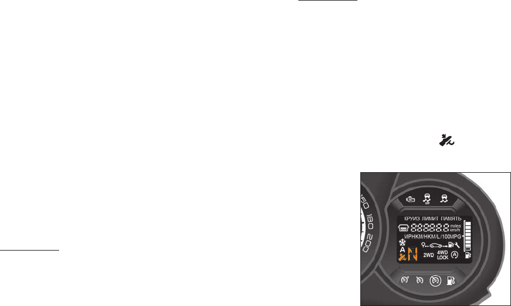
71
4. ВОЖДЕНИЕ И УПРАВЛЕНИЕ АВТОМОБИЛЕМ
В положении P пуск двигателя возможен без нажатия педа-
ли тормоза. В положении N пуск двигателя возможен только
при нажатии педали тормоза. Включите зажигание и пустите
двигатель.
Нажмите педаль тормоза и, нажав на кнопку фиксации, пере-
ведите рычаг переключения передач из положения P в поло-
жение R или D (в зависимости от желаемого направления на-
чать движение). При этом нога должна находиться на педали
тормоза, педаль акселератора должна быть отпущена.
Условия начала движения
На Вашем автомобиле в качестве автоматической короб-
ки передач используется вариатор (CVT – бесступенчатая
трансмиссия).
На автомобиле, оснащенном вариаторной коробкой пере-
дач, не рекомендуется начинать движение сразу после пуска
двигателя, особенно в зимний период.
Для предотвращения интенсивного износа комплектующих
коробки передач рекомендуется после пуска двигателя дать
время (не менее 30 секунд), чтобы масло в коробке передач
под давлением попало на все смазывающиеся поверхности.
В течение нескольких минут после начала движения следует
избегать резких ускорений.
ВНИМАНИЕ!
При движении на автомобиле, оснащенном вариаторной
коробкой передач, рекомендуется избегать пробуксов-
ки, резкого ускорения и торможения, это небезопасно
для агрегата и обеспечивает повышенный износ КП.
При остановке на подъеме не следует держать ногу на пе-
дали акселератора. Это создает риск перегрева автома-
тической коробки передач.
В очень холодную погоду система может блокировать
переключение передач вручную, пока коробка передач
не прогреется до рабочей температуры.
ВНИМАНИЕ!
Для автомобилей с автоматической коробкой передач
(CVT) буксировка автомобиля для пуска двигателя запре-
щена.
Для автомобилей с автоматизированной трансмиссией:
1. Перед пуском двигателя вставьте ключ в выключатель за-
жигания. Если селектор выбора режимов работы коробки
передач находится в положении отличном от N, на дисплее
комбинации приборов будет отображаться подсказка в виде
моргающего сигнализатора N (рис. 4.1). Установите селек-
тор режима движения в нейтральное положение N и нажмите
педаль тормоза (сигнализатор
погаснет, сигнализатор N
перестанет моргать).
Рис. 4.1. Подсказки на дисплее
комбинации приборов
72
4. ВОЖДЕНИЕ И УПРАВЛЕНИЕ АВТОМОБИЛЕМ
В любых других положениях селектора или, если педаль тор-
моза не будет нажата, двигатель не запустится. Это является
требованием безопасности.
При повороте ключа зажигания возможна задержка пуска
двигателя на 2–3 секунды, это связано с процедурой инициа-
лизации системы управления трансмиссией.
2. Включите зажигание, сделайте паузу в несколько секунд,
чтобы электробензонасос успел поднять давление в топлив-
ной рампе до рабочего значения.
ВНИМАНИЕ!
Во время пуска двигателя не следует нажимать на педаль
акселератора. Пуск двигателя оптимизирован до темпе-
ратуры окружающей среды минус 27 °С без участия во-
дителя в управлении дроссельной заслонкой.
При полном (до упора) нажатии на педаль акселератора в
режиме пуска двигателя топливоподача блокируется для
продувки цилиндров двигателя от лишнего топлива по-
сле неудачных пусков.
3. Включите стартер. После пуска двигателя отпустите ключ
зажигания – стартер выключится.
Примечание. Запрещается включать стартер более чем на 10 секунд.
4. Если в течение 10 секунд работы стартера двигатель не пу-
стился, повторите пуск не ранее чем через 40 секунд.
5. Если вторая попытка пуска была безуспешной, третью
начните не ранее чем через 40 секунд с полностью нажа-
той педалью акселератора (режим продувки цилиндров).
После 6-8 секунд продувки плавно отпустите педаль аксе-
лератора.
ВНИМАНИЕ!
Несоблюдение вышеуказанных рекомендаций может
привести к перегрузке стартера и выходу его из строя!
Для надежной и долговечной работы стартера строго
следуйте этим рекомендациям!
6. Если и третья попытка пуска не удалась, то либо темпера-
тура окружающей среды ниже минус 27 градусов (границы
возможности холодного пуска двигателя без вспомогатель-
ных устройств), либо двигатель неисправен, либо есть какое-
то отклонение от рекомендаций, приведенных выше.
Для решения возникшей проблемы необходимо обратиться
к дилеру LADA.
ПРЕДУПРЕЖДЕНИЕ!
Выхлопные газы ядовиты! Поэтому помещение, в кото-
ром производится пуск и прогрев двигателя, должно хо-
рошо вентилироваться.
Особенности эксплуатации автомобиля
с системой впрыска топлива
Загорание сигнальной лампы системы контроля отработав-
ших газов (см. раздел 3. ПАНЕЛЬ ПРИБОРОВ «Комбинация
приборов») при работающем двигателе сигнализирует о
наличии неисправности. Но это не означает, что двигатель
должен быть немедленно остановлен – контроллер имеет
резервные режимы, позволяющие двигателю работать в ус-
ловиях, близких к нормальным.
ВНИМАНИЕ!
Тем не менее, причина неисправности должна быть
устранена как можно быстрее. Для этого обратитесь к
официальному дилеру LADA.
73
4. ВОЖДЕНИЕ И УПРАВЛЕНИЕ АВТОМОБИЛЕМ
ВНИМАНИЕ!
Нейтрализатор является дорогостоящим узлом, обеспе-
чивающим охрану окружающей среды. Нейтрализатор
может быть поврежден пропусками воспламенения в
цилиндрах двигателя (внешнее проявление – перебои в
работе двигателя и подергивания при движении автомо-
биля), т.к. несгоревшее в цилиндрах топливо будет вос-
пламеняться в нейтрализаторе и температура в нем рез-
ко возрастет, что вызовет повреждение каталитического
элемента нейтрализатора.
Электронные блоки управления двигателем имеют функцию
защиты нейтрализаторов от пропусков воспламенения. При
появлении пропусков воспламенения в одном или несколь-
ких цилиндрах сигнальная лампа системы контроля отрабо-
тавших газов включается в мигающем режиме, производится
отключение подачи топлива в цилиндрах, в которых обнару-
жены пропуски, после этого сигнальная лампа горит посто-
янно до конца поездки.
При появлении пропусков воспламенения нужно принять
срочные меры по их устранению.
Автомобили, оснащенные нейтрализаторами, можно заво-
дить буксировкой только при холодном двигателе.
Предпочтительнее заводить двигатель с использованием
другого аккумулятора или внешнего источника тока 12 В
и ни в коем случае не используйте стартер для передвижения
автомобиля.
Автомобиль оснащен приемной трубой с каталитическим
нейтрализатором, имеющим высокую рабочую температу-
ру, поэтому категорически запрещается помещать и хранить
в моторном отсеке легковоспламеняющиеся материалы и
предметы (ветошь, бумагу и т.п.) для предотвращения воз-
можного возгорания.
ВНИМАНИЕ!
Жидкостные выделения из выхлопной трубы относятся к
конденсату и являются естественным рабочим процес-
сом, неисправностью не является.
ОСОБЕННОСТИ ЭКСПЛУАТАЦИИ АВТОМОБИЛЯ
С УСИЛИТЕЛЕМ РУЛЕВОГО УПРАВЛЕНИЯ
На автомобиль устанавливается электрогидравлический, ги-
дравлический или электромеханический усилитель рулевого
управления, благодаря которому управление автомобилем
становится легким и приятным.
Усилитель рулевого управления мгновенно отслеживает все
управляющие воздействия на рулевое управление и произ-
водит увеличение крутящего момента, передаваемого Вами
через рулевое колесо, по определенному, специально подо-
бранному для автомобиля, алгоритму в зависимости от ско-
рости движения автомобиля.
Малое усилие на рулевом колесе, обеспечиваемое усили-
телем рулевого управления, позволяет вращать рулевое ко-
лесо с большой скоростью. При этом в крайних положениях
возможны незначительные удары ограничителя хода рейки о
картер, сопровождаемые небольшим стуком. Для исключе-
ния повреждения картера рулевого механизма необходимо
контролировать скорость вращения рулевого колеса в край-
них положениях и не прикладывать повышенных усилий при
упоре рейки в ограничитель.
Эксплуатация автомобиля с неисправным усилителем
НЕ РЕКОМЕНДУЕТСЯ. В этом случае следует обратиться к
дилеру LADA для выяснения причин неисправности.
74
4. ВОЖДЕНИЕ И УПРАВЛЕНИЕ АВТОМОБИЛЕМ
ВНИМАНИЕ!
Усилитель рулевого управления функционирует только
при работающем двигателе автомобиля.
В случае отключения усилителя, например, при букси-
ровке автомобиля с выключенным двигателем, автомо-
биль остается управляемым, однако для этого потре-
буется прикладывать к рулевому колесу значительно
большие усилия.
Особенности эксплуатации автомобиля
с электрогидравлическим
(в вариантном исполнении – с гидравлическим)
усилителем рулевого управления
В крайних положениях рулевого колеса на автомобиле с
электрогидравлическим (гидравлическим) усилителем воз-
можно появление шума, вызванного работой перепускного
клапана. Это не является неисправностью. При возвращении
рулевого колеса к среднему положению перепускной клапан
выключается, и шум исчезает.
При эксплуатации автомобиля в очень холодную погоду уси-
лие на рулевом колесе может быть повышено, что связано с
увеличением вязкости масла в усилителе рулевого управле-
ния. Дождитесь, пока двигатель прогреется до рабочей тем-
пературы, и начинайте движение.
ВНИМАНИЕ!
При работающем двигателе не удерживайте рулевое ко-
лесо более 5 секунд после его поворота в крайнее правое
или левое положение. Это может привести к поврежде-
нию насоса усилителя рулевого управления.
Особенности эксплуатации автомобиля
с электромеханическим усилителем
рулевого управления
Электроусилитель начинает функционировать после запуска
двигателя автомобиля. При определенных условиях (напри-
мер, перегрев электроусилителя) электроусилитель может
снизить компенсирующий момент или отключиться.
ВНИМАНИЕ!
Такие отключения вызваны алгоритмом работы электро-
усилителя и не являются признаками неисправности.
При повторном запуске двигателя автомобиля и отсут-
ствии вышеперечисленных условий, работоспособность
электроусилителя восстанавливается.
При высоких скоростях вращения рулевого колеса возможно
увеличение усилия на рулевом колесе при подходе к крайним
положениям. Это результат работы алгоритма электроусили-
теля, направленного на снижение динамических ударов в ру-
левом управлении.
При быстром вращении рулевого колеса возможно прослу-
шивание функционального шума.
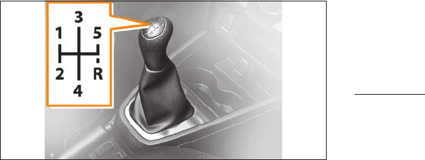
75
4. ВОЖДЕНИЕ И УПРАВЛЕНИЕ АВТОМОБИЛЕМ
УПРАВЛЕНИЕ КОРОБКОЙ ПЕРЕДАЧ
Механическая коробка передач (МКП)
Рис. 4.2.1. Рычаг переключения механической коробки передач
Схема положений рычага переключения передач в механи-
ческой коробке передач нанесена сверху на его рукоятке
(рис. 4.2.1):
1, 2, 3, 4, 5 – первая, вторая, третья, четвертая, пятая пере-
дачи.
R – передача заднего хода.
Нейтральное положение – между третьей и четвертой пере-
дачей.
Перед пуском двигателя убедитесь, что рычаг переклю-
чения передач находится в нейтральном положении.
Для включения передачи заднего хода отведите рычаг
переключения передач из нейтрального положения впра-
во до упора и переместите его назад по ходу движения
автомобиля.
Если включить передачу не удается, верните рычаг в нейт-
ральное положение, отпустите педаль сцепления, затем
выжмите сцепление снова и повторите попытку включения
передачи.
Обращайте внимание на полное выключение сцепления при
переключении передач, для чего педаль сцепления следу-
ет отжимать до упора. Иначе возможно затруднение при
переключении передач и повышение износа синхрони-
заторов.
ВНИМАНИЕ!
Передачу заднего хода включайте только после полной
остановки автомобиля.
Включение задней передачи производится только на не-
подвижном автомобиле и не раньше, чем через три се-
кунды после выжимания педали сцепления.
Автоматическая коробка передач (АКП)
Переключение режимов автоматической коробки передач
осуществляется перемещением рычага переключения пере-
дач в направлении согласно схеме режимов переключений
(рис. 4.2.2), в зависимости от желаемого направления дви-
жения. Для разблокировки рычага необходимо нажать кноп-
ку фиксации 1 на рукоятке рычага переключения передач.
При перемещении рычага из положения N в положение D,
М, «+», «–» и обратно кнопку фиксатора можно не нажимать.
Выбранный режим индицируется на жидкокристаллическом
индикаторе в комбинации приборов.
Схема положений рычага переключения передач в автомати-
ческой коробке передач нанесена сверху на его рукоятке и
имеет две линии для переключения режимов работы.
76
4. ВОЖДЕНИЕ И УПРАВЛЕНИЕ АВТОМОБИЛЕМ
Рис. 4.2.2. Рычаг переключения автоматической коробки передач
Одна линия для переключения из положения P (стоянка) в ней-
тральное положение N, на задний ход R или автоматический
режим движения D и другая линия для переключения на более
высокую или низкую передачу в режиме ручного управления M:
«+» – для включения повышенной передачи;
«–» – для включения пониженной передачи.
Две линии соединены для переключения между автоматиче-
ским режимом D и режимом ручного управления M.
Режим ручного управления M может быть включен только из
автоматического режима D.
Режим заднего хода R можно включать только из нейтраль-
ного положения N.
Переключение на более высокую «+» или низкую передачу
«–» возможно только в режиме ручного управления M.
Положения P, N, R, D, M являются фиксированными, положе-
ния «+» и «–» – нефиксированные.
Положения рычага:
P (стоянка) – используется для исключения качения автомо-
биля на стоянке либо при пуске двигателя. При этом стояноч-
ный тормоз может быть включен или выключен.
R (задний ход) – передача заднего хода. Может быть включе-
на только после полной остановки автомобиля, при работе
двигателя на холостом ходу.
N (нейтральная передача) – используется при пуске двига-
теля на стоянке одновременно с включенным стояночным
тормозом или при буксировке автомобиля. Кроме того,
данное положение рычага переключения можно использо-
вать для пуска двигателя при внезапной его остановке во
время движения, но без использования стояночного тор-
моза.
ВНИМАНИЕ!
Если, находясь в движении, Вы случайно перевели ры-
чаг переключения передач в положение N, дайте дви-
гателю сбавить обороты, прежде чем включить режим
D (включается без нажатия кнопки фиксатора) и вновь
разогнаться.
D (вождение) – используется для трогания и вождения в ав-
томатическом режиме переключения передач.
Включенная передача и положение паркинг (1, 2, 3, 4, 5, 6,
D, R, N, P) отображаются на дисплее в комбинации приборов.
Особенности эксплуатации автомобилей
с автоматической коробкой передач
ПРЕДУПРЕЖДЕНИЕ!
Если необходимо проводить работы с автомобилем при
работающем двигателе, включите стояночный тормоз и
переведите рычаг переключения в положение P.
77
4. ВОЖДЕНИЕ И УПРАВЛЕНИЕ АВТОМОБИЛЕМ
Трогание и движение
в автоматическом режиме
Нажмите на педаль тормоза и, нажав на кнопку фиксации,
переведите рычаг переключения передач в положение D,
при этом ощутите небольшой толчок, отпустите педаль тор-
моза и, медленно нажимая на педаль акселератора, начните
движение. В большинстве случаев, при обычных условиях
движения, Вам больше не потребуется пользоваться рыча-
гом переключения передач: переключение передач будет
проходить автоматически в нужный момент и при оптималь-
ной частоте вращения коленчатого вала двигателя, так как
автоматика учитывает нагрузку автомобиля, профиль дороги
и выбранный Вами режим вождения.
Для того, чтобы совершить обгон, Вам нужно до упора нажать
педаль акселератора. При этом коробка передач автомати-
чески переключится на низшую передачу в зависимости от
текущей скорости движения автомобиля. Автомобиль начнет
ускоряться, используя всю мощность двигателя.
Трогание и движение задним ходом
Нажмите на педаль тормоза и, нажав кнопку фиксации, пе-
реведите рычаг переключения передач в положение R, при
этом ощутите небольшой толчок, отпустите педаль тормоза.
Медленно нажимая на педаль акселератора, начните дви-
жение.
Остановка автомобиля
После полной остановки автомобиля, удерживая ногу на пе-
дали тормоза, переведите рычаг переключения передач в
положение P, при этом в коробке передач будет включена
нейтральная передача, а ведущие колеса механически за-
блокируются трансмиссией.
ВНИМАНИЕ!
Никогда не пытайтесь перевести рычаг переключения
передач в положение P во время движения автомобиля.
Это приведет к серьезным механическим повреждениям
и к потере управляемости автомобиля.
Кратковременные остановки
При кратковременной остановке, например, перед светофо-
ром, необязательно переходить на позицию N и, тем более,
Р. Достаточно удерживать автомобиль с помощью педали
тормоза. Двигатель при этом будет работать в режиме холо-
стого хода.
Стоянка
Автомобиль должен быть остановлен полностью. Включите
стояночный тормоз и после этого поставьте рычаг переклю-
чения передач в положение стоянки Р. Благодаря такому по-
рядку операций, особенно на уклонах, блокировочный меха-
низм не будет слишком нагружен и впоследствии можно будет
легко вывести рычаг переключения передач из этой позиции.
Снятие блокировки рычага переключения передач
коробки передач
При разряженной аккумуляторной батарее рычаг переклю-
чения передач нельзя перевести из положения Р, даже если
нажать кнопку на рычаге, при нажатой педали тормоза и, сле-
довательно, ведущие колеса останутся механически забло-
кированными трансмиссией.
Для перевода рычага переключения передач из положения Р
необходимо провести демонтаж декоративного чехла рыча-
га от облицовки туннеля пола, который фиксируется на четы-
рех защелках по углам рамки чехла, затем поднять его вверх
78
4. ВОЖДЕНИЕ И УПРАВЛЕНИЕ АВТОМОБИЛЕМ
Рис. 4.2.3 Разблокировка рычага переключения передач
в положение А (рис. 4.2.3), и в месте, показанном стрелкой
В посредством гибкого стержня от пишущей ручки, нажать
вниз на кнопку С принудительной разблокировки, находя-
щуюся в отверстии в корпусе селектора впереди от рычага и
одновременно нажать на кнопку 1 (см. рис. 4.2.2) на рукоятке
рычага. Теперь Вы сможете перевести рычаг переключения
передач из положения Р в положение N.
ПРЕДУПРЕЖДЕНИЕ
В целях обеспечения безопасности, во время проведе-
ния этой операции, включите стояночный тормоз и удер-
живайте нажатой педаль тормоза.
ВНИМАНИЕ!
Если Вы сталкиваетесь с проблемами при переводе ры-
чага переключения передач автоматической коробки
передач из положения Р (стоянка), выполнив все выше-
указанные операции, обратитесь к дилеру LADA.
Рис. 4.3. Селектор автоматизированной трансмиссии
Автоматизированная трансмиссия(АМТ)
Автомобиль с АМТ не имеет педали сцепления, все процессы
оперирования сцеплением автоматизированы.
Все режимы трансмиссии обозначены буквами на селекто-
ре и при выборе соответствующего режима дублируются на
дисплее бортового компьютера в комбинации приборов.
Селектор автоматизированной трансмиссии имеет две ли-
нии для переключения режимов работы (рис. 4.3).
Одна линия для переключения из нейтрального положения
N на задний ход R или автоматический режим движения D и
другая линия для переключения на более высокую или низ-
кую передачу в режиме ручного управления M:
«+» – для включения повышенной передачи;
«–» – для включения пониженной передачи.
Две линии соединены для переключения между автоматиче-
ским режимом D и режимом ручного управления M.
Режим ручного управления M может быть включен только из
автоматического режима D.
79
4. ВОЖДЕНИЕ И УПРАВЛЕНИЕ АВТОМОБИЛЕМ
Режим заднего хода R можно включать только из нейт-
рального положения N.
Переключение на более высокую «+» или низкую передачу
«–» возможно только в режиме ручного управления M.
Положения селектора N, R, D, M являются фиксированными,
положения «+» и «–» нефиксированные.
Движение вперед
Движение вперед возможно после перевода селектора в по-
ложение D или М при нажатой педали тормоза. При нажатии
на педаль акселератора сцепление включается и автомобиль
начинает движение.
Режим М позволяет проводить комбинированное торможе-
ние автомобиля рабочим тормозом и двигателем последо-
вательным переключением передач на низшие передачи.
Режим D настроен на максимально комфортный стиль во-
ждения, и задержки в переключении несколько более
длительны, чем на режиме М. Режимы D и М обладают
функцией резкого ускорения «kick-down». Данная функция
предназначена для получения дополнительной мощности,
необходимой для обгона другого автомобиля или при дви-
жении на подъем. С силой до упора нажмите на педаль ак-
селератора (до преодоления сопротивления перемещения
педали), и, в зависимости от скорости и частоты вращения
двигателя, автоматика переключится на оптимальную по-
ниженную передачу. Переключение на следующую повы-
шенную передачу произойдет сразу после достижения мак-
симальной частоты вращения двигателя, соответствующей
данной передаче.
ВНИМАНИЕ!
Необходимо учитывать, что при срабатывании устрой-
ства «kick-down» во время движения по гладким и скольз-
ким покрытиям возможна пробуксовка ведущих колес –
опасность заноса!
При движении автомобиля с АМТ в тяжелых дорожных ус-
ловиях (движение на затяжном подъеме, горные, грунто-
вые и заснеженные дороги либо дороги с поврежденным
покрытием), а также при движении с прицепом, рекомен-
дуется своевременно переключиться на режим ручного
управления трансмиссией М и перейти на низшие пере-
дачи в коробке передач, не допуская перегрузки двигате-
ля и рывков автомобиля.
Для обеспечения безопасности при управлении автомо-
билем с прицепом в сложных дорожных условиях масса
автопоезда (автомобиля с водителем, пассажирами,
прицепом и грузом) не должна превышать 2400 кг.
При движении по дорогам со скользким покрытием в режиме
D рекомендуется плавное управление педалью акселерато-
ра для исключения пробуксовки колес.
При переключении селектора из положения D в положение R
в движении система заблокирует включение передачи задне-
го хода. При этом индикатор символа режима R будет мигать,
указывая водителю, что данное переключение невозможно.
Для исключения случаев поломки трансмиссии система во
всех случаях не позволит включить не соответствующую ско-
рости передачу.
В случае необходимости раскачивания автомобиля, напри-
мер, при буксовании, возможно переключение режимов R–D
и, наоборот, через N, но без задержки в N и без нажатия
педали тормоза, при условии, что скорость не превышает
3 км/ч.
При скорости выше 3 км/ч переключение селектора с D на R
или с R на D только при нажатии на тормоз. Для успешного
включения передачи заднего хода в ряде случаев необхо-
80
4. ВОЖДЕНИЕ И УПРАВЛЕНИЕ АВТОМОБИЛЕМ
димо выждать 8 секунд для успешной отработки системой
функции обеспечения включения задней передачи.
Выключать зажигание можно в любом положении селектора.
При этом в положении N автомобиль может катиться и его
можно буксировать, в других положениях селектора автомо-
биль останется на выбранном режиме (R – на задней пере-
даче, D и М – на первой передаче), и сцепление замкнуто.
В любом случае, независимо от уклона, необходимо обе-
спечить исключение самопроизвольного качения авто-
мобиля стояночным тормозом.
При разряженной аккумуляторной батарее возможен пуск
двигателя буксировкой с помощью колес. Для этого требу-
ется ускорить автомобиль на нейтральной передаче N до
скорости выше 7 км/ч, только потом переключить селектор в
положение D. Контроллер трансмиссии зарегистрирует ско-
рость и активирует функцию пуска с колес.
Рис. 4.4. Дисплей бортового компьютера
На дисплее бортового компьютера в комбинации приборов
(рис. 4.4) отображается следующая информация, касающа-
яся функционирования автоматизированной трансмиссии:
1 – автоматический режим;
2 – сигнальная лампа нажатия на педаль тормоза;
3 – индикация включенной передачи.
Включенная передача (1, 2, 3, 4, 5, N, R) отображается на
дисплее в комбинации приборов. В автоматическом режиме
на дисплее отображается А и включенная передача.
Движение назад
Для движения назад на неподвижном автомобиле нажмите
на педаль тормоза и переведите селектор из нейтрального
положения N в положение R. При нажатии на педаль аксе-
лератора сцепление включается и автомобиль начинает дви-
жение.
ВНИМАНИЕ!
При мигании на дисплее трёх горизонтальных полосок
(вместо индикации включенной передачи), означающих
тяжелый режим работы трансмиссии (сложные дорож-
ные условия: глубокий снег, режим «раскачка» и т.п.),
водитель должен изменить режим движения, вызываю-
щий перегрев сцепления (остановиться или двигаться с
постоянной скоростью – для исключения переключений
передач). При постоянном горении полосок водитель
должен как можно быстрее выехать из транспортного по-
тока и остановиться для охлаждения сцепления.
При работе трансмиссии в режиме моргающих полосок
может появиться характерный запах сцепления, что не
является неисправностью. После остывания сцепления
запах пропадает.
81
4. ВОЖДЕНИЕ И УПРАВЛЕНИЕ АВТОМОБИЛЕМ
ВОЖДЕНИЕ АВТОМОБИЛЯ
Движение автомобиля допустимо начинать только после ос-
вобождения стекол салона от льда, снега, запотевания до
уровня, обеспечивающего безопасность движения.
Движение автомобиля при отрицательной температуре окру-
жающей среды рекомендуется начинать не ранее чем через
30 секунд после пуска двигателя.
Для обеспечения частичного прогрева масла в коробке пе-
редач необходимо, чтобы двигатель в течение некоторого
времени поработал на минимальной частоте холостого хода
при отпущенной педали сцепления.
Если же у Вас такой возможности нет и прогрев двигателя
и коробки передач Вы производите при движении автомо-
биля, то после длительной стоянки при низкой температуре
окружающего воздуха рекомендуется некоторое время дви-
гаться на низших передачах с невысокой частотой враще-
ния коленчатого вала двигателя. По мере прогрева масла в
коробке передач последовательно переходите на высшие
передачи.
В очень холодную погоду усилие на рулевом колесе может
быть завышено, пока двигатель не прогреется до рабочей
температуры.
ВНИМАНИЕ!
Во избежание повреждения механизма переключения
передач внутри коробки передач из-за застывшего мас-
ла не прикладывайте чрезмерных усилий к рычагу пере-
ключения передач и не производите ударного (резкого)
включения передач.
При подъезде к повороту необходимо заранее оценить
его и, в зависимости от радиуса поворота и состояния
дорожного покрытия, уменьшить скорость, поворот про-
езжать в режиме «натяга», постепенно увеличивая часто-
ту вращения коленчатого вала двигателя.
Это дает возможность проезжать поворот устойчиво
даже на скользких участках, избегать резких торможений
или резкого отпускания педали акселератора в повороте,
которые могут привести к потере сцепления колес с до-
рогой и, соответственно, к потере контроля над управле-
нием автомобилем.
По возможности водите автомобиль без резких ускоре-
ний и замедлений, так как это приводит к повышенному
износу шин и увеличению расхода топлива.
Расход топлива также увеличивается при недостаточном
давлении воздуха в шинах, при изношенных или загрязнен
-
ных свечах зажигания, при использовании моторных масел
для двигателя с большей вязкостью, чем рекомендуется.
ВНИМАНИЕ!
Резкое трогание с места, в том числе с включенным руч-
ным тормозом, разворот с пробуксовкой передних колес
при максимальной частоте вращения двигателя не допу-
скается!
Расход топлива увеличивается и при буксировании прицепа.
Кроме того, при буксировании прицепа возрастают нагрузки
на кузов, двигатель и трансмиссию, что снижает их ресурс.
Во время движения следите за работой различных систем по
соответствующим приборам и сигнализаторам.
В нормальных условиях сигнализаторы красного света го-
реть не должны – их включение сигнализирует о необходи-
мости проверки соответствующей системы у дилера LADA.
При движении по лужам снижайте скорость во избежание ак-
вапланирования, которое может вызвать занос или потерю
управления. Изношенные шины увеличивают такую опасность.
6 РпЭ XRAY 8450021621
82
4. ВОЖДЕНИЕ И УПРАВЛЕНИЕ АВТОМОБИЛЕМ
ВНИМАНИЕ!
Во избежание повреждения двигателя, вызванного по-
паданием в его цилиндры воды через воздухозаборник,
не допускается преодолевать скопления воды глуби-
ной более 300 мм. Движение по относительно глубоким
или обширным скоплениям воды следует выполнять с
минимально возможной скоростью во избежание об-
разования волны, способной залить воздухозаборник
двигателя.
После преодоления луж, а также после мойки автомобиля
или при длительном движении по мокрой дороге, когда в
тормозные механизмы колес попадает вода, произведите
при движении несколько плавных торможений, чтобы просу-
шить диски, барабаны и тормозные накладки.
ПРЕДУПРЕЖДЕНИЕ!
Особое внимание и осторожность проявляйте в первые
минуты после начала дождя, так как смоченная пыль на
дорожном покрытии образует скользкую пленку, резко
снижающую сцепление шин с дорогой.
ВНИМАНИЕ!
После преодоления бродов или глубоких луж и при на-
мерении поставить автомобиль на длительную стоянку,
необходимо обеспечить небольшой пробег автомобиля
для просушки узлов с целью исключения коррозионных
повреждений подшипников ступиц передних и задних
колёс.
ДВИЖЕНИЕ ЗИМОЙ
Для создания комфортных условий в салоне автомобиля при
температуре окружающей среды ниже нуля необходимо про-
греть двигатель.
При морозах перед началом движения необходимо прове-
рить, не примерзли ли щетки стеклоочистителей к стеклам.
Попытка включения стеклоочистителей при примерзших к
стеклу щетках может привести как к повреждению резино-
ленты щеток, так и к преждевременному износу привода сте-
клоочистителя.
Никогда не прилагайте повышенных усилий для отделения
примерзших щеток от стекол: возможен отрыв чистящих ре-
зинолент.
Если щетки примерзли к ветровому или заднему стеклу,
используйте функции блока управления климатической
системой (см. раздел 6. ОТОПЛЕНИЕ, ВЕНТИЛЯЦИЯ И
КОНДИЦИОНИРОВАНИЕ САЛОНА) до тех пор, пока щетки
стеклоочистителя без повышенного усилия не отсоединятся
от стекол.
При парковке автомобиля во время осадков и наружной тем-
пературы около 0 °С рекомендуется отжать от стекла рычаги
стеклоочистителей во избежание примерзания щеток.
Для быстрой очистки после стоянки стекол от снега и льда
рекомендуется смести мягкой щеткой снег и лед со стекол и
воздухоприемника перед ветровым стеклом (не рекоменду-
ется использовать жесткие скребки для очистки стекол ото
льда во избежание появления царапин на стеклах).
При вождении автомобиля в условиях снегопада, если стеклоо-
чистители не справляются с удалением снега со стекол и на них
начинает образовываться ледяная корка, используйте функции
блока управления климатической системой (см. раздел 6. ОТО-
ПЛЕНИЕ, ВЕНТИЛЯЦИЯ И КОНДИЦИОНИРОВАНИЕ САЛОНА).
83
4. ВОЖДЕНИЕ И УПРАВЛЕНИЕ АВТОМОБИЛЕМ
Как только стекла достаточно нагреются и ледяная корка отта-
ет, удалите ее с помощью щеток стеклоочистителей».
ПРЕДУПРЕЖДЕНИЕ!
Налипание снега на рычагах стеклоочистителя затрудня-
ет их нормальную работу. Остановитесь с соблюдением
Правил дорожного движения, выключите стеклоочисти-
тели и удалите снег.
Будьте очень осторожны на мокрых или скользких участ-
ках дорог – не допускайте резких торможений и резкого
нажатия и отпускания педали акселератора. С этой це-
лью управляйте автомобилем плавно, без резких движе-
ний рулевым колесом.
Снижение скорости проводите постепенным переходом
на пониженные передачи в коробке передач с частичным
притормаживанием рабочими тормозами. Если, несмо-
тря ни на что, автомобиль начинает заносить, поверните
руль в сторону заноса и плавной работой рулём и педа-
лью газа выровните автомобиль.
В местах пересечения дорог часто возникает наледь за счет
пробуксовки колес при трогании с места. Поэтому при при-
ближении к таким местам заранее, на сухом участке, начи-
найте снижение скорости.
Движение в горной местности
ВНИМАНИЕ!
При движении на подъем своевременно переходите на
низшие передачи в коробке передач, не допуская пере-
грузки двигателя и рывков автомобиля.
На длинных спусках используйте двигатель в режиме тор-
можения (педаль акселератора отпущена при включенной
передаче) с частичным использованием рабочих тормозов.
Для автомобилей с автоматической коробкой передач
(CVT) рекомендуется перейти на ручной режим для сво-
евременного перехода на низшие передачи для обеспе-
чения наиболее безопасного режима движения.
ПРЕДУПРЕЖДЕНИЕ!
Не допускайте спуска с выключенным сцеплением и ис-
пользованием только рабочих тормозов. Это приведет к
перегреву тормозов и закипанию тормозной жидкости.
Имейте в виду, что с увеличением высоты температура за-
кипания тормозной жидкости снижается. Закипание тор-
мозной жидкости в колесных цилиндрах означает полный
отказ рабочих тормозов – педаль тормоза проваливается.
В горной местности держитесь правой стороны дороги.
Меньшая ширина дороги и сложный профиль трассы требу-
ют большего внимания и осторожности. При остановке на
подъеме или на спуске выверните руль до упора так, чтобы в
случае самопроизвольного начала движения автомобиля его
колеса уперлись в бордюр дороги.
На скользкой дороге не начинайте движение на крутой подъем,
пока впереди идущий автомобиль не достигнет его вершины.
ТОРМОЖЕНИЕ И СТОЯНКА
ПРЕДУПРЕЖДЕНИЕ!
Научитесь тормозить плавно. Еще лучше использовать
плавное притормаживание рабочими тормозами с одно-
временным переходом на пониженные передачи в короб-
ке передач.
6*
84
4. ВОЖДЕНИЕ И УПРАВЛЕНИЕ АВТОМОБИЛЕМ
Садясь впервые за руль автомобиля, проверьте работу тор-
мозов при умеренных скоростях движения для приобретения
первого навыка торможения.
Использование для торможения двигателем на скольз-
кой или мокрой дороге слишком низкой для фактической
скорости передачи, а также при этом резкое включение
сцепления может вызвать нарушение сцепления колес с
дорогой и спровоцировать потерю устойчивости автомо-
биля. Для торможения двигателем выбирайте адекватную
скорости передачу и плавно включайте сцепление. Такой
прием обеспечивает устойчивость автомобиля даже на
скользких участках дорог и, кроме того, способствует эко-
номии топлива, увеличивает ресурс шин и тормозных на-
кладок.
ПРЕДУПРЕЖДЕНИЕ!
Не выключайте зажигание при движении автомобиля! С
остановкой двигателя резко возрастает усилие, которое
необходимо приложить к педали тормоза для торможе-
ния автомобиля.
Если при исправных подвесках, отрегулированных углах
установки колес и нормальном давлении воздуха в шинах
при торможении автомобиль заметно уводит в сторону, не-
обходимо провести проверку рабочих тормозов у дилеров
LADA.
ПРЕДУПРЕЖДЕНИЕ!
В случае отказа одного из контуров тормозной системы
торможение автомобиля обеспечивает второй контур.
При этом ход педали тормоза увеличивается и снижается
эффективность торможения, что в первый момент может
быть оценено Вами как полный отказ тормозов.
В данном случае не отпускайте педаль и не производите
многократные нажимы, которые только увеличивают тор-
мозной путь, а нажимайте на педаль до получения макси-
мально возможной эффективности торможения.
При остановке или стоянке на подъёме или на спуске включи-
те стояночный тормоз и, соответственно, заднюю или перед-
нюю передачи в коробке передач. Для этого потяните рычаг
1 вверх (рис. 4.5) и убедитесь, что автомобиль надёжно за-
торможен.
ВНИМАНИЕ!
Для предотвращения возможного контакта рычага стоя-
ночного тормоза с подлокотником (в вариантном испол-
нении) рекомендуется при использовании стояночного
тормоза поднять подлокотник в вертикальное положение.
Рис. 4.5. Стояночный тормоз
1 – Рычаг.
2 – Кнопка.

85
4. ВОЖДЕНИЕ И УПРАВЛЕНИЕ АВТОМОБИЛЕМ
Для выключения стояночного тормоза слегка потяните рычаг
1 вверх и, нажав на кнопку 2, полностью опустите рычаг до
упора.
ПРЕДУПРЕЖДЕНИЕ!
Следите за тем, чтобы во время движения стояночный
тормоз был полностью выключен. Движение с включен-
ным стояночным тормозом вызовет перегрев задних тор-
мозов, что может привести к снижению или полной поте-
ре тормозной эффективности, износу или повреждению
тормозных колодок.
ВНИМАНИЕ!
Чтобы тормозные колодки не примёрзли к барабанам по-
сле мойки автомобиля, движении по мокрым или засне-
женным дорогам при низких температурах, не оставляйте
автомобиль на открытой площадке, не просушив тормоза
плавными торможениями при движении к стоянке.
Во избежание прилипания тормозных колодок к бара-
банам не ставьте автомобиль на длительную стоянку с
включенным стояночным тормозом.
Индикация состояния тормозной системы осуществляется
сигнализатором
«Отказ тормоза». Сигнализатор загора-
ется красным светом при включении зажигания и после пуска
двигателя гаснет.
При включенном стояночном тормозе сигнализатор горит
постоянным светом.
ПРЕДУПРЕЖДЕНИЕ!
Загорание сигнализатора
«Отказ тормоза» во всех
остальных случаях свидетельствует о неисправности
тормозной системы. Движение автомобиля с горящим
сигнализатором «Отказ тормоза» запрещается. До-
ставку автомобиля к дилеру LADA для ремонта осущест-
вляйте эвакуатором.
ВНИМАНИЕ!
При остановке двигателя из подкапотного пространства
могут быть слышны щелчки и потрескивание деталей
системы выпуска отработавших газов, что не является
неисправностью.
СИСТЕМА ЭЛЕКТРОННОГО КОНТРОЛЯ
УСТОЙЧИВОСТИ
Автомобили оснащаются системой электронного контроля
устойчивости (ESC – electronic stability control), которая вы-
полняет следующие функции:
• антиблокировочную (ABS – antilock braking system);
• распределения тормозных сил (EBD – electronic brake
force distribution);
• вспомогательного торможения (BA – brake assist);
• контроля устойчивости (VDC – vehicle dynamic control);
• противобуксовочную (TC – traction control);
• предотвращения скатывания автомобиля при трогании на
подъеме (HHC – hill hold control);
• контроля давления в шинах (TPM – tire pressure monito-
ring) – в вариантном исполнении;
• включения аварийной сигнализации при экстренном тор-
можении (AHW – automatic hazard warning).
Функция ABS предотвращает блокировку колес при тормо-
жении, обеспечивая тем самым сохранение устойчивости
и управляемости автомобиля, а также минимальный тор-
86
4. ВОЖДЕНИЕ И УПРАВЛЕНИЕ АВТОМОБИЛЕМ
мозной путь в большинстве дорожных условий. Однако, при
торможении на дороге с неровным или рыхлым покрытием
(гравий, песок, снег) может произойти некоторое увеличе-
ние тормозного пути по сравнению с торможением в тех же
условиях с заблокированными колёсами.
Торможение, регулируемое ABS, начинается со скорости
более 5–8 км/ч и сопровождается незначительной пульса-
цией педали тормоза и характерным шумом исполнительных
механизмов. ABS прекращает регулирование при снижении
скорости автомобиля до 3–5 км/ч.
При экстренном торможении максимально быстро и с мак-
симальным усилием нажимайте на педаль тормоза и не от-
пускайте ее до конца торможения. При изменении направ-
ления движения во время торможения также не отпускайте
педаль тормоза.
ПРЕДУПРЕЖДЕНИЕ!
Прерывистое торможение (отпускание и повторное на-
жатие педали тормоза) при исправной ABS увеличивает
тормозной путь.
Индикация состояния ABS осуществляется сигнализатором
«ABS». Сигнализатор загорается желтым светом при
включении зажигания и после запуска двигателя гаснет.
ВНИМАНИЕ!
Во всех других случаях загорание сигнализатора
сви-
детельствует о неисправности ABS, устранение которой
необходимо проводить только у дилеров LADA.
При возникновении неисправности ABS работа гидравличе-
ского привода тормозов не нарушается, и сохраняется воз-
можность торможения как на автомобиле без ABS.
Функция EBD обеспечивает оптимальное соотношение тор-
мозных сил передних и задних колес автомобиля при нерегу-
лируемом ABS торможении и при неисправности ABS.
Индикация состояния EBD осуществляется сигнализатором
«Отказ тормоза». Сигнализатор загорается крас-
ным светом при включении зажигания и после пуска двига-
теля гаснет.
ПРЕДУПРЕЖДЕНИЕ!
Одновременное загорание сигнализаторов
«От-
каз тормоза» и
«ABS», за исключением режима при
включении зажигания, свидетельствует о неисправно-
сти функций ABS и EBD. В этом случае при торможении
возможна преждевременная блокировка задних колес и
опасный занос автомобиля.
Движение автомобиля с горящим сигнализатором «Отказ
тормоза» запрещается. Доставку автомобиля к дилеру
для ремонта осуществляйте эвакуатором.
Функция BA распознает по высокой скорости нажатия пе-
дали тормоза необходимость экстренного торможения и
автоматически увеличивает давление в гидравлическом при-
воде тормозов до уровня, обеспечивающего максимальную
эффективность торможения в течение всего времени, пока
нажата педаль тормоза.
Функция VDC в любых дорожных условиях при отклонении
автомобиля от заданной водителем траектории движения
(снос или занос) автоматически притормаживает одно или
несколько колес и, при необходимости, уменьшает крутя-
щий момент двигателя, тем самым сохраняет устойчивость и
управляемость автомобиля.
87
4. ВОЖДЕНИЕ И УПРАВЛЕНИЕ АВТОМОБИЛЕМ
Функция TC оптимизирует пробуксовку колес при трогании и
разгоне за счет притормаживания буксующего колеса и, при
необходимости, уменьшения крутящего момента двигателя.
Срабатывание VDC и TC сопровождается характерным шу-
мом исполнительных механизмов.
ПРЕДУПРЕЖДЕНИЕ!
Срабатывание VDC и TC свидетельствует о достижении
предела сцепления шин с дорожным покрытием. Во из-
бежание потери управления автомобилем Вы должны
приспособить свой стиль вождения к действительным
дорожным условиям.
Для автомобилей с автоматической коробкой передач
(CVT) при предельных режимах и при постоянном или
увеличивающемся нажатии на педаль акселератора воз-
можен переход коробки передач в режим «заморозки»
передаточного отношения. Это не является неисправно-
стью, а защитной функцией коробки передач для предот-
вращения ее выхода из строя при движении с большой
нагрузкой на дорогах с переменным сцеплением. Для
выхода из данного режима рекомендуется снять ногу с
педали акселератора, затем продолжать дальнейшее
движение в режиме наиболее соответствующем дорож-
ным условиям.
В ситуациях, когда система электронного контроля устой-
чивости ограничивает возможность движения в сложных
дорожных условиях (рыхлый снег, грязь, песок), рекомен-
дуется:
• заблаговременно оценить дорожную ситуацию и при от-
сутствии уверенности преодоления сложного участка от-
казаться от движения по этому участку и найти объезд;
Рис. 4.6.1. Выключатель «ESC OFF» на панели приборов
(в вариантном исполнении)
• заранее отработать навыки вождения по сложным участ-
кам на закрытых трассах;
• использовать шины, соответствующие сезону и условиям
эксплуатации;
• избегать пробуксовки колес;
• избегать бокового скольжения передней и задней осей,
особенно во время преодоления подъёма;
• избегать поворотов рулевого колеса на большие углы и
по возможности придерживаться прямолинейного движе-
ния;
• преодолевать сложный участок с постоянной скоростью
без остановки, заранее выбрав скорость и траекторию
движения.
Для отключения функций VDC и TC при движении в слож-
ных дорожных условиях (рыхлый снег, грязь, песок) нажми-
те на нижний край клавиши выключателя «ESC OFF» 1 (рис.
4.6.1, 4.6.3) и удерживайте в нажатом положении в течение
0,5–1 секунды.
88
4. ВОЖДЕНИЕ И УПРАВЛЕНИЕ АВТОМОБИЛЕМ
Рис. 4.6.2. Сигнализаторы
«ESC» и «ESC OFF»
Отключение функций действует только при скорости авто-
мобиля менее 57 км/ч. Включение функций производится
кратковременным нажатием на нижний край клавиши вык-
лючателя «ESC OFF» или автоматически при достижении
скорости 57 км/ч.
Индикация состояния функций VDC и TC осуществляется
сигнализаторами
«ESC» и
«ESC OFF» (рис. 4.6.2.).
Сигнализаторы загораются жёлтым светом при включении
зажигания и после пуска двигателя гаснут. Срабатывание
функций VDC и TC сопровождается миганием сигнализатора
«ESC». При отключённых с помощью выключателя «ESC
OFF» функциях сигнализатор
«ESC OFF» горит постоян-
ным светом.
ВНИМАНИЕ!
Во всех других случаях загорание сигнализатора «ESC»
свидетельствует о неисправности функций VDC и TC,
устранение которой необходимо проводить только у ди-
леров LADA.
Рис. 4.6.3. Выключатель «ESC OFF» на тоннеле пола
(в вариантном исполнении)
Во избежание ограничения работоспособности функций
ABS, EBD, VDC и TC не устанавливайте на автомобиль
шины разной размерности (за исключением кратковре-
менного использования запасного колеса).
Функция HHC предотвращает скатывание автомобиля при
трогании передним или задним ходом на подъёме.
При остановке на подъёме с уклоном более 4% удерживайте
нажатой педаль тормоза с усилием, достаточным для обес-
печения неподвижности автомобиля. При последующем от-
пускании педали тормоза при включенной передаче функция
HHC сохраняет давление в гидравлическом приводе тормо-
зов около 2 секунд, позволяя начать движение без скатыва-
ния автомобиля под уклон.
Срабатывание HHC может сопровождаться характерным шу-
мом исполнительных механизмов.
89
4. ВОЖДЕНИЕ И УПРАВЛЕНИЕ АВТОМОБИЛЕМ
Рис. 4.7. Переключатель режимов движения
системы электронного контроля устойчивости
(в вариантном исполнении)
ВНИМАНИЕ!
Функция HHC не работает при:
• остановке длительностью менее 1 секунды;
• трогании передним или задним ходом на спуске;
• использовании стояночного тормоза;
• установке селектора АМТ в положении «N».
• неисправности функций VDC и ТС.
Функция AHW автоматически включает аварийную сигнали-
зацию при экстренном торможении.
В вариантном исполнении система электронного контроля
устойчивости управляется с помощью переключателя режи-
мов движения:
1 – Режим «ESC ON», при включении сигнализатор загора-
ется зеленым светом. Система электронного контроля
устойчивости активна.
2 – Режим «Снег/Грязь», при включении сигнализатор заго-
рается желтым светом. При достижении скорости 54 км/ч
режим отключается.
3 – Режим «Песок», при включении сигнализатор загорается
желтым светом. При достижении скорости 54 км/ч режим
отключается.
4 – Режим «ESC OFF», при включении сигнализатор заго-
рается желтым светом. Система электронного контроля
устойчивости отключена.
В центре переключателя находится кнопка режима «SPORT»,
при включении этого режима сигнализатор загорается жел-
тым светом.
90
4. ВОЖДЕНИЕ И УПРАВЛЕНИЕ АВТОМОБИЛЕМ
ТОПЛИВО
Рекомендуемое топливо
Использование топлива, качество которого не соответствует
действующему Техническому регламенту ТС 013/2011 (ГОСТ
32513-2013 или ГОСТ Р 51866-2002) может привести к по-
вреждению двигателя и аннулированию гарантии.
Предпочтительным топливом для Вашего автомобиля явля-
ется бензин с октановым числом 95. Этот бензин позволяет
достичь номинальных значений мощности, динамики, эко-
номичности и токсичности. При отсутствии возможности ис-
пользования бензина с октановым числом 95 допускается
использовать бензин с октановым числом не ниже 92.
Качество топлива и содержащиеся в нем присадки оказыва-
ют существенное влияние на мощность двигателя, динамику
автомобиля и ресурс двигателя.
Топливо с низким октановым числом может вызывать дето-
нацию в двигателе.
Использование этилированного топлива приводит к повреж-
дению системы выпуска отработавших газов и к потере пра-
ва на гарантию.
Примечание. Для предотвращения случайного использования эти-
лированного бензина на Вашем автомобиле предусмотрена залив-
ная горловина топливного бака меньшего диаметра, чем диаметр
наконечника заправочного пистолета для этилированного бензина.
Заправка топливного бака
Рис. 4.8. Заправка топливного бака
1 – Пробка бака.
2 – Держатель.
3 – Лючок заливной горловины.
Последовательность действий при заправке автомобиля:
• Заглушите двигатель.
• Включите стояночный тормоз.
•
Откройте лючок заливной горловины топливного бака.
• Медленно поверните пробку наливной трубы против ча-
совой стрелки. В случае появления шипящего звука до-
ждитесь его прекращения, прежде чем полностью отвин-
чивать пробку.
• Выньте пробку и повесьте ее на лючок заливной гор-
ловины, в котором имеется специальный держатель
(см. рис. 4.9). При заправке располагайте пробку таким
образом, чтобы на нее не попала грязь, которая может
попасть в топливный бак. При заправке до полного бака
91
4. ВОЖДЕНИЕ И УПРАВЛЕНИЕ АВТОМОБИЛЕМ
прекращайте заправку после первого срабатывания авто-
матического выключателя заправочного пистолета.
• После заправки закройте пробку, повернув по часовой
стрелке до упора.
• Плотно закройте лючок заливной горловины топливного
бака.
Рис. 4.9. Расположение пробки
топливного бака при заправке
ПРЕДУПРЕЖДЕНИЕ!
Перед заправкой топлива (рис. 4.8) выключите двигатель
и дополнительные отопители, имеющие собственные ка-
меры сгорания. Отключите мобильные телефоны.
Возможно воспламенение паров топлива электромагнит-
ными волнами или током мобильного телефона.
Топливо является легковоспламеняющимся и взрыво-
опасным веществом.
Не курите. Не допускайте открытого огня и искрообразо-
вания.
Во время заправки соблюдайте инструкции и правила
техники безопасности заправочной станции.
При появлении в салоне автомобиля запаха топлива ре-
комендуем как можно быстрее обратиться к дилеру LADA
для выяснения причины появления запаха и устранения
неисправности.
Бензин, а также его пары ядовиты!
Избегайте попадания бензина на кожу и одежду, а паров
бензина – в дыхательные пути.
При заправке автомобиля избегайте попадания бензина
на лакокрасочное покрытие и резинотехнические изде-
лия: попавшее на них топливо следует немедленно вы-
тереть.
92
5. СИСТЕМА КОРРЕКЦИИ И ПОМОЩИ ПРИ ВОЖДЕНИИ АВТОМОБИЛЯ
СИСТЕМЫ «КРУИЗ-КОНТРОЛЬ»
И «ОГРАНИЧИТЕЛЬ СКОРОСТИ»
Система «Круиз-контроль» (КК) предназначена для автома-
тического поддержания заданной скорости движения авто-
мобиля без воздействия на педаль акселератора со стороны
водителя. Система «Ограничитель скорости» (ОС) предна-
значена для автоматического ограничения предельно допу-
стимой скорости движения автомобиля, заданной непосред-
ственно водителем.
Рис. 5.1. Блок управления системами «Круиз-контроль»
и «Ограничитель скорости» на рулевом колесе
1 – Установка и увеличение значения задаваемой скорости.
2 – Уменьшение значения задаваемой скорости.
3 – Временное выключение функции «Круиз-контроля» и
«Ограничителя скорости».
4 – Вызов ранее занесенного в память значения скорости
автомобиля.
Управление системами КК и ОС (в вариантном исполне-
нии) осуществляется с помощью кнопок, расположенных на
рулевом колесе слева (рис. 5.1) и с помощью трехпозицион-
ной клавиши на панели приборов слева от рулевого колеса
(рис. 5.2).
Рис. 5.2. Трехпозиционная клавиша управления системами
«Круиз-контроль» и «Ограничитель скорости»
на панели приборов
5 – Включение «Круиз-контроля».
6 – Включение «Ограничителя скорости».
В нейтральном положении все системы не активны.
93
5. СИСТЕМА КОРРЕКЦИИ И ПОМОЩИ ПРИ ВОЖДЕНИИ АВТОМОБИЛЯ
Рис. 5.3. Органы управления системами «Круиз-контроль»
и «Ограничитель скорости» на рулевом колесе
(в вариантом исполнении)
1,2 – выключатель «SET+/SET–»: увеличение и уменьшение
скорости системы круиз-контроля;
3 – выключатель «CAN»: временное выключение круиз-кон-
троля/ограничителя скорости;
4 – выключатель «RES»: вызов ранее занесенного в память
значения скорости;
5 – выключатель «
»: включение/выключение системы
круиз-контроля;
6 – выключатель «
»: включение/выключение системы
ограничителя скорости.
Система «Ограничитель скорости»
Включение системы «Ограничителя скорости»
Нажмите на верхний край 6 клавиши управления система-
ми «Круиз-контроль» и «Ограничитель скорости» на панели
приборов (рис. 5.2). В комбинации приборов (рис. 5.4) за-
горится оранжевым цветом сигнализатор
, на дисплее
комбинации приборов появится сообщение «ЛИМИТ» и
пунктирная линия, которые проинформируют Вас о вклю-
чении «Ограничителя скорости» и о готовности сохранения
значения ограничения скорости в памяти бортового ком-
пьютера.
Рис. 5.4. Дисплей комбинации приборов
Если нажать на кнопку 1 (+) (рис. 5.1), то значение текущей
скорости автомобиля занесется в память, а на дисплее ком-
бинации приборов вместо пунктирной линии появится за-
данное значение ограничения скорости.
Минимальное значение скорости автомобиля, которое мож-
но занести в память, 30 км/ч.
Изменение величины ограничения скорости
Вы можете изменить установленную скорость ограничителя
до нужного Вам значения, последовательно нажимая на:
• кнопку 1 (+) для увеличения скорости,
• кнопку 2 (-) для уменьшения скорости.
94
5. СИСТЕМА КОРРЕКЦИИ И ПОМОЩИ ПРИ ВОЖДЕНИИ АВТОМОБИЛЯ
Превышение значения ограничения скорости
При необходимости можно превысить значение ограничения
скорости. Для этого резко и до упора нажмите на педаль ак-
селератора (преодолевая ее «сопротивление»).
В течение времени движения со скоростью, превышающей
установленную в ОС, на дисплее комбинации приборов
мигает заданное значение ограничения скорости автомо-
биля.
ВНИМАНИЕ!
При движении по крутому спуску, когда функция ОС не
позволяет ограничивать скорость до заданного значения,
в этом случае на дисплее комбинации приборов мигает
заданное значение скорости, информируя Вас об этом.
Перевод системы в режим ожидания
Если Вы нажмете кнопку 3 (рис. 5.1), действие режима «Огра-
ничителя скорости» временно приостанавливается.
В этом случае заданная скорость ограничения остается в
памяти, и на дисплее комбинации приборов высветится
сообщение «ПАМЯТЬ» с отображением сохраненной ско-
рости.
Вызов сохраненного значения ограничения скорости
Если значение ограничения скорости занесено в память бор-
тового компьютера, то его можно вызвать нажатием на кноп-
ку 4. В этом случае на дисплее комбинации приборов высве-
тится сообщение «ПАМЯТЬ» с отображением сохраненной
скорости.
Отключение системы «Ограничителя скорости»
Если Вы нажмете на нижний край 5 клавиши управления си-
стемами (рис. 5.2), режим ограничения скорости будет от-
менен без сохранения значения ограничения скорости в па-
мяти бортового компьютера. Оранжевый сигнализатор
на дисплее комбинации приборов погаснет, информируя о
выключении системы.
Система «Круиз-контроль»
Включение системы «Круиз-контроль»
Нажмите на нижний край 5 клавиши управления системами
«Круиз-контроль» и «Ограничитель скорости» на панели при-
боров (рис. 5.2). В комбинации приборов (рис. 5.3) загорится
зеленым цветом сигнализатор
, а на дисплее комбинации
приборов появится сообщение «KРУИЗ» и пунктирная линия,
которые информируют Вас о включении регулятора скорости
и о готовности сохранения значения установленной скоро-
сти движения в памяти бортового компьютера автомобиля.
При движении с постоянной скоростью (не менее 30 км/ч)
нажмите на кнопку 1 (+) (рис. 5.1): функция активируется, и
значение текущей скорости автомобиля занесется в память.
Вы можете изменить установленную скорость до нужного
Вам значения, последовательно нажимая на:
• кнопку 1 (+) для увеличения скорости,
• кнопку 2 (-) для уменьшения скорости.
На дисплее комбинации приборов вместо пунктирной ли-
нии будет отображаться установленная скорость, а вместе
с включенным сигнализатором
загорится сигнализатор
регулятора скорости
.
Вождение автомобиля
После занесения в память нужного значения скорости и
включения регулятора скорости Вы можете отпустить педаль
акселератора.
95
5. СИСТЕМА КОРРЕКЦИИ И ПОМОЩИ ПРИ ВОЖДЕНИИ АВТОМОБИЛЯ
Превышение скорости,
поддерживаемой регулятором скорости
При необходимости можно превысить заданную скорость
движения нажатием на педаль акселератора.
В течение времени движения со скоростью, превышающей
установленную в КК, на дисплее комбинации приборов мига-
ет значение скорости автомобиля, поддерживаемой систе-
мой КК.
Затем отпустите педаль акселератора: через несколько се-
кунд автомобиль автоматически вернется к заданной скоро-
сти движения.
ВНИМАНИЕ!
В некоторых случаях (например, на крутых уклонах, при не-
соответствии включенной передачи коробки передач ско-
рости движения, большом сопротивлении движению и т.д.)
функция регулирования скорости не поддерживается систе
-
мой. В этом случае на дисплее комбинации приборов мига-
ет заданное значение скорости, информируя Вас об этом.
Перевод системы в режим ожидания
Функция регулятора скорости переходит в режим ожидания:
• при нажатии на кнопку 3 (см. рис. 5.1) временного отклю-
чения системы;
• при нажатии на педаль тормоза;
• через несколько секунд после нажатия на педаль сцепления
(или при переключении рычага в нейтральное положение
для автомобилей с автоматизированной трансмиссией).
При этом заданное значение скорости остается сохранен-
ным в памяти бортового компьютера и на дисплее комбина-
ции приборов появляется сообщение «ПАМЯТЬ».
Перевод функции регулятора скорости в режим ожидания
подтверждается выключением сигнализатора
.
Вызов из памяти
установленной скорости автомобиля
При желании, если позволяют дорожные условия (плотность
движения, состояние дороги, погодные условия и т. д.), мож-
но установить занесенное в память значение скорости. Если
скорость движения автомобиля выше 30 км/ч, нажмите на
кнопку 4 (рис. 5.1). Включение системы КК подтверждается
включением сигнализатора
.
Примечание. Если ранее установленная скорость значительно пре-
вышает текущую, автомобиль начнет разгоняться, пока не достигнет
заданного значения скорости.
Отключение системы «Круиз-контроль»
Если Вы нажимаете на верхний край 6 клавиши управления
системами (рис. 5.2), режим регулирования скорости будет
отменен без сохранения значения скорости в памяти бор-
тового компьютера. Выключение зеленых сигнализаторов
и на дисплее комбинации приборов подтверждает
отключение функции.
ВНИМАНИЕ!
Перевод функции регулятора скорости в режим ожида-
ния или ее отключение не приводит к быстрому сниже-
нию скорости движения. Для торможения следует нажать
на педаль тормоза.
При активированной функции «Круиз-контроль» или
«Ограничитель скорости» подсказчик переключения пе-
редач (п. 4 и 27 в комбинации приборов, см. рис. 3.3) не
выполняет задачи, относящиеся к системе поддержания
заданной скорости.
96
5. СИСТЕМА КОРРЕКЦИИ И ПОМОЩИ ПРИ ВОЖДЕНИИ АВТОМОБИЛЯ
СИСТЕМА БЕЗОПАСНОЙ ПАРКОВКИ
В вариантном исполнении автомобиль оснащен си-
стемой безопасной парковки (СБП). СБП предназначе-
на для предупреждения водителя о приближении к пре-
пятствию при движении задним ходом при помощи 4-х
датчиков (рис. 5.5), расположенных в заднем бампере авто-
мобиля.
Предупреждение водителя о приближении к препятствию и
информирование о расстоянии до препятствия осуществля-
ется акустическим сигнализатором.
При включенном зажигании СБП включается автоматически
при включении задней передачи. При этом раздается корот-
кий звуковой сигнал.
Рис. 5.5. Датчики системы безопасной парковки
ПРЕДУПРЕЖДЕНИЕ!
При особых обстоятельствах различные отражающие по-
верхности окружающей среды, предметов или одежды,
посторонние источники звука могут привести к тому, что
СБП не среагирует на препятствие.
По этой причине наличие СБП не освобождает Вас от обя-
занности соблюдать осторожность при движении задним
ходом.
Отключение системы безопасной парковки
(в вариантном исполнении)
Рис. 5.6. Выключатель СБП
При ненадобности или неисправности системы Вы можете
отключить ее, нажав выключатель (рис. 5.6, например, при
движении с тягово-сцепным устройством).
Сигнальная лампа будет гореть непрерывно.
Отключенная таким образом система может быть снова
включена новым нажатием.
ПРЕДУПРЕЖДЕНИЕ!
При обнаружении системой неисправности раздается
предупреждающий звуковой сигнал в течение 3 секунд.
Для устранения неисправности обратитесь к дилеру
LADA.
97
5. СИСТЕМА КОРРЕКЦИИ И ПОМОЩИ ПРИ ВОЖДЕНИИ АВТОМОБИЛЯ
Особенности работы и эксплуатации
системы безопасной парковки (СБП)
1. После включения СБП раздается короткий звуковой сиг-
нал, далее блок управления проводит комплексную проверку
с целью обнаружения дефектных датчиков или других неис-
правностей системы.
Если обнаружен дефектный датчик или другая неисправ-
ность системы, после сигнала включения раздается не-
прерывный звуковой сигнал высокого тона в течение
3 секунд, затем:
• если неисправен левый (по ходу автомобиля) датчик, си-
стема сигнализирует о неисправном датчике одним ко-
ротким сигналом высокого тона;
• если неисправен центральный левый (по ходу автомоби-
ля) датчик, система сигнализирует о неисправном датчи-
ке двумя короткими сигналами высокого тона;
• если неисправен центральный правый (по ходу автомоби-
ля) датчик, система сигнализирует о неисправном датчи-
ке тремя короткими сигналами высокого тона;
• если неисправен правый (по ходу автомобиля) датчик,
система сигнализирует о неисправном датчике четырьмя
короткими сигналами высокого тона;
• если неисправен блок управления, то раздается пять ко-
ротких сигналов высокого тона.
После передачи сигналов о наличии неисправности система
переходит в неактивный режим работы.
При восстановлении работоспособности системы раздается
короткий звуковой сигнал низкого тона, и система переходит
в штатный режим работы.
2. Следует учитывать, что из-за особенностей распростра-
нения ультразвуковых волн система не определяет опасные
препятствия, которые рассеивают или поглощают ультразву-
ковые волны. Это очень низкие, тонкие, заостренные пред-
меты, пуховая одежда, мягкий снег и т.п.
3. Для предотвращения неправильной работы датчики долж-
ны быть чистыми от снега, льда и грязи.
При очистке датчиков нельзя пользоваться твердыми или
острыми предметами. Датчики необходимо беречь от ударов.
Рис. 5.7. Камера заднего вида
В вариантном исполнении автомобиль оснащается каме-
рой заднего вида (КЗВ).
КЗВ активируется при включении передачи заднего хода и
формирует видеосигнал цветного изображения с парковоч-
ными линиями (рис. 5.8, линии с буквенным обозначением а,
b, с) для отображения обстановки сзади автомобиля.
Сигнал с КЗВ отображается на дисплее мультимедийной систе-
мы. Камера заднего вида установлена в накладке двери задка.
Начальная ширина парковочного коридора (рис. 5.8) соот-
ветствует габаритным размерам автомобиля плюс 200 мм на
каждую сторону.
7
РпЭ XRAY 8450021621
98
5. СИСТЕМА КОРРЕКЦИИ И ПОМОЩИ ПРИ ВОЖДЕНИИ АВТОМОБИЛЯ
Рис. 5.8. Изображение статических парковочных линий:
а – зеленая пунктирная отметка. Соответствует расстоянию
4,5–4,6 метра пространства от бампера автомобиля;
b – желтая поперечная отметка. Должна соответствовать
расстоянию 1,3–1,4 метра пространства от бампера ав-
томобиля;
c – красная поперечная отметка. Соответствует расстоянию
0,3–0,4 метра пространства от бампера автомобиля.
ВНИМАНИЕ!
КЗВ является вспомогательной системой, которая по-
могает водителю оценить расстояние до возможных пре-
пятствий.
Для предотвращения некорректной работы камера долж-
на быть чистой от снега, льда и грязи. При очистке каме-
ры нельзя пользоваться твердыми, жесткими или остры-
ми предметами. Камеру нужно беречь от ударов. Замена
КЗВ производится у официальных дилеров LADA.
99
6. ОТОПЛЕНИЕ, ВЕНТИЛЯЦИЯ И КОНДИЦИОНИРОВАНИЕ САЛОНА
Рис. 6.1. Климатическая система
1 – Сопла обдува (нерегулируемые) боковых стекол.
2 – Сопла обдува (нерегулируемые) ветрового стекла.
3 – Регулятор управления заслонкой сопла.
4 – Рукоятка регулировки направления воздушного потока.
5 – Центральные сопла вентиляции (регулируемые).
6 – Боковые сопла вентиляции (регулируемые).
7 – Панель управления климатической системой с автомати-
ческим управлением (в вариантном исполнении).
8 – Панель управления климатической системой с ручным
управлением.
7*

100
6. ОТОПЛЕНИЕ, ВЕНТИЛЯЦИЯ И КОНДИЦИОНИРОВАНИЕ САЛОНА
Климатическая система автомобиля предназначена для
очистки стекол от запотевания, обледенения и создания в
салоне комфортной температуры воздуха.
Направление подачи воздуха через вентиляционные заслон-
ки центральных 5 и боковых 6 (рис. 6.1) сопел вентиляции на
панели приборов можно настроить с помощью регулятора
управления заслонкой сопла 1 (рис. 6.2) и рукоятки регули-
ровки направления воздушного потока 2.
Для закрытия вентиляционных отверстий переключите регу-
лятор 1 в положение O.
Направление подачи воздуха можно регулировать, пере-
мещая рукоятку регулировки 2 в направлениях, показанных
стрелками.
Рис. 6.2. Регулировка воздушных потоков
через вентиляционные сопла
1 – Регулятор управления заслонкой сопла.
2 – Рукоятка регулировки направления воздушного потока.
КЛИМАТИЧЕСКАЯ СИСТЕМА
С РУЧНЫМ УПРАВЛЕНИЕМ
На рис. 6.3 показана панель управления климатической си-
стемой с ручным управлением и кондиционером (в вариант-
ном исполнении).
Рис. 6.3. Панель управления климатической системой
с ручным управлением
1 – Поворотный регулятор распределения потоков воздуха.
2 – Кнопка включения режима кондиционирования со свето-
вым индикатором (в вариантном исполнении).
3 – Поворотный регулятор скорости потоков воздуха.
4 – Кнопка включения обогрева заднего стекла и зеркал за-
днего вида (в вариантном исполнении) со световым ин-
дикатором.
5 – Поворотный регулятор температуры потоков воздуха.
6 – Поворотный рычаг включения режима рециркуляции воз-
духа (режим изоляции салона от наружного воздуха).
101
6. ОТОПЛЕНИЕ, ВЕНТИЛЯЦИЯ И КОНДИЦИОНИРОВАНИЕ САЛОНА
Для управления распределением потока воздуха необходи-
мо установить поворотный регулятор 1 (рис. 6.3) в любое из
пяти основных положений, обозначенных соответствующими
символами по периметру рукоятки.
Кроме этого, предусмотрены четыре «смешанных» режима
распределения, соответствующих промежуточным положе-
ниям поворотного регулятора 1.
Для регулирования температуры воздуха установите регуля-
тором 5 желаемую температуру воздуха. Чем больше регуля-
тор сдвинут в сторону красной зоны, тем выше температура
воздуха, поступающего в салон.
Для регулировки скорости вращения вентилятора выберите
положение регулятора 3 от «1» до «4». Чем больше выбран-
ное значение, тем большее количество воздуха подается в
салон. Для выключения вентилятора климатической системы
установите регулятор 3 в положение «0». При движении авто-
мобиля с большой скоростью, при выключенном вентилято-
ре Вы можете почувствовать слабый поток воздуха из сопел
вентиляции и обдува стекол.
ПРЕДУПРЕЖДЕНИЕ!
Длительное движение с выключенной климатической си-
стемой может привести к запотеванию стекол, а также к
появлению неприятных запахов, поскольку воздухооб-
мен в салоне автомобиля прекращен.
Рециркуляция воздуха (изоляция салона)
В режиме рециркуляции воздух забирается из салона и вновь
подается в салон без смешивания с наружным воздухом. Это
позволяет перекрыть доступ наружного воздуха (при дви-
жении на участках с загрязненным воздухом, в тоннеле, при
езде в пробках) и ускорить достижение необходимой темпе-
ратуры воздуха в салоне автомобиля.
Режим рециркуляции включается поворотом рычага 6 в край-
нее левое положение.
Выключить режим рециркуляции можно повернув рычаг 6 в
крайнее правое положение.
Рекомендуется отключать режим рециркуляции воздуха, как
только потребность в нем отпадает.
ПРЕДУПРЕЖДЕНИЕ!
Режим рециркуляции воздуха нельзя оставлять включен-
ным надолго (более 20 минут), так как «несвежий» воз-
дух повышает утомляемость водителя и пассажиров и
уменьшает способность к концентрации внимания, а при
определенных условиях вызывает запотевание стекол.
Повышается опасность аварии. Немедленно выключите
режим рециркуляции, если стекла начинают запотевать.
Электрический обогрев заднего стекла
и наружных зеркал (в вариантном исполнении)
Для включения обогрева заднего стекла и зеркал заднего
вида (в вариантном исполнении) при работающем двига-
теле нажмите кнопку 4, загорится световой индикатор. Эта
функция устраняет и предотвращает обледенение, обмерза-
ние и запотевание заднего стекла, а также наружных зеркал
заднего вида (в вариантном исполнении).
Прекращение работы происходит:
• автоматически, после установленного в системе времени
(световой индикатор на кнопке 4 погаснет);
• при повторном нажатии кнопки 4 (световой индикатор на
кнопке 4 погаснет);
102
6. ОТОПЛЕНИЕ, ВЕНТИЛЯЦИЯ И КОНДИЦИОНИРОВАНИЕ САЛОНА
• автоматически при падении напряжения бортовой сети
или уровня заряда аккумуляторной батареи ниже допу-
стимого.
Кондиционирование воздуха (охлаждение салона)
(в вариантном исполнении)
Для включения кондиционера при работающем двигателе и
включенном вентиляторе климатической системы (регулятор
3 находится в положении от «1» до «4») нажмите кнопку 2, за-
горится световой индикатор.
Регулятором 5 задайте необходимую температуру подавае-
мого в салон воздуха и отрегулируйте направление потоков
воздуха регулятором 1.
Для отключения кондиционера повторно нажмите кнопку 2,
световой индикатор погаснет.
КЛИМАТИЧЕСКАЯ СИСТЕМА
С АВТОМАТИЧЕСКИМ УПРАВЛЕНИЕМ
(в вариантном исполнении)
Рис. 6.4. Панель управления климатической системой
с автоматическим управлением
1 – Кнопка включения режима кондиционирования со свето-
вым индикатором.
2 – Кнопочный переключатель режима распределения пото-
ков воздуха на ветровое и передние боковые стекла («на
передние стекла») со световым индикатором.
3 – Кнопочный переключатель режима распределения пото-
ков воздуха в зоны ног водителя и пассажиров («в ноги»)
со световым индикатором.
4 – Кнопочный переключатель режима распределения по-
токов воздуха в регулируемые дефлектора на приборной
панели («в лицо») со световым индикатором.
5 – Поворотный переключатель управления скоростью воз-
душных потоков из сопел.
6 – Кнопка включения режима «рециркуляции воздуха в са-
лоне» со световым индикатором.
103
6. ОТОПЛЕНИЕ, ВЕНТИЛЯЦИЯ И КОНДИЦИОНИРОВАНИЕ САЛОНА
7 – Кнопочный переключатель AUTO (автоматического ре-
жима управления климатической системой).
8 – Информационное табло панели управления климатом
(информация о заданной температуре и скорости пода-
ваемого воздуха).
9 – Кнопочный переключатель режима электрообогрева
стекла двери задка и наружных зеркал заднего вида.
10 – Кнопочный переключатель MAX (режима «max defrost»).
11 – Поворотный переключатель управления температурой
подаваемого воздуха.
Левая зона информационного табло 8 (рис. 6.4) информи-
рует о заданной температуре подаваемого воздуха, правая
зона – о заданной скорости воздушного потока.
Уровень температуры воздуха, подаваемого в салон, за-
дается поворотом рукоятки 11 от минимального LO до мак-
симального HI. При выборе уровня LO включается макси-
мальное охлаждение. При выборе уровня HI включается
максимальный обогрев. Между двумя крайними уровнями в
левой части дисплея будут отражаться цифры, указывающие
задаваемую температуру воздуха в салоне.
Количество подаваемого в салон воздуха (скорость вентиля-
тора) задается поворотом рукоятки 5.
Информация о количестве подаваемого воздуха представ-
ляется в правой части информационного табло в виде вер-
тикальных столбиков: чем больше засвечено столбиков, тем
больше воздуха подаётся в салон.
Рукоятки 11 и 5 не имеют ограничения по углу поворота. По-
ворачивая рукоятки по часовой стрелке, параметры увеличи-
ваются, а против часовой стрелки – уменьшаются.
Управление климатической системой
в ручном режиме
Нажмите на одну из кнопок 2, 3 или 4 для распределения по-
токов воздуха в необходимом направлении (на кнопке заго-
рится встроенный индикатор).
При необходимости в ручном режиме управления можно вы-
брать одновременно два или три положения распределения
потоков воздуха нажатием одновременно или последова-
тельно кнопок с соответствующими символами.
При выборе промежуточных режимов активируются свето-
вые индикаторы кнопочных переключателей соответственно
в том или ином сочетании.
Рециркуляция воздуха (изоляция салона)
В режиме рециркуляции воздух забирается из салона и вновь
подается в салон без смешивания с наружным воздухом. Это
позволяет перекрыть доступ наружного воздуха (при дви-
жении на участках с загрязненным воздухом, в тоннеле, при
езде в пробках) и ускорить достижение необходимой темпе-
ратуры воздуха в салоне автомобиля.
Режим рециркуляции включается/выключается кнопкой 6
(на кнопке загорится/погаснет встроенный индикатор).
Рекомендуется отключать режим рециркуляции воздуха, как
только потребность в нем отпадает.
ПРЕДУПРЕЖДЕНИЕ!
Режим рециркуляции воздуха нельзя оставлять включен-
ным надолго (более 20 минут), так как «несвежий» воз-
дух повышает утомляемость водителя и пассажиров и
уменьшает способность к концентрации внимания, а при
определенных условиях вызывает запотевание стекол.
104
6. ОТОПЛЕНИЕ, ВЕНТИЛЯЦИЯ И КОНДИЦИОНИРОВАНИЕ САЛОНА
Повышается опасность аварии. Немедленно выключите
режим рециркуляции, если стекла начинают запотевать.
Электрический обогрев заднего стекла
и наружных зеркал заднего вида
Для включения обогрева заднего стекла и зеркал заднего
вида при работающем двигателе нажмите кнопку 9, загорит-
ся световой индикатор. Эта функция устраняет и предотвра-
щает обледенение, обмерзание и запотевание заднего стек-
ла, а также наружных зеркал заднего вида.
Прекращение работы происходит:
• автоматически, после установленного в системе времени
(световой индикатор на кнопке 9 погаснет);
• при повторном нажатии кнопки 9 (световой индикатор на
кнопке 9 погаснет);
• автоматически при падении напряжения бортовой сети
или уровня заряда аккумуляторной батареи ниже допусти-
мого.
Кондиционирование воздуха
(охлаждение салона)
Для включения кондиционера при работающем двигателе и
включенном вентиляторе климатической системы (регулятор
5 находится в положении отличном от крайнего левого) на-
жмите кнопку 1, загорится световой индикатор.
Регулятором 11 задайте необходимую температуру подавае-
мого в салон воздуха и нажмите на одну из кнопок 2, 3 или 4
для распределения потоков воздуха в необходимом направ-
лении (на кнопке загорится встроенный индикатор).
Для отключения кондиционера повторно нажмите кнопку 1,
световой индикатор погаснет.
Автоматический режим управления
климатической системой
Режим автоматической работы климатической системы
включается/выключается кнопкой 7 (AUTO).
После включения автоматического режима регулятором 11
установите комфортную температуру.
Климатическая система в автоматическом режиме управле-
ния обеспечивает (за исключением экстремальных погодных
условий) хорошую обзорность и комфортные условия в сало-
не автомобиля при оптимальном расходе топлива.
Система автоматически регулирует температуру, скорость
и распределение воздушных потоков из сопел, включение
режимов рециркуляции и кондиционирования воздуха в за-
висимости от внешних условий.
Режим «max defrost» и обогрев ветрового стекла
(в вариантном исполнении)
Режим «max defrost» включается/выключается кнопкой 10
(MAX) и предназначен для обеспечения лучшего обзора
через стекла и зеркала заднего вида. Если функция включе-
на, то воздух автоматически подаётся только на ветровое и
передние боковые стекла с оптимальной скоростью и влаж-
ностью, обеспечивающими максимальную скорость очист-
ки стекол от инея или конденсата. При нажатии кнопки MAX
автоматически включается кондиционер (загорится свето-
вой индикатор), электрический обогрев стекла двери задка,
обогрев наружных зеркал и ветрового стекла (в вариантном
исполнении), автоматически выключается режим рецирку-
ляции воздуха в салоне (если он включен). Чтобы выключить
обогрев стекла двери задка, нажмите кнопку 9 (световой ин-
дикатор погаснет).
105
6. ОТОПЛЕНИЕ, ВЕНТИЛЯЦИЯ И КОНДИЦИОНИРОВАНИЕ САЛОНА
Отключение режима «max defrost» возможно и при нажатии
кнопки 7 (AUTO) или при настройке скорости подаваемого
воздуха вращением рукоятки 5.
ПРЕДУПРЕЖДЕНИЕ!
При выборе режима «на стекла» весь воздух использу-
ется для оттаивания/распотевания стекол, при этом для
обогрева в зону ног воздух не подается. Это может вы-
звать легкий дискомфорт. После оттаивания или удале-
ния конденсата со стекол переключите поток воздуха в
любой комфортный для себя режим.
УСТРАНЕНИЕ ИНЕЯ И ЗАПОТЕВАНИЯ СТЕКОЛ
Перед началом движения мягкой щеткой удалите снег и лед с
ветрового стекла, заднего стекла, наружных зеркал заднего
вида и со всех боковых стекол. Удалите снег и лед с капота
и решетки воздухозаборника для повышения эффективности
работы отопителя салона и обогрева стекол, а также умень-
шения запотевания внутренней стороны ветрового стекла.
Не рекомендуется использовать жесткие скребки для очист-
ки стекол ото льда во избежание появления царапин на сте-
клах.
Не допускайте повышения влажности воздуха в салоне из-за
испарения воды и снега с ковровых покрытий и резиновых
ковриков, очищайте их своевременно.
Чтобы уменьшить запотевание внутренней поверхности
остекления в дождливую или влажную погоду, нужно умень-
шить влажность воздуха в салоне, включив кондиционер
(в вариантном исполнении). Если на панели управления
климатом включен режим распределения воздуха «на стек-
ло» или «на стекло – в ноги», а кондиционер работает в ре-
жиме охлаждения, то при высоком уровне влажности наруж-
ного воздуха из-за разницы температур наружного воздуха
и ветрового стекла может произойти запотевание внешней
поверхности ветрового стекла, что приведет к потере обзо-
ра. В таком случае нужно выключить кондиционер, а скорость
вентилятора переключить на минимальную.
Для предотвращения запотевания стекол вентилятор должен
быть постоянно включенным.
При положительных температурах окружающего воздуха для
удаления конденсата с внутренней поверхности ветрового
и боковых стекол, а также при отрицательных температурах
окружающего воздуха для максимально эффективного уда-
ления инея следуйте рекомендациям ниже.
Для климатической системы с ручным управлением:
• повернуть регулятор температуры до упора вправо;
• перевести положение регулятора скорости вентилятора
на максимальную скорость;
• перевести регулятор распределения потоков воздуха в
положение «на стекло»;
• режим рециркуляции должен быть выключен;
• боковые сопла открыть и направить обдув в сторону боко-
вых стекол.
В климатической системе с автоматическим управлением
для быстрого удаления инея с внутренней поверхности ве-
трового и боковых стекол нажмите на кнопку MAX. Также
можно воспользоваться рекомендациями, как и для клима-
тической системы с ручным управлением.
ВНИМАНИЕ!
Содержите стекла автомобиля в чистоте, так как на гряз-
ных стеклах задерживается больше влаги, увеличивается
время их оттаивания.
106
6. ОТОПЛЕНИЕ, ВЕНТИЛЯЦИЯ И КОНДИЦИОНИРОВАНИЕ САЛОНА
ОБОГРЕВ ВЕТРОВОГО СТЕКЛА
Рис. 6.5. Выключатель обогрева ветрового стекла
(в вариантном исполнении)
В вариантном исполнении автомобиль комплектуется обо-
гревом ветрового стекла. Для включения обогрева ветро-
вого стекла необходимо нажать на кнопку с символом
(рис. 6.5) блока выключателей на панели приборов. Кон-
трольный световой индикатор, расположенный на кнопке вы-
ключателя, будет светиться в течение всего времени работы
обогрева. Выключение обогрева производится повторным
нажатием на выключатель или при выключении двигателя,
при этом световой индикатор погаснет.
ОСОБЕННОСТИ РАБОТЫ КОНДИЦИОНЕРА
Во время использования кондиционера можно заметить не-
значительное изменение работы двигателя в зависимости от
включения или выключения компрессора кондиционера. Это
является нормальным.
В режиме охлаждения компрессор кондиционера потребля-
ет мощность двигателя, что увеличивает расход топлива.
Кондиционер автоматически отключается из-за слишком вы-
сокой температуры охлаждающей жидкости двигателя.
Если салон стоящего автомобиля сильно нагрет солнечными
лучами, рекомендуется ненадолго открыть окна или двери,
чтобы выпустить нагретый воздух из салона, затем включить
кондиционер.
Не включайте кондиционер во время движения, если в авто-
мобиле открыты окна.
Для исправной работы отопителя и кондиционера необходи-
мо, чтобы воздухозаборник перед ветровым стеклом не был
перекрыт льдом, снегом или опавшей листвой.
При работе кондиционера возможно появление влаги под
днищем кузова. Это нормально, так как система кондицио-
нирования автомобиля выводит сконденсированную на ис-
парителе кондиционера влагу из салона.
В холодное время года включайте кондиционер один раз в
месяц хотя бы на несколько минут для поддержания его ра-
бочих характеристик на оптимальном уровне.
Рекомендуется один раз в два года проводить очистку кли-
матической установки у дилера LADA.
107
6. ОТОПЛЕНИЕ, ВЕНТИЛЯЦИЯ И КОНДИЦИОНИРОВАНИЕ САЛОНА
СНИЖЕНИЕ ЭФФЕКТИВНОСТИ
КЛИМАТИЧЕСКОЙ СИСТЕМЫ
ВНИМАНИЕ!
Эффективность отопления зависит от температуры ох-
лаждающей жидкости. Поэтому на полную мощность
отопление начинает работать только на прогретом дви-
гателе.
Снижение эффективности климатической системы может быть
связано с загрязнением фильтра салона, конденсатора конди-
ционера или радиатора климатической системы. Теплообмен-
ные поверхности конденсатора системы и радиатора системы
охлаждения двигателя рекомендуется содержать в чистоте.
Кроме того, проверьте состояние соответствующих предо-
хранителей.
ВНИМАНИЕ!
При обнаружении неисправности климатической систе-
мы следует обращаться к дилеру LADA.
Чтобы не снижать объем подаваемого климатической систе-
мой нагретого или охлажденного воздуха, никакие предметы
не должны попадать в зону выхода воздуха из воздуховодов,
расположенных на панели приборов, в зонах ног водителя,
переднего и задних пассажиров.
ВНИМАНИЕ!
Используйте только сертифицированные дополнитель-
ные коврики (полиуретановые или тканевые) пола сало-
на, предназначенные именно для данного автомобиля, в
противном случае коврики могут перекрыть подачу воз-
духа в ноги водителя или пассажиров.
ВОЗДУШНЫЙ ФИЛЬТР САЛОНА
Рис. 6.6. Замена фильтра салона
Автомобиль оснащен салонным противопыльным фильтром
(рис. 6.6), расположенным в модуле климатической системы.
По мере накопления в фильтре пыли и загрязняющих ве-
ществ возможно снижение расхода воздуха, поступающего
из вентиляционных отверстий. В результате на внутренней
поверхности стекла будет выпадать влага даже в случае ра-
боты системы в режиме приточного воздуха. Если это прои-
зошло, следует проверить и очистить либо заменить фильтр.
Сменность фильтра – 15 000 км пробега автомобиля или
один раз в год, а также раньше, если это вызвано потребно-
стью, выявленной по результатам диагностирования систе-
мы вентиляции (например, после интенсивной эксплуатации
автомобиля в запыленных условиях).
Фильтр извлекается из модуля климатической системы с
правой стороны центральной консоли после снятия крышки.
108
7. ОСВЕЩЕНИЕ САЛОНА И КОМФОРТ АВТОМОБИЛЯ
БЛОК ОСВЕЩЕНИЯ САЛОНА
Блок освещения салона, показанный на рисунке 7.1а, выпол-
няет функции общего освещения салона, индивидуального
освещения места водителя и места переднего пассажира и
функции связи с оператором системы «ЭРА-ГЛОНАСС».
В вариантном исполнении автомобиль комплектуется бло-
ком освещения салона без функции телекоммуникационной
системы «ЭРА-ГЛОНАСС», показанный на рисунке 7.1б.
Рис. 7.1а. Блок освещения салона
1 – Зона расположения микрофона системы вызова экс-
тренных оперативных служб (в вариантном исполне-
нии – резерв).
2 – Клавиша включения секции общего освещения в режим
«Включено при открытой двери».
3 – Клавиша вызова экстренных оперативных служб (в ва-
риантном исполнении – резерв).
4 – Микрофон.
5 – Клавиша включения секции общего освещения салона в
режим «Включено».
6 – Зона расположения громкоговорителя системы вызова
экстренных оперативных служб (в вариантном испол-
нении – резерв).
7 – Клавиша включения индивидуального освещения места
пассажира.
8 – Секция индивидуального освещения места переднего
пассажира.
9 – Индикатор отключения подушки безопасности передне-
го пассажира.
Рис. 7.1б. Блок освещения салона
(в вариантном исполнении)
10 – Индикатор состояния системы вызова экстренных опе-
ративных служб (в вариантном исполнении – резерв).
11 – Секция общего освещения.
12 – Индикатор непристегнутого ремня безопасности води-
теля.
13 – Секция индивидуального освещения места водителя.
14 – Клавиша включения индивидуального освещения места
водителя.
109
7. ОСВЕЩЕНИЕ САЛОНА И КОМФОРТ АВТОМОБИЛЯ
При нажатии на клавишу 5 (рис. 7.1а) включается режим об-
щего освещения. При нажатии на клавишу 2 включается ре-
жим «Включено при открытой двери».
В случае нажатия обеих клавиш приоритет имеет клавиша 5.
Каждая из секций индивидуального освещения включается
соответствующей клавишей с пиктограммой для водителя 14
или для переднего пассажира 7.
Переключение режимов работы общего освещения осу-
ществляется клавишами, имеющими фиксированное поло-
жение в режиме «Включено».
Переключение режимов работы индивидуального освеще-
ния происходит при повторном нажатии на соответствующую
клавишу (положение клавиши в режиме «Включено» не фик-
сируется).
Рис. 7.2а. Общий вид блока освещения салона
1 – Блок освещения салона.
2 – Микрофон.
Сигнализаторы и индикаторы в составе блока освещения са-
лона:
• сигнализатор отключенной подушки безопасности перед-
него пассажира, цвет сигнала желтый;
• сигнализатор непристегнутого ремня безопасности пе-
реднего пассажира, цвет сигнала красный;
• индикатор состояния системы вызова экстренных опе-
ративных служб красного цвета. Загорается на 5 секунд
при каждом включении зажигания, а затем гаснет. Также
индикатор загорается в случае наличия неисправности в
системе вызова экстренных оперативных служб.
Рис. 7.2б. Плафон освещения заднего ряда сидений
1 – Клавиша включения секции освещения салона в режим
«Включено».
2 – Клавиша включения секции освещения салона в режим
«Включено при открытой двери».
3 – Секция освещения.
В вариантном исполнении автомобиль комплектуется
плафоном, выполняющим функции дополнительного ос-
вещения задней части салона (рис. 7.2б). При нажатии на
клавишу с пиктограммой
включается режим обще-
110
7. ОСВЕЩЕНИЕ САЛОНА И КОМФОРТ АВТОМОБИЛЯ
го освещения. При нажатии на клавишу с пиктограммой
включается режим «Включено при открытой двери». В слу-
чае нажатия обеих клавиш приоритет имеет клавиша с пикто-
граммой
. Переключатели режимов освещения кнопоч-
ного типа с фиксированным положением «Включено».
ПОДСВЕТКА ОРГАНОВ УПРАВЛЕНИЯ И ПРИБОРОВ
Вместе с включением подсветки органов управления и при-
боров (кольцо управления наружным освещением пере-
ведено в положение
– габаритные огни включены)
в вариантном исполнении также включается и интерьерная
подсветка, состоящая из:
• подсветки карманов обивок передних дверей;
• подсветки ниши центральной консоли;
• подсветки зон пола водителя и переднего пассажира.
ДОПОЛНИТЕЛЬНОЕ ОСВЕЩЕНИЕ
Рис. 7.3. Плафон освещения
вещевого ящика
Рис. 7.4. Плафон освещения
багажного отделения
Плафон освещения вещевого ящика (рис. 7.3) включается
при открывании крышки вещевого ящика.
При открывании любой двери включается плафон освещения
багажного отделения (рис. 7.4).
СИСТЕМА ВЫЗОВА
ЭКСТРЕННЫХ ОПЕРАТИВНЫХ СЛУЖБ
На Ваш автомобиль установлена система вызова экстренных
оперативных служб (далее СВЭОС), предназначенная для ав-
томатического (при аварии) и ручного вызова оператора систе-
мы «ЭРА-ГЛОНАСС». Микрофон и громкоговоритель использу-
ются для связи с оператором системы «ЭРА-ГЛОНАСС».
SOS – клавиша вызова оператора системы «ЭРА-ГЛОНАСС»
расположена в блоке освещения салона. Переключатель кно-
почного типа с нефиксированным положением «Включено».
Время нажатия клавиши для инициализации экстренного вы-
зова – 2 секунды. В режиме ожидания (при включенном зажига-
нии) СВЭОС осуществляет проведение самодиагностики, при-
ем сигналов навигационных спутниковых систем ГЛОНАСС и
GPS, постоянное вычисление времени, скорости, направления
движения и координат местонахождения автомобиля.
Автоматический экстренный вызов
Если при дорожно-транспортном происшествии (ДТП) сра-
ботали надувные подушки безопасности, СВЭОС формирует
минимальный набор данных, содержащий информацию о ко-
ординатах и параметрах движения автомобиля в момент на-
ступления ДТП, времени наступления ДТП, VIN-код автомобиля
и другую информацию, необходимую для экстренного реаги-
рования, и передает его оператору системы «ЭРА-ГЛОНАСС».
После передачи минимального набора данных производится
111
7. ОСВЕЩЕНИЕ САЛОНА И КОМФОРТ АВТОМОБИЛЯ
дозвон оператору для осуществления голосовой связи. Во
время осуществления дозвона оператору подсветка клавиши
«SOS» мигает красным цветом. При передаче минимального
набора данных и во время голосовой связи с оператором под-
светка клавиши «SOS» непрерывно горит красным цветом.
При осуществлении голосовой связи СВЭОС отключает зву-
ковоспроизведение штатной (или дополнительно установ-
ленной) аудиосистемы (мультимедийной системы, магни-
толы) если до момента осуществления экстренного вызова
производилось звуковоспроизведение.
СВЭОС производит автоматический экстренный вызов толь-
ко при включенном зажигании.
Ручной экстренный вызов (клавиша «SOS»)
Ручной вызов можно осуществлять при включенном зажига-
нии, а также при выключенном зажигании, если с момента
выключения зажигания прошло менее 72 часов. Для осу-
ществления экстренного вызова вручную, нажмите клавишу
«SOS» на блоке освещения салона и удерживайте в нажатом
состоянии не менее 2 секунд. Алгоритм работы СВЭОС при
ручном экстренном вызове аналогичен описанному выше ал-
горитму при автоматическом экстренном вызове.
Если во время осуществления дозвона (пока подсветка клави-
ши «SOS» мигает красным цветом), инициированного нажати-
ем кнопки «SOS», повторно нажать кнопку «SOS» и удерживать
не менее 2 секунд, то экстренный вызов будет отменен (под-
светка кнопки «SOS» красным цветом будет выключена).
Режим «Выключено»
В данном режиме СВЭОС находится, если не производится
экстренный вызов, если зажигание выключено и с момента вы-
ключения зажигания прошло не менее 72 часов. В режиме «Вы-
ключено» отсутствует подсветка кнопки «SOS», а также не горит
индикатор состояния системы. В режиме «Выключено» СВЭОС
не реагирует на нажатие кнопки «SOS». Выход СВЭОС из режи-
ма «Выключено» производится при включении зажигания.
Резервная батарея
В составе блока управления СВЭОС находится резервная
батарея, необходимая для обеспечения работоспособности
СВЭОС в случае повреждения аккумуляторной батареи авто-
мобиля при ДТП. При включенном зажигании производится
контроль уровня заряда резервной батареи, а также ее под-
заряд при необходимости.
Срок службы резервной батареи – 3 года. Замену резервной
батареи необходимо производить только у дилера LADA.
При обнаружении неисправностей СВЭОС следует обра-
титься к дилеру LADA для устранения неисправности.
Индикатор состояния системы
При включении зажигания индикатор состояния системы за-
горается красным цветом на 5 секунд, затем гаснет. Также
индикатор загорается красным цветом при обнаружении ка-
ких-либо ошибок в функционировании СВЭОС. После вклю-
чения зажигания производится инициализация внутренних
модулей СВЭОС и их самодиагностика. Этот процесс зани-
мает не более 1 минуты. Пока производится инициализация
и самодиагностика индикатор состояния системы не горит,
даже если ранее были обнаружены ошибки. Поэтому для
определения наличия ошибок после включения зажигания
необходимо подождать 1 минуту. В таблице 1 описаны режи-
мы работы индикатора.
112
7. ОСВЕЩЕНИЕ САЛОНА И КОМФОРТ АВТОМОБИЛЯ
Таблица 1
Режимы работы индикатора
Характер
неисправности
Режим работы
СВЭОС
Цвет
подсветки
кнопки «SOS»
Состояние
индикатора
системы
Все исправно
Инициализация
(при включении
зажигания)
Белый
Горит
5 сек.
Режим ожидания Белый
Не горит
Дозвон
Красный,
мигает
Голосовая связь
Красный,
горит
Неисправность
компонентов
СВЭОС
Режим ожидания Белый
Горит
Дозвон
Красный,
мигает
Голосовая связь
Красный,
горит
Режим тестирования
Режим тестирования предназначен для проверки работо-
способности компонентов СВЭОС. В режиме тестирова-
ния проверяется работоспособность индикатора состояния
СВЭОС, микрофона и громкоговорителя в блоке освещения
салона, резервной батареи и других внутренних компонен-
тов СВЭОС. При желании Вы можете самостоятельно про-
верить работоспособность СВЭОС путем запуска режима
тестирования.
Запуск режима тестирования необходимо производить на
открытой местности либо в помещении с уверенным при-
емом GSM и ГЛОНАСС/GPS сигналов.
Для запуска режима тестирования необходимо:
– убедиться, что двигатель заглушен;
– перевести ключ в замке зажигания (далее ЗЗ) в положение
«Зажигание включено» и подождать 1 минуту;
– из положения «Зажигание включено» произвести 6-крат-
ное переключение ключа в ЗЗ между положениями «Зажи-
гание включено» и «+АСС» по описанному ниже алгоритму в
течение не более 5 секунд:
№
Исходное
положение
ключа в ЗЗ
Выполняемое
действие
Конечное
положение
ключа в ЗЗ
1
«Зажигание
включено»
Включение «+АСС»
(выключение
зажигания)
«+АСС»
2 «+АСС»
Включение
зажигания (1)
«Зажигание
включено»
3
«Зажигание
включено»
Включение «+АСС»
(выключение
зажигания)
«+АСС»
4 «+АСС»
Включение
зажигания (2)
«Зажигание
включено»
5
«Зажигание
включено»
Включение «+АСС»
(выключение
зажигания)
«+АСС»
6 «+АСС»
Включение
зажигания (3)
«Зажигание
включено»
113
7. ОСВЕЩЕНИЕ САЛОНА И КОМФОРТ АВТОМОБИЛЯ
После 3-го включения зажигания (переключение ключа в ЗЗ
№ 6) СВЭОС переходит в режим тестирования, если двига-
тель не запускался во время выполнения процедуры входа.
При этом будет воспроизведена звуковая подсказка «Запу-
щена процедура тестирования». В ходе проведения тести-
рования будет производиться проверка работоспособности
микрофона и громкоговорителя. После воспроизведения
звуковой подсказки «Произнесите контрольную фразу» Вам
будет необходимо произнести любую фразу длительностью
не более 5 секунд. Сразу после этого будет воспроизведена
звуковая подсказка «Воспроизведение контрольной фразы»
и произнесенная Вами фраза будет воспроизведена. За-
тем будет воспроизведена звуковая подсказка «Подтвер-
дите успешное проведение тестирования поворотом ключа
в замке зажигания в положение «Acсessories» («+АСС») и
обратно». Если тестирование микрофона и громкоговори-
теля прошло успешно, то необходимо произвести 2-кратное
переключение ключа в 33 по описанному ниже алгоритму в
течение не более 3 секунд:
№
Исходное
положение
ключа в ЗЗ
Выполняемое
действие
Конечное
положение
ключа в ЗЗ
1
«Зажигание
включено»
Включение «+АСС»
(выключение
зажигания)
«+АСС»
2 «+АСС»
Включение
зажигания (1)
«Зажигание
включено»
Если же во время тестирования микрофона и громкогово-
рителя произошли какие-либо ошибки (не воспроизвелась
произнесенная фраза, воспроизвелась слишком тихо или
с искажениями и т.п.), то после воспроизведения звуко-
вой подсказки «Подтвердите успешное проведение тести-
рования поворотом ключа в замке зажигания в положение
«Acсessories» («+АСС») и обратно» никаких переключений
ключа в 33 делать не нужно в течение 7 секунд. Если в кон-
це проведения процедуры тестирования были обнаружены
какие-либо ошибки, следует обратиться к дилеру LADA для
устранения неисправности.
ВНИМАНИЕ!
При обнаружении неисправности в работе СВЭОС насто-
ятельно рекомендуем сразу обратиться к дилеру LADA
для выявления и устранения неисправности! При эксплу-
атации автомобиля с наличием неисправности в СВЭОС
не гарантируется ее срабатывание в случае ДТП!
РОЗЕТКА ДЛЯ ПОДКЛЮЧЕНИЯ
ДОПОЛНИТЕЛЬНОГО ЭЛЕКТРООБОРУДОВАНИЯ
Рис. 7.5.1. Розетка для подключения дополнительного
электрооборудования
8 РпЭ XRAY 8450021621
114
7. ОСВЕЩЕНИЕ САЛОНА И КОМФОРТ АВТОМОБИЛЯ
ПРЕДУПРЕЖДЕНИЕ!
• Розетка для подключения дополнительного электро-
оборудования используется для подключения только
12-вольтовых электрических приборов, рассчитанных
на напряжение 12 В, максимальную мощность 120 Вт и
максимальную силу тока 10 А.
• Перегрузка розетки может привести к выходу из строя
электропроводки автомобиля и короткому замыка-
нию. Не используйте более одного электрического
прибора.
• Если вилка (разъем) электрического прибора слишком
свободно или слишком плотно размещается в розетке,
это может привести к плохому контакту или приведет к
застреванию вилки (разъема). Используйте электриче-
ские приборы только с вилками (разъемами), пригод-
ными для использования с разъемами стандарта SAE.
• Не оставляйте подключенные к розетке электропри-
боры, если водитель и пассажиры покидают салон
автомобиля или автомобиль ставится на длительную
стоянку (хранение).
• Не подключайте электроприборы, подающие ток (на-
пример, аккумуляторы).
• Подключаемые электроприборы должны по показате-
лям электромагнитной совместимости соответство-
вать DIN VDE 40839, иначе возможны неполадки в ра-
боте автомобиля.
• Закрывайте крышку розетки для подключения допол-
нительного электрооборудования, если розетка не ис-
пользуется. Вставка посторонних предметов, кроме
соответствующих вилок (разъемов), попадание посто-
ронних предметов или какой-либо жидкости в розетку
может привести к неисправности электрической си-
стемы автомобиля или короткому замыканию.
Рис. 7.5.2. Розетка для подключения дополнительного
электрооборудования на центральном подлокотнике
(в вариантном исполнении)
В вариантном исполнении для задних пассажиров на цен-
тральном подлокотнике устанавливается розетка для под-
ключения дополнительного электрооборудования (рис.
7.5.2) и USB-розетка (рис. 7.5.3).
Рис. 7.5.3. USB-розетка на центральном подлокотнике
(в вариантном исполнении)
115
7. ОСВЕЩЕНИЕ САЛОНА И КОМФОРТ АВТОМОБИЛЯ
УСТАНОВКА ПРИКУРИВАТЕЛЯ
Рис. 7.6. Установка прикуривателя
• Вместо розетки для подключения дополнительного элек-
трооборудования у дилера LADA за счет потребителя
предусмотрена возможность установки прикуривателя, а
в подстаканники – пепельницы (рис. 7.6).
• Для того чтобы воспользоваться прикуривателем, нажми-
те на кнопку патрона до ее фиксированного положения.
Примерно через 20 секунд патрон автоматически возвра-
щается в исходное положение, готовый к применению.
Прикуриватель работает и при выключенном зажигании.
• На гнездо штатного прикуривателя распространяются все
предупреждения, относящиеся к розетке для подключе-
ния дополнительного электрооборудования.
• Оставляя детей в автомобиле без присмотра, в качестве
предосторожности обеспечьте недоступность прикурива-
теля для детей.
• При замене необходимо использовать только типы прику-
ривателей, которые рекомендованы для данного автомо-
биля.
• Всегда вставляйте подвижную часть прикуривателя в
гнездо, если розетка не используется.
ПРЕДУПРЕЖДЕНИЕ!
Не следует касаться руками нагревательного элемента
прикуривателя, это может привести к ожогу или к по-
вреждению нагревательного элемента.
РОЗЕТКА ДЛЯ ПОДКЛЮЧЕНИЯ
ДОПОЛНИТЕЛЬНОГО ЭЛЕКТРООБОРУДОВАНИЯ
В БАГАЖНОМ ОТДЕЛЕНИИ
(в вариантном исполнении)
Рис. 7.7. Розетка для подключения дополнительного
электрооборудования в багажном отделении
(в вариантном исполнении)
Розетка для подключения дополнительного электрообору-
дования (рис. 7.7) используется для подключения только
12-вольтовых электрических приборов, рассчитанных на
напряжение 12 В, максимальную мощность 120 Вт и макси-
мальную силу тока 10 А.
8*
116
7. ОСВЕЩЕНИЕ САЛОНА И КОМФОРТ АВТОМОБИЛЯ
ПРОТИВОСОЛНЕЧНЫЕ КОЗЫРЬКИ
Используйте противосолнечные козырьки для защиты от яр-
кого света, поступающего через ветровое стекло или боко-
вое стекло. Для защиты от солнца спереди опустите козырек
вниз в положение II (рис. 7.8). Для защиты от солнца сбоку
снимите козырек с центральной опоры и поверните его вбок
(положение III).
Рис. 7.8. Положения противосолнечного козырька
После использования верните противосолнечный козырек
в исходное положение I.
ПРЕДУПРЕЖДЕНИЕ!
Противосолнечные козырьки располагайте так, что-
бы ими не перекрывался обзор дороги, транспортных
средств и других объектов.
В вариантном исполнении противосолнечный козырек пас-
сажира с внутренней стороны имеет косметическое зеркало.
АУДИОСИСТЕМА (АС)
И МУЛЬТИМЕДИЙНАЯ СИСТЕМА (ММС)
Автомобиль комплектуется аудиосистемой (АС) (рис. 7.9.1)
или мультимедийной системой (ММС) (рис. 7.10). В вари-
антном исполнении вместо аудиосистемы устанавливается
облицовка под радиоаппарат и ниша для хранения мелких
вещей (рис. 7.9.2).
АС и ММС активируются при предпродажной подготовке
путем введения индивидуального кода. После отключения
электропитания в сети автомобиля АС или ММС деактивиру-
ется. Для введения индивидуального кода АС или ММС об-
ратитесь к дилеру LADA.
ПРЕДУПРЕЖДЕНИЕ!
Для предотвращения аварии во время управления авто-
мобилем:
• не проводите настройку режимов воспроизведения
системы;
• чтобы слышать звуковые сигналы от других автомоби-
лей, не делайте звук очень громким.
Не допускайте попадания жидкости внутрь АС и ММС.
Это может привести к коротким замыканиям, возгора-
нию или другим повреждениям.
Старайтесь не ставить транспортное средство на стоянке
в местах прямого воздействия солнечных лучей, которые
могут привести к чрезмерному повышению температуры
внутри салона.
Перед началом воспроизведения дайте температуре
внутри салона понизиться.
АС и ММС рассчитаны на подключение к бортовой сети авто-
мобиля 12 В с минусом на кузове.
117
7. ОСВЕЩЕНИЕ САЛОНА И КОМФОРТ АВТОМОБИЛЯ
Рис. 7.9.1. Аудиосистема
Рис. 7.9.2. Облицовка под радиоаппарат и ниша для хранения
мелких вещей (в вариантном исполнении)
Рис. 7.10. Мультимедийная система
(в вариантном исполнении)
118
7. ОСВЕЩЕНИЕ САЛОНА И КОМФОРТ АВТОМОБИЛЯ
Органы управления АС
Рис. 7.11. Органы управления АС
1 – Кнопка включения/выключения аудиосистемы.
2 – Информационный дисплей.
3 – Выбор радиоприемника и диапазона радиовещания.
4 – Разъем USB.
5 – Кнопка занесения в память шести радиостанций с са-
мым мощным сигналом (AST).
6 – Кнопки управления радиостанциями.
7 – Кнопка входа в режим «Телефон».
8 – Кнопка «Возврат».
9 – Кнопка смены/перемотки звуковой дорожки либо
кнопка смены/пролистывания радиостанций.
10 – Ручка энкодера.
11 – Кнопка выбора меню (индивидуальных настроек либо
AST).
12 – Кнопка выбора дополнительного аудиоустройства.
13 – Кнопка уменьшения звука.
14 – Штекерный разъем для подключения дополнительного
аудиоустройства.
15 – Кнопка увеличения звука.
Управление ММС (в вариантном исполнении)
Рис. 7.12. Управление ММС
1 – Микрофон.
2 – Кнопка включения, выключения.
3 – Кнопка уменьшения звука.
4 – Кнопка увеличения звука.
5 – Разъем USB.
6 – Штекерный разъем 3,5 мм.
7 – Дисплей с сенсорной панелью.
Включение осуществляется кратковременным нажатием
(1-2 секунды) на кнопку 2 (рис. 7.12).
119
7. ОСВЕЩЕНИЕ САЛОНА И КОМФОРТ АВТОМОБИЛЯ
Примечание. После включения мультимедийная система перейдет
в режим, предшествующий выключению.
При первом включении (или после отключения/подключения клемм
АКБ) мультимедийная система включается в режиме главного меню.
При низких отрицательных или высоких положительных температурах
окружающего воздуха ММС может включиться с задержкой. Необхо-
димо прогреть/охладить салон автомобиля. Тогда, при достижении
определенного уровня температуры, ММС включится автоматически.
ММС автоматически включается при переводе ключа зажи-
гания в положения «+ACC» или «ON», если до выключения
зажигания она не была принудительно выключена кнопкой 2.
Для выключения мультимедийной системы нажмите кнопку 2
и удерживайте ее в нажатом положении до выключения дис-
плея 7.
Для уменьшения звука нажмите кнопку 3. Для увеличения
громкости звука нажмите кнопку 4.
ВНИМАНИЕ!
Радиоприемник сохраняет пользовательские настрой-
ки (частоты радиовещательных станций, звуковые на-
стройки, пользовательские установки) после отключения
клемм АКБ не более 10 суток.
Примечание. В случае, когда визуальная информация сопровожда-
ется звуковой сигнализацией – радиоприемник автоматически регу-
лирует громкость звука.
Подробное описание функций и настроек АС и ММС приво-
дится в соответствующих документах: «LADA XRAY. АУДИО-
СИСТЕМА. Руководство пользователя» и «LADA XRAY. МУЛЬ-
ТИМЕДИЙНАЯ СИСТЕМА. Руководство пользователя».
МЕСТА ДЛЯ ХРАНЕНИЯ В САЛОНЕ АВТОМОБИЛЯ
Вещевые ящики
Рис. 7.13. Вещевой ящик в правой части
панели приборов
В правой части панели приборов располагается крышка
вещевого ящика. Чтобы открыть ящик, нажмите на клавишу
и потяните за ручку (рис. 7.13). В вариантном исполнении
предусмотрена функция охлаждения вещевого ящика. Для
ее задействования необходимо вынуть установленную за-
глушку (показана стрелкой). По окончании пользования
функцией охлаждения заглушку вернуть на место.
Ящик имеет внутреннее освещение. При открытой крышке
внутренняя часть вещевого ящика освещается фонарем.
ПРЕДУПРЕЖДЕНИЕ!
Во время движения всегда держите крышку ящика за-
крытой. Это снизит риск получения травмы в результате
аварии или внезапной остановки.
120
7. ОСВЕЩЕНИЕ САЛОНА И КОМФОРТ АВТОМОБИЛЯ
Рис. 7.14. Вещевой ящик под пассажирским сиденьем
1 – Защелка с левой стороны.
2 – Защелка с правой стороны.
Под передним сиденьем пассажира располагается вы-
движной вещевой ящик (в вариантном исполнении). Что-
бы открыть ящик, нажмите на клавишу и потяните за ручку
(рис. 7.14).
Подвижную часть ящика можно вынуть полностью, для этого:
• выдвиньте ящик до упора;
• расфиксируйте защёлки с левой 1 и правой 2 стороны;
• выдвиньте ящик полностью.
ПРЕДУПРЕЖДЕНИЕ!
Во время движения и посадки/высадки пассажира дер-
жите ящик закрытым. Это снизит риск получения травмы.
Держатели стаканов
Держатели стаканов располагаются на центральной консоли
около рычага переключения коробки передач (рис. 7.15).
Рис. 7.15. Держатели стаканов
ПРЕДУПРЕЖДЕНИЕ!
Не ставьте в держатели стаканов открытые чашки с горя-
чей жидкостью во время движения автомобиля. Возмож-
но выплескивание горячей жидкости и получение ожога
водителем. Это может привести к потере контроля над
автомобилем.
КОВРИКИ ПОЛА
Для сохранения внешнего вида ковра пола (предотвращения
от быстрого истирания) и более удобного ухода за салоном,
рекомендуем приобрести у дилеров LADA и использовать
дополнительные съемные коврики пола первого и второго
ряда сидений.
ВНИМАНИЕ!
Дополнительный коврик пола для водителя должен надеж-
но фиксироваться к полу во избежание его перемещения.
Дополнительные коврики не должны попадать под пе-
дальный блок и перекрывать воздуховоды в зоны ног.
121
8. УХОД ЗА АВТОМОБИЛЕМ
КАПОТ
Открывание капота
Рис. 8.1. Рукоятка отпирания капота
Для доступа в моторный отсек:
• Потяните на себя рукоятку отпирания капота, располо-
женную слева под панелью приборов (рис. 8.1).
• Под передним краем капота найдите ручку открывания
капота.
• Для разблокировки замка (рис. 8.2) слегка приподнимите
капот, сдвиньте ручку 1 справа-налево вдоль кромки ре-
шетки радиатора и освободите крюк 2.
• Аккуратно поднимите капот, установите упор в специаль-
ное гнездо капота (рис. 8.3.1 и 8.3.2). Для обеспечения
Вашей безопасности обязательно вставьте его в гнездо
правого крыла. Не облокачивайтесь на капот: он может
неожиданно закрыться.
ПРЕДУПРЕЖДЕНИЕ!
При работах в непосредственной близости от двигателя
обратите внимание на то, что он может оказаться горя-
чим. Если двигатель не успел остыть, не касайтесь ника-
ких элементов.
Вентилятор системы охлаждения может включиться
в любой момент. Существует риск получить травму.
Рис. 8.2. Открытие капота
1 – Ручка.
2 – Крюк.
Закрывание капота
Перед тем как закрыть капот закрепите упор в специальном
держателе на внутренней стороне капота (рис. 8.3.3). Закры-
вать капот следует путем «захлопывания», отпустив его с вы-
соты 15–20 сантиметров от облицовки решетки радиатора.
При закрывании капота проверьте надежность срабатывания
замка: в момент запирания должен быть слышен характер-
ный щелчок. Убедитесь, что капот зафиксирован.
122
8. УХОД ЗА АВТОМОБИЛЕМ
Рис. 8.3.1. Упор капота
Рис. 8.3.2. Упор капота
(в вариантном исполнении)
ПРЕДУПРЕЖДЕНИЕ!
• Перед началом движения потяните за передний край
капота и убедитесь, что он закрыт.
• Запрещается тянуть за рукоятку отпирания капота во
время движения автомобиля.
Рис. 8.3.3. Упор капота в держателе
• Запрещается движение автомобиля с открытым или
не полностью закрытым (на один щелчок замка) капо-
том. В этом случае возможен внезапный подъем ка-
пота на ветровое стекло, вследствие чего ухудшается
передний обзор и создается аварийная ситуация на
дороге.
Капот является источником повышенной травмоопасно-
сти: как при работе в моторном отсеке – возможен кон-
такт головы, так и при закрывании капота – возможно
защемление рук. При закрывании будьте предельно вни-
мательны, если рядом находятся дети.
123
8. УХОД ЗА АВТОМОБИЛЕМ
СИСТЕМА СМАЗКИ ДВИГАТЕЛЯ
Расход моторного масла при работающем двигателе – это
нормальное явление.
Величина расхода масла зависит от стиля вождения автомо-
биля и определяется нагрузкой на двигатель и частотой вра-
щения коленчатого вала.
В начальный период эксплуатации расход масла несколько
повышен.
Регулярно проверяйте уровень масла в картере двигателя (рис.
8.5) и доливайте масло в двигатель (рис. 8.4) для обеспечения
его нормальной работы, особенно перед дальними поездками.
Проверка уровня масла в двигателе
• Припаркуйте автомобиль на ровной горизонтальной пло-
щадке.
• Заглушите двигатель и выждите 5 минут. За это время
масло успеет стечь в масляный поддон. Если этого не сде-
лать, уровень масла на щупе будет показан неверно.
Рис. 8.4. Заправка/доливка масла в двигатель
Рис. 8.5. Проверка уровня масла в двигателе
• Извлеките и вытрите мерный масляный щуп чистой
ветошью (рис. 8.5).
• Вставьте масляный щуп в штуцер до упора.
• Снова выньте масляный щуп.
• Проверьте уровень масла на масляном щупе. Уровень мас-
ла должен находиться между отметками «MIN» и «MAX».
• Если уровень ниже отметки «MIN», добавьте необходи-
мое количество масла той же марки и вязкости, что и в
двигателе, заливая его через горловину, закрываемую
пробкой.
Уровень масла не должен превышать метки «МАХ» указателя.
ПРЕДУПРЕЖДЕНИЕ!
• Моторное масло является раздражителем и при про-
глатывании может вызвать отравление или нанести
вред здоровью вплоть до летального исхода.
• Избегайте регулярного или длительного контакта мо-
торного масла с кожей.
• После работы с моторным маслом промывайте откры-
тые участки кожи мылом или специальным очистителем.
124
8. УХОД ЗА АВТОМОБИЛЕМ
ВНИМАНИЕ!
Добавление слишком большого количества моторного
масла может повлиять на работу двигателя. Не допускай-
те превышения уровня масла выше метки «MAX» на мас-
ляном щупе.
В противном случае масло через систему вентиляции
картера будет попадать в камеру сгорания и вместе с от-
работавшими газами выбрасываться в атмосферу.
Продукты сгорания масла могут вывести из строя ней-
трализатор, привести к загрязнению свечей зажигания,
образованию чрезмерного нагара в двигателе.
КОРОБКА ПЕРЕДАЧ
В коробку передач заливается трансмиссионное масло, ко-
торое рассчитано на весь срок службы автомобиля.
ВНИМАНИЕ!
При наличии признаков неисправности (течь масла, не-
функциональные шумы и т.д.) необходимо незамедли-
тельно обратиться к дилеру LADA для выявления ее при-
чин и в случае необходимости устранения. Эксплуатация
автомобиля с неисправной КП не допускается.
Рабочая жидкость
для автоматической коробки передач (CVTF)
Рабочая жидкость в автоматической коробке передач за-
правляется заводом-изготовителем на весь срок ресурса
автомобиля.
Проверку уровня и замену рабочей жидкости (при необходи-
мости) рекомендуется производить у дилера LADA.
ВНИМАНИЕ!
Используйте только оригинальную жидкость для автомати-
ческих коробок передач вариаторного типа NISSAN NS-3.
Использование других типов жидкостей приведет к нару-
шению работы автоматической коробки передач, умень-
шению срока её службы и может привести к появлению
неисправностей, устранение которых не покрывается га-
рантийными обязательствами завода-изготовителя.
СИСТЕМА ОХЛАЖДЕНИЯ
Проверку уровня охлаждающей жидкости в расширительном
бачке (рис. 8.6) проводите только на холодном двигателе.
Рис. 8.6. Расширительный бачок
ВНИМАНИЕ!
Применяйте только разрешенную охлаждающую жид-
кость. Проверяйте концентрацию охлаждающей жидко-
сти и устраняйте причину ее потери на станции техобслу-
живания официального дилера LADA.
125
8. УХОД ЗА АВТОМОБИЛЕМ
Уровень охлаждающей жидкости должен быть между мет-
ками MIN и MAX, нанесенными на корпусе расширитель-
ного бачка, который выполнен из полупрозрачного мате-
риала, позволяющего визуально контролировать уровень
жидкости.
В процессе эксплуатации автомобиля уровень охлаждающей
жидкости в расширительном бачке может понижаться. Слиш-
ком низкий уровень охлаждающей жидкости может привести
к повреждению двигателя.
ПРЕДУПРЕЖДЕНИЕ!
Не снимайте крышку с расширительного бачка при горя-
чем двигателе и горячем радиаторе. Это может привести
к серьезным ожогам. Убедитесь, что двигатель остыл, и
только потом открывайте крышку.
После заливки охлаждающей жидкости пробка должна
быть плотно завернута, так как система при работающем
и прогретом двигателе находится под давлением.
ВНИМАНИЕ!
Возникновение необходимости в частой доливке ох-
лаждающей жидкости может свидетельствовать о неис-
правности системы охлаждения двигателя. Обратитесь
к официальному дилеру LADA для проверки системы ох-
лаждения.
Добавление в систему охлаждения водопроводной воды мо-
жет повредить систему охлаждения. Не допускается исполь-
зование в системе охлаждения водопроводной воды и анти-
фризов на основе метанола и других спиртов.
В противном случае возможен перегрев двигателя.
ПРЕДУПРЕЖДЕНИЕ!
Охлаждающая жидкость является опасным веществом!
Избегайте регулярного или длительного контакта с ох-
лаждающей жидкостью.
После контакта с охлаждающей жидкостью очищайте
кожу и ногти мылом или специальным очистителем.
Храните охлаждающую жидкость вне досягаемости детей.
Охлаждающая жидкость приводит к раздражению кожи,
при проглатывании может вызвать отравление или
смерть.
ТОРМОЗНАЯ СИСТЕМА
Рис. 8.7. Бачок гидропривода тормозов
и сцепления
Тормозная система и гидравлический привод сцепления
снабжаются рабочей жидкостью из одного бачка (рис. 8.7).
Уровень тормозной жидкости в бачке проверяйте визуально
по меткам, нанесенным на корпус бачка, выполненного из
полупрозрачной пластмассы (рис. 8.7).
126
8. УХОД ЗА АВТОМОБИЛЕМ
Уровень тормозной жидкости должен быть между отметками
MIN и MAX.
При новых накладках тормозных колодок уровень тормозной
жидкости должен быть на метке MAX.
ВНИМАНИЕ!
Сигнализатор
«Отказ тормоза» загорается при па-
дении уровня жидкости в бачке ниже метки MIN, что при
новых или частично изношенных накладках колодок тор-
мозных механизмов говорит об утечке жидкости вслед-
ствие разгерметизации системы.
Доливку жидкости в этом случае проводите только после
восстановления герметичности системы.
Для выявления и устранения причин разгерметизации тор-
мозной системы или системы гидравлического привода сце-
пления немедленно обратитесь к дилеру LADA.
Прежде чем снять крышку бачка, убедитесь, что поверхность
вокруг крышки очищена от грязи.
Загрязнение тормозной жидкости может нарушить работу
системы тормозов и системы гидравлического привода сце-
пления, что приведет к дорогостоящему ремонту.
Через три года эксплуатации тормозную жидкость в системе
необходимо заменить.
Это связано с тем, что тормозная жидкость впитывает влагу
из окружающей среды, что приводит к понижению ее темпе-
ратуры кипения.
Содержание воды может вызвать коррозию деталей рабочей
тормозной системы и системы гидропривода сцепления.
Работы по замене тормозных шлангов и тормозной жидкости
выполняйте у дилера LADA.
ПРЕДУПРЕЖДЕНИЕ!
Тормозная жидкость является агрессивным веществом и
может вызвать раздражение кожи и слизистой оболочки
глаз.
Избегайте попадания тормозной жидкости на кожу или
в глаза. В случае попадания немедленно тщательно про-
мойте пораженную область мылом или специальным
очистителем и обратитесь к врачу.
БАЧОК С РАБОЧЕЙ ЖИДКОСТЬЮ
ГИДРОУСИЛИТЕЛЯ РУЛЕВОГО УПРАВЛЕНИЯ
(для варианта с гидроусилителем
рулевого управления)
Рис. 8.7.1. Бачок с жидкостью гидроусилителя
рулевого управления (в вариантном исполнении)
Уровень: правильный уровень в холодном состоянии на го-
ризонтальной площадке при остановленном двигателе дол-
жен быть между метками MIN и MAX на щупе на крышке бач-
ка (рис. 8.7.1 и 8.7.2).
127
8. УХОД ЗА АВТОМОБИЛЕМ
Рис. 8.7.2. Крышка бачка гидроусилителя
рулевого управления со щупом
Для выполнения технического обслуживания усилителя ру-
левого управления обращайтесь к дилеру LADA. Если Вы
ощущаете изменение эффективности работы усилителя ру-
левого управления, обратитесь к дилеру LADA. При быстром
или повторяющемся снижении уровня жидкости в бачке об-
ратитесь к дилеру LADA.
БАЧОК СТЕКЛООМЫВАТЕЛЯ
В бачке омывателя постоянно должна быть стеклоомываю-
щая жидкость (рис. 8.8).
Доливку жидкости осуществляйте через отверстие в бачке,
закрываемое крышкой.
• Используйте для этой цели только готовые к применению
жидкости стеклоомывателя.
• В теплое время года допускается использовать чистую
воду.
Рис. 8.8. Бачок стеклоомывателя
• Если ожидается, что температура воздуха опустится ниже
0 °С, следует использовать стеклоомывающую жидкость
соответствующей концентрации. В противном случае, за-
мерзание воды может привести к поломке насоса, бачка
или подающих воду трубок.
Регулировка направления струи жидкости из жиклера стекла
двери задка производится тонким острым предметом; жи-
клер стеклоомывателя ветрового стекла не регулируется.
ВНИМАНИЕ!
Не пользуйтесь стеклоомывателем, если уровень жид-
кости ниже отверстия заборника насоса внутри бачка:
электродвигатель стеклоомывателя выйдет из строя.
128
8. УХОД ЗА АВТОМОБИЛЕМ
АККУМУЛЯТОРНАЯ БАТАРЕЯ
Уровень электролита в аккумуляторной батарее (рис.
8.9) должен быть между метками MIN и МАХ, нанесенны-
ми на полупрозрачном корпусе батареи, а при их отсутст-
вии – по нижнюю кромку заливного отверстия.
Если меток MIN и MAX на корпусе батареи нет или корпус
непрозрачный, то уровень электролита должен быть на
10–15 мм выше верхнего края сепараторов.
Если уровень электролита в батарее ниже нормы – обрати-
тесь к официальному дилеру LADA.
ПРЕДУПРЕЖДЕНИЕ!
• Постоянно следите за чистотой клемм и зажимов акку-
муляторной батареи и за надежностью их соединения.
• Помните, что окисление клемм и зажимов, а также не-
брежное соединение, вызывают искрение в месте не-
надежного контакта, что может привести к выходу из
строя электронного оборудования автомобиля и даже
возгоранию в моторном отсеке.
• Не допускается проверять работоспособность генера-
тора при работающем двигателе путем снятия зажи-
мов с аккумуляторной батареи.
• При установке аккумуляторной батареи на автомобиль
следите за тем, чтобы провода были соединены в со-
ответствии с указанной на их наконечниках и клеммах
батареи полярностью (положительная клемма больше
отрицательной).
• При заряде аккумуляторной батареи непосредствен-
но на автомобиле от постороннего источника тока обя-
зательно отключите ее от генератора. Аккумуляторная
батарея соединяется с клеммой «В+» генератора поло-
жительным проводом – наконечник «+».
Рис. 8.9. Аккумуляторная батарея
При простое автомобиля более 4 недель возможна разрядка
аккумуляторной батареи.
Для того чтобы избежать этого, снимите зажим с минусового
контакта аккумуляторной батареи автомобиля.
Перед тем как приступить к подключению и отключению кон-
тактов аккумулятора убедитесь, что зажигание выключено.
ВНИМАНИЕ!
Производите подзарядку аккумуляторной батареи каж-
дый месяц в случае сложных условий эксплуатации и у
малоездящих автомобилей.
Сложные условия эксплуатации – это стоянка на улице зи-
мой, интенсивное использование кондиционера летом.
Малоездящие – автомобили, которые проезжают в
среднем меньше, чем 10 км ежедневно, или автомо-
биль со временем работы двигателя на холостом ходу
свыше 30% в день (например, спецавтомобили, такси
и т.д.).
Запрещается снимать клемму «+» аккумуляторной ба-
тареи при включенном зажигании, поскольку это может
129
8. УХОД ЗА АВТОМОБИЛЕМ
привести к выходу из строя электронного оборудования
автомобиля.
Если аккумуляторная батарея имеет индикатор плотности и
уровня электролита («глазок»), то состояние батареи можно
определить по его цвету:
• «Глазок» зелёного цвета – уровень и плотность электро-
лита в норме.
• «Глазок» чёрного цвета – батарею необходимо зарядить.
• «Глазок» белого цвета – уровень электролита ниже нормы.
ПРЕДУПРЕЖДЕНИЕ!
Электролит является агрессивной жидкостью, воздействие
которой опасно для Вашего здоровья и для деталей авто-
мобиля. Рекомендуем обслуживание аккумуляторной ба-
тареи для Вашего автомобиля проводить у дилеров LADA.
ЗАМЕНА ЭЛЕМЕНТА ПИТАНИЯ
ПУЛЬТА ДИСТАНЦИОННОГО УПРАВЛЕНИЯ
В пульте дистанционного управления (рис. 8.10) применяет-
ся элемент питания типа CR2032.
Для его замены проделайте следующие действия:
• вставьте отвертку в отверстие 2 боковой поверхности
пульта и поворачивайте ее, чтобы начать открывать верх-
нюю крышку;
• при замене будьте осторожны, не касайтесь контактной
поверхности элемента питания и поверхности электрон-
ной схемы;
• вставьте новый элемент питания, используя мягкую ткань,
не касаясь его контактной поверхности, соблюдая поляр-
ность подключения, указанную на крышке пульта;
Рис. 8.10. Замена элемента питания
ПДУ
1 – Пульт дистанционного управления.
2 – Отверстие в разъеме корпуса и крышки ПДУ.
• соберите верхнюю и нижнюю части пульта, вставив одну
часть в другую и нажав до защёлкивания, убедитесь, что
крышка надежно защелкнута.
ВНИМАНИЕ!
Оберните лезвие отвертки мягкой тканью для того, чтобы
не повредить видовую поверхность пульта.
Применяйте только элемент питания типа CR2032.
ПРЕДУПРЕЖДЕНИЕ!
Запрещается выбрасывать использованные элементы
питания вместе с обычным бытовым мусором. Выбрасы-
вая использованные элементы питания, помните о необ-
ходимости охраны окружающей среды.
Сдавайте их в организации, ответственные за их сбор и
переработку.
9
РпЭ XRAY 8450021621
130
8. УХОД ЗА АВТОМОБИЛЕМ
ЗАМЕНА ЛАМП
Для нормальной работы системы освещения и световой сигна-
лизации применяйте лампы, указанные в разделе 11. ПРИЛО-
ЖЕНИЯ, «Приложение 2». Вы можете сами производить замену
ламп описанными ниже способами. В случае, если замена ка-
жется сложной, рекомендуется обратиться к дилеру LADA.
ВНИМАНИЕ!
Перед заменой лампы, убедитесь, что соответствующий
сигнально-осветительный прибор выключен.
Блок-фары
Рис. 8.11. Блок-фары
Для снятия лампы ближнего света (рис. 8.11) проделайте
следующие действия:
• откройте капот и снимите крышку фары, повернув ее про-
тив часовой стрелки;
• отсоедините колодку проводов от лампы;
• выведите из пазов усики пружинного фиксатора;
• выньте лампу.
Работы по установке новой галогеновой лампы проводите
в обратном порядке в перчатках, во избежание оставления
следов на колбе лампы.
Для снятия лампы дальнего света проделайте следующие
действия:
• снимите крышку, повернув ее против часовой стрелки;
• отсоедините колодку проводов от лампы;
• выведите из пазов усики пружинного фиксатора;
• выньте лампу.
Работы по установке новой галогеновой лампы проводите
в обратном порядке в перчатках, во избежание оставления
следов на колбе лампы.
Для снятия лампы указателя поворота проделайте следую-
щие действия:
• поверните патрон против часовой стрелки и выньте его из
посадочного места в сборе с лампой;
• выньте лампу из патрона поворотом против часовой
стрелки. Установку новой лампы проводите в обратном
порядке.
В качестве источников света дневного ходового огня и габа-
ритного огня применены светоизлучающие диоды. В случае
выхода из строя светодиодов блок-фара заменяется полно-
стью на специализированной станции технического обслу-
живания.
131
8. УХОД ЗА АВТОМОБИЛЕМ
Задние фонари
ВНИМАНИЕ!
Во время снятия или установки заднего фонаря не до-
пускается прикладывать чрезмерные усилия и наносить
удары по поверхности рассеивателя, т.к. это может при-
вести к разрушению сварного шва и потере герметич-
ности заднего фонаря.
Рис. 8.12. Задние фонари
Для замены лампы в заднем фонаре сначала необходимо
снять сам фонарь, для этого (рис. 8.12):
• откройте дверь задка, обеспечив доступ к самонарезаю-
щим винтам 4 и винту 7 (рис. 8.13) крепления фонаря 1
(см. рис. 8.12);
• открутите самонарезающие винты 4;
• открутите винт 7 (см. рис. 8.13) из багажного отделения,
для этого необходимо снять пластиковую обивку 6, потя-
нув ее в направлении, указанном на рисунке;
• аккуратно снимите фонарь 1 (см. рис. 8.12), потянув его
на себя;
Рис. 8.13. Снятие обивки и винта
• отключите задний фонарь от бортовой сети автомобиля,
отсоединив колодку.
Для замены ламп заднего хода 5:
• поверните патрон против часовой стрелки и выньте его из
посадочного места в сборе с лампой;
• извлеките лампу из патрона, потянув ее на себя;
• установку новой лампы проводите в обратном порядке.
Для замены ламп указателя поворота 2 и сигнала торможе-
ния/габаритного огня 3:
• поверните патрон против часовой стрелки и выньте его из
посадочного места в сборе с лампой;
• извлеките лампу из патрона, повернув ее против часовой
стрелки;
• установку новой лампы проводите в обратном порядке.
После замены ламп сборку и установку заднего фонаря про-
водите в обратном порядке.
9*
132
8. УХОД ЗА АВТОМОБИЛЕМ
Рис. 8.14. Задний противотуманный фонарь
Задний противотуманный фонарь
Для замены лампы заднего противотуманного фонаря
(рис. 8.14):
• просуньте руку между бампером и кузовом в нижней части
автомобиля и доберитесь до патрона;
• поверните патрон против часовой стрелки, выведите его
из корпуса фонаря и вывесите на длину жгута проводов;
• извлеките лампу из патрона, потянув ее на себя.
После смены лампы установку патрона проводите в обрат-
ном порядке.
Если замена лампы в заднем противотуманном фонаре вы-
зывает у Вас затруднение, обратитесь за помощью к дилеру
LADA.
Боковой указатель поворота
в зеркале заднего вида
Замену ламп бокового указателя поворота необходимо прово-
дить при температуре окружающего воздуха не ниже + 20 °С.
Рис. 8.15. Зеркальный элемент в максимальном
боковом положении
Для замены лампы бокового указателя поворота:
• поверните зеркальный элемент в максимальное боковое
положение как показано на рисунке 8.15;
• через образовавшуюся щель аккуратно отщелкните зер-
кальный элемент и извлеките его из корпуса (рис. 8.16);
Рис. 8.16. Снятие зеркального элемента
133
8. УХОД ЗА АВТОМОБИЛЕМ
Рис. 8.17. Контакты
нагревательного элемента
• отсоедините два контакта от нагревательного элемента
(рис. 8.17);
• снимите накладку зеркала, для этого аккуратно отверткой
отщелкните 3 защелки (рис. 8.18 и 8.19);
Рис. 8.18. Защелки накладки зеркала
Рис. 8.19. Снятие накладки зеркала
• извлеките патрон из его посадочного места (рис. 8.20);
Рис. 8.20. Извлечение патрона
134
8. УХОД ЗА АВТОМОБИЛЕМ
Рис. 8.21. Извлечение лампы
• извлеките лампу из патрона, потянув ее на себя
(рис. 8.21);
• установку новой лампы проводите в обратном порядке;
• после замены лампы указателя поворота сборку и уста-
новку зеркала заднего вида проводите в обратном по-
рядке.
Рис. 8.22. Установка накладки зеркала
При обратной сборке особое внимание следует обратить
на установку накладки зеркала (рис. 8.22), для установки на-
кладки необходимо:
• аккуратно вставить и выровнить накладку в направлениях
1 и 2;
• затем нажать на накладку в направлении 3.
Если замена лампы в боковом указателе поворота в зеркале
вызывает у Вас затруднение, обратитесь за помощью к ди-
леру LADA.
135
8. УХОД ЗА АВТОМОБИЛЕМ
Дополнительный сигнал торможения
Рис. 8.23. Дополнительный сигнал торможения
В качестве источников света дополнительного сигнала тор-
можения (рис. 8.23) применены светоизлучающие диоды. В
случае выхода из строя светодиодов дополнительный сигнал
торможения заменяется полностью у дилера LADA.
Фонарь освещения номерного знака
Рис. 8.24. Фонарь освещения номерного знака
Для замены лампы в фонаре (рис. 8.24):
• вставьте плоскую отвертку в паз с правой стороны фона-
ря, аккуратно сдвиньте его влево и выведите пружинную
защелку-фиксатор из зацепления;
• извлеките лампу из фонаря, потянув ее вниз.
После замены лампы сборку и установку фонаря освещения
номерного знака проводите в обратном порядке.
136
8. УХОД ЗА АВТОМОБИЛЕМ
Противотуманная фара
Рис. 8.25. Противотуманная фара
1 – Патрон лампы.
2 – Лампа.
3 – Противотуманная фара.
Замену ламп в противотуманных фарах рекомендуется про-
изводить у дилера LADA (с использованием подъемника).
Плафоны освещения багажного отделения,
вещевого ящика
Рис. 8.26. Плафон освещения вещевого ящика
1 – Плафон.
2 – Паз.
3 – Лампа.
Для замены лампы в плафоне (рис. 8.26):
• выньте плафон 1 из посадочного места, для чего вставьте
отвертку в паз 2, аккуратно отожмите плафон наружу;
• извлеките лампу 3 из плафона, потянув ее на себя.
После замены лампы установите зацеп плафона в посадоч-
ное место и прижмите противоположную сторону плафона
до фиксации.
ВНИМАНИЕ!
Для исключения возможности короткого замыкания
перед заменой лампы снимите клемму аккумуляторной
батареи.
137
8. УХОД ЗА АВТОМОБИЛЕМ
ЗАМЕНА ПЛАВКИХ ПРЕДОХРАНИТЕЛЕЙ И РЕЛЕ
Рекомендуется всегда выяснять причину выхода из строя
предохранителей и реле у дилера LADA.
При замене плавких предохранителей и реле необходимо
использовать только предохранители и реле, типы которых
рекомендованы для данного автомобиля и только тех произ-
водителей, которые имеют одобрение АО «АВТОВАЗ» и име-
ющие маркировку в соответствии с таблицами 1–4.
ВНИМАНИЕ!
Не допускается применение предохранителей и реле, от-
личающихся по номиналу силы тока от рекомендуемых
в таблицах 1–4. Это может привести к отказам в работе
электрооборудования автомобиля, коротким замыкани-
ям и возгоранию автомобиля.
Неисправный предохранитель или реле определяется по вы-
шедшим из строя электрическим цепям, защищаемым в со-
ответствии с таблицами 1–4.
Рис. 8.27. Блок предохранителей и реле салона
138
8. УХОД ЗА АВТОМОБИЛЕМ
Таблица 1
Электрические цепи, защищаемые плавкими предохранителями,
расположенными в блоке предохранителей и реле салона (рис. 8.27)
№
предохра нителя
Максимальный
постоянный ток,
А
Защищаемые электрические цепи
F1 30А Электростеклоподъемники передних дверей
F2* 10А Дальний свет (фара левая)
F3* 10А Дальний свет (фара правая)
F4* 10А Ближний свет (фара левая)
F5* 10А Ближний свет (фара правая)
F6* 5А Габаритные огни (фары левая и правая)
F7* 5А
Габаритные огни (задние фонари левый и правый)
Фонари освещения номерного знака
Подсветка переключателя корректора света фар
Подсветка выключателя центральной блокировки замков дверей
Подсветка выключателя аварийной сигнализации
Подсветка панели управления кондиционером *
Подсветка выключателя системы безопасной парковки
Подсветка переключателя электростеклоподъемников в двери водителя
Подсветка переключателя электростеклоподъемников в двери/дверях пассажиров
Подсветка прикуривателя
Подсветка блока освещения салона
Подсветка аудиосистемы/ мультимедийной системы
F8 30А
Электростеклоподъемники задних дверей
Управление реле блокировки задних электростеклоподъемников
139
8. УХОД ЗА АВТОМОБИЛЕМ
№
предохра нителя
Максимальный
постоянный ток,
А
Защищаемые электрические цепи
F9* 7,5А Задний противотуманный огонь
F10 - Резерв
F11 20А Центральный блок кузовной электроники (моторедукторы замков боковых дверей,
моторедуктор замка багажника)
F12 5А
Антенна иммобилизатора
Контроллер системы курсовой устойчивости
Датчик угла поворота рулевого колеса
Выключатель сигнала торможения
F13 10А
Блок освещения салона
Плафон освещения багажника
Плафон освещения вещевого ящика
Контроллер САУКУ **
Панель управления климатической установкой **
F14 ** 5А Датчик дождя
F15 15А
Омыватель ветрового и заднего стекол
Центральный блок кузовной электроники (очиститель заднего стекла)
F16 15А
Автомобильный терминал системы «ЭРА-ГЛОНАCС»
Обогреватели передних сидений
Аудиосистема/мультимедийная система
F17 * 7,5А Дневные ходовые огни
F18 7,5А
Лампы сигналов торможения в задних фонарях
Дополнительный сигнал торможения
Продолжение табл. 1
140
8. УХОД ЗА АВТОМОБИЛЕМ
№
предохра нителя
Максимальный
постоянный ток,
А
Защищаемые электрические цепи
F19 5А
Контроллер системы управления двигателем
Центральный блок кузовной электроники
Дополнительный блок кузовной электроники**
Комбинация приборов
Управление реле стартера
Управление реле топливного насоса
Селектор выбора режимов автоматизированной трансмиссии
F20 5А Блок управления системой надувных подушек безопасности
F21 7,5А
Лампы света заднего хода
Контроллер управления автоматизированной трансмиссией
F22 5А Электронасос гидроусилителя рулевого управления
F23 5А
Блок управления системой безопасной парковки
Электрокорректор света левой фары
Электрокорректор света правой фары
Переключатель электрокорректора света фар
Управление реле обогрева ветрового стекла 1
Управление реле обогрева ветрового стекла 2
Управление реле обогрева заднего стекла и наружных зеркал
F24 15А
Центральный блок кузовной электроники (питание предохранителей салона F12,
F13, F36 с задержкой после выключения зажигания)
F25 5А
Автомобильный терминал системы «ЭРА-ГЛОНАCС»
Дополнительный блок кузовной электроники**
Продолжение табл. 1
141
8. УХОД ЗА АВТОМОБИЛЕМ
№
предохра нителя
Максимальный
постоянный ток,
А
Защищаемые электрические цепи
F26 15А Центральный блок кузовной электроники (указатели поворота)
F27* 20А Ближний свет (фары левая и правая)
F27** 5А
Сигнал включения ближнего света фар
Сигнал включения дальнего света фар
Сигнал включения противотуманных фар
Сигнал включения заднего противотуманного огня
F28 15А
Звуковой сигнал
Сигнал включения габаритных огней **
F29* 25А
Габаритные огни (фары и задние фонари)
Дальний свет (фары левая и правая)
Задний противотуманный огонь
Управление реле звукового сигнала
F30 - Резерв
F31 5А Комбинация приборов
F32 7,5А
Центральный блок кузовной электроники
Автомобильный терминал системы «ЭРА-ГЛОНАСС»
Аудиосистема/оборудование мультимедийное
Управление реле дополнительной розетки в багажнике
Управление реле электровентилятора отопителя
Панель управления кондиционером*
F33 15А Прикуриватель
F34 15А Диагностический разъем
Продолжение табл. 1
142
8. УХОД ЗА АВТОМОБИЛЕМ
№
предохра нителя
Максимальный
постоянный ток,
А
Защищаемые электрические цепи
F34 15А Аудиосистема/мультимедийная система
F35 5А Обогрев наружных зеркал
F36 5А Электропривод наружных зеркал
F37 30А Цепь пуска стартера
F38* 30А Очиститель ветрового стекла
F38** 30А Дополнительный блок кузовной электроники (очиститель ветрового стекла)
F39* 40А Электровентилятор отопителя
F40 - Резерв
F41** 25А
Дополнительный блок кузовной электроники (дневной ходовой огонь правой фары,
габаритные огни передние, ближний свет левой фары, дальний свет правой фары)
F42 - Резерв
F43** 15А
Дополнительный блок кузовной электроники (питание потребителей после предо-
хранителя салона F19)
F44 15А Розетка для дополнительных потребителей в багажнике
F45 - Резерв
F46** 25А
Дополнительный блок кузовной электроники (габаритные огни салона, противоту-
манные фары, задний противотуманный огонь)
F47** 25А
Дополнительный блок кузовной электроники (дневной ходовой огонь левого бор-
та, габаритные огни задние, ближний свет правой фары, дальний свет левой фары)
* Предохранители, используемые только в исполнении «Optima» (без датчика дождя).
** Предохранители, используемые только в исполнении «Top» и «Luxe» (с датчиком дождя).
Окончание табл. 1
143
8. УХОД ЗА АВТОМОБИЛЕМ
Таблица 2
Реле, расположенные в блоке предохранителей
и реле салона (рис. 8.27)
№
реле
Максимальный
постоянный ток,
А
Назначение реле
К1 40А Реле электровентилятора отопителя
К2 40А Реле обогрева заднего стекла и наружных зеркал
КЗ 40А Реле блокировки задних электростеклоподъемников
К4 - Резерв
К5 20А Реле розетки для дополнительных потребителей в багажнике
Таблица 3
Электрические цепи, защищаемые плавкими предохранителями,
расположенными в блоке предохранителей
и реле моторного отсека (рис. 8.28)
№
предохранителя
Максимальный
постоянный ток,
А
Защищаемые электрические цепи
F1* 10А Противотуманные фары
F2 7,5А Центральный блок кузовной электроники
F3 25А
Обогреватель заднего стекла
Обогреватели наружных зеркал
F4 25А Контроллер системы курсовой устойчивости
F5 70А Потребители бортовой электросети салона
F6 70А Потребители бортовой электросети салона
144
8. УХОД ЗА АВТОМОБИЛЕМ
№
предохранителя
Максимальный
постоянный ток,
А
Защищаемые электрические цепи
F7 50А Контроллер системы курсовой устойчивости
F8 40А Обогреватель ветрового стекла 1
F8 (без обогрева
ветрового стекла)
30А Розетка для дополнительных потребителей в багажнике
F9 40А Обогреватель ветрового стекла 2
F9 (без обогрева
ветрового стекла)
- Резерв
F10 30А Розетка для дополнительных потребителей в багажнике
F 11 - Резерв
F12 ** 30А Цепь пуска стартера
F13 - Резерв
F14** 25А Электронная система управления двигателем
F14 *** 30А Электронная система управления двигателем
F15 15А Муфта компрессора кондиционера
F15 ** (без
кондицио нера)
30А Электровентилятор охлаждения радиатора
F16 50А Электровентилятор охлаждения радиатора
F 17 70А Контроллер автоматизированной трансмиссии (АМТ)
F18 80А Электронасос гидроусилителя рулевого управления
D1 (установ лен
на месте F19)
- Диод системы кондиционирования
Продолжение табл. 3
145
8. УХОД ЗА АВТОМОБИЛЕМ
№
предохранителя
Максимальный
постоянный ток,
А
Защищаемые электрические цепи
D2 (установ лен
на месте F20)
- Диод системы охлаждения двигателя
F21 - Резерв
F22 - Резерв
F23** 15А
Управление реле электровентилятора охлаждения радиатора
Управление реле кондиционера
Датчик кислорода 1
Датчик кислорода 2
Клапан продувки адсорбера
Датчик фаз
F23 *** 7,5А
Датчик кислорода 1
Датчик кислорода 2
Клапан управления длиной впускной трубы (только для 21129)
Клапан продувки адсорбера
Датчик фаз
Клапан фазера (только для 21179)
F24 *** 15А
Контроллер системы управления двигателем
Блок управления электровентилятора радиатора
Катушка зажигания 1 цилиндра
Катушка зажигания 2 цилиндра
Продолжение табл. 3
10 РпЭ XRAY 8450021621
146
8. УХОД ЗА АВТОМОБИЛЕМ
№
предохранителя
Максимальный
постоянный ток,
А
Защищаемые электрические цепи
F24 *** 15А
Катушка зажигания 3 цилиндра
Катушка зажигания 4 цилиндра
Форсунка 1 цилиндра
Форсунка 2 цилиндра
Форсунка 3 цилиндра
Форсунка 4 цилиндра
Модуль электробензонасоса с датчиком уровня топлива
F25 *** 15А Топливный насос
* Предохранители, используемые только в исполнении «Optima» (без датчика дождя).
** Предохранители, используемые только в исполнении с двигателем H4Mk.
*** Предохранители, используемые только в исполнении с двигателями 21129 и 21179.
Окончание табл. 3
147
8. УХОД ЗА АВТОМОБИЛЕМ
Таблица 4
Реле, расположенные в блоке предохранителей
и реле моторного отсека (рис. 8.28)
№ реле
Максимальный
постоянный ток,
А
Назначение реле
К1 20А Реле тревожного звукового сигнала
К2 - Резерв
К3** 40А Реле стартера
К3* 20А Реле стартера
К4 40А Главное реле ЭСУД
К5 20А Реле муфты компрессора кондиционера
К5* (без
кондицио нера)
20А Реле электровентилятора охлаждения радиатора
К6* 20А Реле топливного насоса и катушек зажигания
К6** 20А Реле топливного насоса
К7 40А Реле обогрева ветрового стекла 2
К7** (без
кондицио нера)
40А Реле электровентилятора охлаждения радиатора
К8 40А Реле обогрева ветрового стекла 1
К9 20А Реле звукового сигнала
* Реле, используемые только в исполнении с двигателем H4Mk.
** Реле, используемые только в исполнении с двигателями 21129 и 21179.
10*
148
8. УХОД ЗА АВТОМОБИЛЕМ
Рис. 8.28. Блок предохранителей
и реле моторного отсека
Для доступа к предохранителям и реле отсоедините крышку
1 (рис. 8.29), используя выемку.
Рис. 8.29. Домонтаж крышки блока предохранителей
и реле салона
149
8. УХОД ЗА АВТОМОБИЛЕМ
ЗАЩИТА АВТОМОБИЛЯ ОТ КОРРОЗИИ
Кузов является базовым и самым дорогостоящим элемен-
том автомобиля. Он изготовлен из современных материалов
и защищен от коррозии высококачественными защитными
средствами.
Основа долговечности антикоррозионной защиты заложена
изготовителем, однако, лакокрасочные и другие защитные и
декоративные покрытия подвержены естественному старе-
нию и износу.
Эффективность антикоррозионной защиты и ее долговеч-
ность зависят от климатических условий, экологического
состояния окружающей среды, условий эксплуатации, хра-
нения, правильного ухода и своевременности принимаемых
профилактических мер.
Избегайте чрезмерного приложения усилий либо неконтро-
лируемого движения дверей, капота, приводящих к повреж-
дениям и/или протирам дверей и кузова, за которые изгото-
витель ответственности не несёт.
ВНИМАНИЕ!
Появление коррозии на кузове и других частях автомо-
биля в процессе его эксплуатации возможно и не свиде-
тельствует о ненадлежащем качестве продукции.
При проявлении признаков коррозии (в том числе по свар-
ным соединениям и стыкам), а также нарушений лакокра-
сочного покрытия (сколы, царапины, истирания) и других
защитных покрытий (сколы и истирание мастики и грунта)
необходимо обратиться к дилеру LADA для принятия мер
по предотвращению дальнейшего развития коррозии,
восстановлению и ремонту лакокрасочного и защитного
покрытий.
ВНИМАНИЕ!
Своевременно принятые меры по предотвращению раз-
вития процесса коррозии на кузове и других частях ав-
томобиля продлят срок его службы и надолго сохранят
товарный вид.
В случае непринятия Вами своевременных мер по устра-
нению коррозионных процессов на кузове изготовитель
не несет ответственности за дальнейшее состояние кузо-
ва Вашего автомобиля.
Для повышения коррозионной стойкости кузова в замкнутые
коробчатые полости порогов, лонжеронов, поперечин и дру-
гих элементов основания кузова нанесен специальный анти-
коррозионный состав.
При эксплуатации автомобиля необходимо проводить анти-
коррозионную обработку кузова у дилера LADA в течение
первого года эксплуатации и периодически раз в год по тех-
нологии, разработанной изготовителем.
ВНИМАНИЕ!
После антикоррозионной обработки кузова антикорро-
зионным составом у дилера LADA необходимо проверить
систему выпуска (нейтрализатор, основной и дополни-
тельный глушитель) на предмет отсутствия состава на
указанных деталях для предотвращения возможного воз-
горания.
В процессе эксплуатации автомобиля покрытие на днище
кузова, а также лакокрасочное покрытие на нижних частях
передних и задних крыльев подвергается абразивному из-
носу от воздействия гравия, песка, соли. В результате этого
воздействия мастика и грунт истираются, оголенный металл
ржавеет. Поэтому регулярно следите за состоянием данных
150
8. УХОД ЗА АВТОМОБИЛЕМ
покрытий и своевременно восстанавливайте поврежденные
участки.
Для сохранения блеска окрашенных поверхностей автомо-
биля (особенно у автомобилей, хранящихся на открытом воз-
духе) регулярно полируйте их с применением полировочных
паст.
Эти пасты закрывают микротрещины и поры, возникшие в
процессе эксплуатации в лакокрасочном покрытии, что пре-
пятствует возникновению коррозии под слоем краски.
Чтобы поверхность кузова длительное время сохраняла
блеск, не оставляйте автомобиль продолжительное время на
солнце, а также не допускайте попадания кислот, растворов
соды, тормозной жидкости и бензина на поверхность кузова.
Чтобы не появились пятна на лакокрасочном покрытии под
люком топливного бака при попадании бензина, протирайте
поверхность чистой ветошью перед заправкой и после нее.
В связи с неблагоприятной экологической обстановкой в не-
которых районах имеются случаи агрессивного воздействия
отдельных компонентов из окружающей среды на защитные
декоративные покрытия автомобиля. Эти воздействия про-
являются в виде рыжей сыпи, локального изменения цвета
наружного лакокрасочного покрытия, локального разруше-
ния эмалевого покрытия кузова.
Причиной появления рыжей сыпи является осаждение на
горизонтальные поверхности кузова мельчайших частиц
взвешенной в воздухе металлической пыли, которая прикле-
ивается к кузову продуктами коррозии во время увлажнения
росой.
Рыжая сыпь может быть удалена 5%-м раствором щавелевой
кислоты с добавлением моющего средства и обильной по-
следующей промывкой чистой водой.
Локальные изменения цвета (пятна) наружного лакокрасоч-
ного покрытия и локальные разрушения эмалевого покрытия
кузова являются следствием воздействия кислотных про-
мышленных выбросов после их соединения с влагой воздуха.
Такие воздействия в зависимости от степени тяжести устра-
няются полировкой или перекраской кузова.
Чтобы не появились царапины на лакокрасочном покрытии
кузова, а также на наружных оптических поверхностях свето-
вых приборов автомобиля, не удаляйте пыль и грязь сухим
обтирочным материалом.
Детали из пластмасс протирайте влажной ветошью. Приме-
нять бензин или растворители запрещается, так как пласт-
массовые детали потеряют блеск.
МОЙКА АВТОМОБИЛЯ
Ввиду наличия на рынке услуг моечных машин с различной
конструкцией щеточных узлов, мойка автомобиля с исполь-
зованием щеточных моечных машин может привести к по-
тере блеска лакокрасочного покрытия и снижению его за-
щитных свойств. Поэтому, перед мойкой, предварительно
запрашивайте оператора моечной машины о конструкции,
техническом состоянии щеток и степени их воздействия на
лакокрасочное покрытие Вашего автомобиля.
Автомобиль с целью сохранения лакокрасочного покрытия
необходимо мыть до высыхания грязи струей воды неболь-
шого напора с использованием мягкой губки и применением
автомобильных шампуней, которые создают защитные плен-
ки от воздействия окружающей среды.
ВНИМАНИЕ!
Не мойте автомобиль содовыми и щелочными раствора-
ми, а также сточными водами и другими, не предназна-
ченными для мойки автомобиля средствами.
151
8. УХОД ЗА АВТОМОБИЛЕМ
Некоторые моечные станции используют высокое давление
водяной струи. Это может вызвать повреждения или полный
выход из строя щитков заднего крыла автомобиля. С целью
сохранения их целостности автомобиль необходимо мыть
струей воды небольшого напора не более 2,1 бар.
Для предотвращения повреждения, а как следствие, потери
первичной функции, не допускается чистка щитков заднего
крыла металлическими или иными предметами с открытыми
острыми режущими кромками.
Для предотвращения самопроизвольного демонтажа щитков
из фланцев крыльев не допускайте сильных ударов по по-
верхности щитков переднего и заднего крыльев как при экс-
плуатации, так и при обслуживании автомобиля (рис. 8.30).
Рис. 8.30. Щитки переднего и заднего крыла
Для исключения попадания воды на незащищенные от влаги
узлы автомобиля своевременно очищайте от снега, льда, ли-
стьев и прочeго мусора дренажные отверстия, расположен-
ные в зоне между капотом и лобовым стеклом.
Перед мойкой автомобиля прочистите дренажные отверстия
дверей и порогов.
Во время мойки тщательно промывайте зафланцовки две-
рей, капота, двери задка, сварные швы и соединения мо-
торного отсека, багажного отделения и проемов дверей, так
как накопившаяся грязь в указанных местах приведет к раз-
рушению защитного декоративного покрытия и к коррозии
металла.
Летом мойте автомобиль на открытом воздухе в тени. Если
это невозможно, то сразу же обтирайте вымытые поверхно-
сти насухо, так как при высыхании капель воды на солнце на
окрашенной поверхности образуются пятна.
Зимой после мойки автомобиля в теплом помещении перед
выездом протрите кузов и уплотнители дверей насухо, так
как при замерзании оставшихся капель могут образоваться
трещины на лакокрасочном покрытии и примерзание уплот-
нителей к кузову.
ВНИМАНИЕ!
Не мойте автомобиль с включенным зажиганием.
При мойке и чистке салона избегайте попадания пря-
мой струи воды и мелких предметов (например, крошек,
шерсти собак и т.п.) на изделия электрооборудования,
электронные устройства, датчики и разъемные соедине-
ния в моторном отсеке и в салоне автомобиля.
Следите за состоянием защитных чехлов разъемных со-
единений электронных блоков и датчиков. При попада-
нии влаги на разъемные соединения продуйте их сжатым
воздухом и обработайте водоотталкивающим средством
для защиты контактов от окисления.
152
9. ПРАКТИЧЕСКИЕ СОВЕТЫ
ЗАМЕНА ЩЕТОК СТЕКЛООЧИСТИТЕЛЕЙ
Правильная работа стеклоочистителей ветрового стекла
очень важна для четкого обзора сквозь лобовое стекло и для
безопасного вождения автомобиля.
Регулярно проверяйте состояние щеток стеклоочистителя
(рис. 9.1).
ПРЕДУПРЕЖДЕНИЕ!
•
Рекомендуется менять щетки два раза в год.
•
Не рекомендуется включать стеклоочиститель по су-
хому стеклу, т. к. можно повредить стекло.
•
Не рекомендуется включать стеклоочиститель при на-
личии ледяной корки на стекле, т. к. можно повредить
резиновую ленту щеток.
•
Следует заменять жесткие или треснутые щетки сте-
клоочистителей или щетки, которые размазывают
грязь по ветровому стеклу.
• Постороннее вещество на ветровом стекле или на
щетках стеклоочистителей снижает эффективность
стеклоочистителей.
• Удалить со стекла следы силикона невозможно. По-
этому не наносите силиконовые и восковые полирую-
щие средства на ветровое стекло автомобиля, иначе
возможно появление разводов и пятен, ухудшающих
видимость.
• Не используйте растворители, бензин, керосин или
разбавитель краски для чистки стеклоочистителей.
Они являются агрессивными веществами и могут по-
вредить щетки и окрашенные поверхности.
Замена щеток стеклоочистителей
ветрового стекла
Рис. 9.1. Щетки стеклоочистителя
ветрового стекла
1 – Колпачок.
2 – Кнопка.
3 – Рычаг стеклоочистителя.
• При выключенном зажигании поднимите рычаг стеклоочи-
стителя 3 (рис. 9.1);
• Нажмите, сдвиньте и удерживайте кнопку 2 на колпачке
щетки стеклоочистителя.
• Сдвиньте колпачок 1 и снимите щетку стеклоочистителя с
держателя.
• Установите новую щетку стеклоочистителя.
153
9. ПРАКТИЧЕСКИЕ СОВЕТЫ
Замена щеток стеклоочистителя
заднего стекла
Рис. 9.2. Замена щеток стеклоочистителя
заднего стекла
1 – Щетка.
2 – Рычаг.
• При выключенном зажигании поднимите рычаг стеклоочи-
стителя 2 (рис. 9.2).
• Поверните щётку 1 до появления сопротивления.
• Снимите щетку, потянув за нее в указанном направлении.
ШИНЫ И КОЛЕСА
В вариантном исполнении при эксплуатации автомобиля
возможно загорание сигнализатора аварийного давления в
шинах
мигающим или постоянным сигналом.
Если сигнализатор загорается постоянным сигналом, то не-
обходимо проверить давление в шинах автомобиля.
Если сигнализатор загорается мигающим сигналом в тече-
ние приблизительно одной минуты, то необходимо обратить-
ся к дилерам LADA.
Периодически проверяйте давление воздуха в шинах мано-
метром. Эксплуатация шин с давлением, отличающимся от
рекомендованного (см. таблицу 1), приводит к их преждев-
ременному износу, а также к ухудшению устойчивости и
управляемости автомобиля.
Если наблюдается постоянное падение давления воздуха в
шине, проверьте, нет ли утечки воздуха через золотник вен-
тиля. В случае утечки воздуха доверните золотник, а если это
не поможет, замените его новым.
Если давление падает при исправном золотнике, то необхо-
димо отремонтировать шину.
Во избежание повреждения герметизирующего слоя шины
демонтаж и монтаж ее проводите с помощью специального
приспособления или у дилеров. Чтобы не нарушить баланси-
ровку колеса, перед разбортовкой сделайте отметку мелом
на шине против вентиля, а при монтаже установите шину по
этой метке. После установки новых шин обязательно отба-
лансируйте колеса у дилера LADA.
Для обеспечения равномерного износа шин переставляйте
колеса как показано на рис. 9.3 согласно указаниям сервис-
ной книжки.
При эксплуатации автомобиля избегайте притирания колес
к бордюрам дорог и быстрой езды по дорогам с нарушен-
ным покрытием (выбоины, ухабы и т.д.), так как повреждение
обода колеса может вызвать не только его дисбаланс, но и
потерю герметичности бескамерных шин. При появлении во
время движения вибраций проверьте балансировку колес у
дилера LADA.
154
9. ПРАКТИЧЕСКИЕ СОВЕТЫ
Таблица 1
Допускаемые типоразмеры шин, колес и давление воздуха в шинах
Модификация
и исполнение
автомобиля
Размерность шин
с индексами
грузоподъемности
и скорости*
Технические данные применяемых колес
DIA**,
мм
PCD***,
мм
количество
крепежных
отверстий, шт.
ширина обода
(в дюймах)
вылет обода
(ЕТ)****,
мм
давление воздуха
в шинах, спереди/сзади,
МПа (кгс/см²)
Устанавливается производителем
XRAY
185/65R15 92Н
60,1 100 4
6J
40 0,24/0,24 (2,4/2,4)
195/65R15 91Н 37-40
0,22/0,20 (2,2/2,0)
205/55R16 91H 41
XRAY CROSS 215/50R17 91H 7J 43 0,22/0,22 (2,2/2,2)
Допускается устанавливать при эксплуатации
XRAY
185/65R15 92Н
60,1 100 4
5½J,6J,6½J
40 0,24/0,24 (2,4/2,4)
195/65R15 91Т, Н, V 37-40
0,22/0,20 (2,2/2,0)
205/55R16 91Т, H, V
41205/50R17 89H, V
205/50R17 93H, V, W
XRAY CROSS 215/50R17 91H, V, W 6½J, 7J 43 0,22/0,22 (2,2/2,2)
Таблица 2
Крепление колеса
Количество
болтов, шт.
Резьба
болта
Длина цилиндрической
части болта, мм
Размер шестигранника
головки болта под ключ, мм
Класс прочности
болта, не менее
Момент затяжки
колес, Н•м
4 М12х1,5 24,5±0,5 17 9.8 105±15%
* Индексы скорости: Т – до 190 км/ч, Н – до 210 км/ч, V – до 240 км/ч, W – до 270 км/ч. Индексы грузоподъемности: 89 – 580 кг, 91 – 615 кг,
92 – 630 кг, 93 – 650 кг.
** DIA – диаметр центрального отверстия колеса.
*** PCD – диаметр расположения крепежных отверстий колеса.
**** Вылет обода (ЕТ) – расстояние от привалочной плоскости диска до середины обода.
155
9. ПРАКТИЧЕСКИЕ СОВЕТЫ
Рис. 9.3. Схема перестановки колес
При комплектации автомобиля колесами размерностью 16
и 17 дюймов запасное колесо размерностью 15 дюймов
(195/65R15 91Т/H или 185/65 R15 88H) является колесом для
временного использования.
Необходимо осторожно управлять автомобилем с установ-
ленным колесом для временного использования, макси-
мально допустимая скорость 80 км/ч. Необходимо как мож-
но скорее отремонтировать или купить новую шину той же
марки, размера, типа и рисунка протектора, что и остальные
шины.
Недопустима эксплуатация автомобиля с установленным на
нем более чем одним запасным колесом для временного ис-
пользования.
Допускается применение зимних шин (M+S) вышеуказанных
размерностей и индексом Q с соответствующим ограниче-
нием максимальной скорости автомобиля (до 160 км/ч).
ЗАМЕНА КОЛЕС
В случае прокола шины Вы можете воспользоваться запас-
ным колесом.
Рис. 9.4.1. Багажное отделение
и место размещения инструмента
1 – Полка багажного отделения.
2 – Cъемный пол (в вариантном исполнении).
3 – Крышка отделения с инструментом.
4 – Колесный ключ.
5 – Домкрат.
6 – Буксировочная проушина.
Колесо расположено в багажном отделении.
Чтобы приготовиться к замене колеса:
• откройте дверь задка;
• открыв крышку 3, достаньте из ниши домкрат 5 и колесный
ключ 4 (рис. 9.4.1);
• установите съемный пол 2 (в вариантном исполнении)
в наклонное положение (см. подраздел «Перевозка пред-
156
9. ПРАКТИЧЕСКИЕ СОВЕТЫ
метов в багажном отделении») или, по вашему усмотре-
нию, выньте его из багажного отделения;
• поднимите коврик пола багажника 3 (рис. 9.4.2) вверх и
удерживайте его рукой;
• другой рукой открутите центральное крепление 2 и извле-
ките запасное колесо 1.
Рис. 9.4.2. Место размещения запасного колеса
1 – Запасное колесо.
2 – Центральное крепление.
3 – Коврик пола.
ПРЕДУПРЕЖДЕНИЕ!
Если запасное колесо хранилось в течение несколь-
ких лет, то необходимо обратиться к дилеру LADA для
проверки пригодности колеса к безопасному исполь-
зованию.
При укладке инструментов следите за их правильным
расположением в багажном отделении, как было изна-
чально. Не оставляйте инструменты незакрепленными,
т. к. они могут переместиться и травмировать людей при
торможении.
Включите аварийную сигнализацию.
Остановите автомобиль в стороне от движения автотранспор-
та на твердой горизонтальной и нескользкой поверхности.
Включите стояночный тормоз, затем включите передачу
(первую или заднего хода).
Попросите всех пассажиров выйти из автомобиля и держать-
ся в стороне от проезжей части.
Рис. 9.5.1. Снятие колеса
1 – Домкрат.
2 – Колесный ключ.
• Ослабьте затяжку болтов крепления колеса колесным
ключом 2 (рис. 9.5.1). Расположите его таким образом,
чтобы можно было надавить сверху.
• Расположите домкрат 1 горизонтально, правильно уста-
новив его нижнюю опорную пяту (она должна слегка зайти
под автомобиль в опущенном состоянии и находиться на
157
9. ПРАКТИЧЕСКИЕ СОВЕТЫ
одной вертикальной оси с головкой домкрата в поднятом
состоянии) в месте А или В, показанных на рисунках 9.5.2
и 9.5.3 ближе к заменяемому колесу.
• Начинайте вращать рукоятку домкрата так, чтобы головка
домкрата попала своей выемкой в ребро порога.
• Сделайте несколько оборотов до отрыва колеса от грунта.
Рис. 9.5.2. Места для установки домкрата
Рис. 9.5.3. Места для установки домкрата в модификации Cross
Рис. 9.5.4. Метка для установки домкрата в модификации Cross
ПРЕДУПРЕЖДЕНИЕ!
Во избежание опасности получения травм или повреж-
дения автомобиля, поднимайте домкрат до положения, в
котором колесо окажется не выше 10–20 мм от опорной
поверхности.
Выверните болты и снимите колесо. Наденьте запасное ко-
лесо на центральную ступицу и поверните его до совпадения
крепежных отверстий ступицы и колеса.
Затяните болты, убедившись в правильном расположении
колеса на ступице, опустите домкрат.
Опустив домкрат, туго затяните болты и обратитесь к дилеру
LADA для проверки затяжки болтов (момент затяжки 110 Н·м)
и давления воздуха в запасном колесе.
По окончании работ уложите замененное колесо в нишу ба-
гажного отделения, закрепите его винтом и закройте нишу
ковриком. По истечении первой 1000 км пробега автомобиля
необходимо проверить усилие затяжки болтов колес, при не-
обходимости подтянуть. Аналогичную операцию проводите
при каждой установке колес.
158
9. ПРАКТИЧЕСКИЕ СОВЕТЫ
Шины и безопасность движения
Шины – единственный элемент автомобиля, который нахо-
дится в постоянном контакте с дорогой, поэтому очень важно
следить за исправностью шин Вашего автомобиля.
Вы должны строго следовать местным требованиям, предус-
мотренным Правилами дорожного движения.
ПРЕДУПРЕЖДЕНИЕ!
Для замены следует использовать шины только той мар-
ки, размера, типа и рисунка протектора, что были уста-
новлены на автомобиль первоначально.
Новые шины, устанавливаемые на автомобиль, должны
быть полностью идентичны шинам, установленным пер-
воначально, или соответствовать шинам, рекомендован-
ным дилером LADA.
БУКСИРОВАНИЕ АВТОМОБИЛЯ
Для буксирования автомобиля закрепляйте трос только в
предназначенных для этой цели передней или задней про-
ушинах.
Передняя и задняя буксировочная проушины
Рис. 9.6. Передняя буксировочная проушина
1 – Крышка.
2 – Проушина.
Конструкция и место расположения передней/задней букси-
ровочной проушины: под крышкой 1 (рис. 9.6, 9.7) находится
втулка с резьбой, в которую вкручивается буксирная проуши-
на. Буксировочная проушина 2 находится в багажном отде-
лении (см. рис. 9.4.1.).
Проушины допускается использовать только при буксирова-
нии по дороге с твёрдым покрытием.
Вытягивание застрявшего автомобиля посредством про-
ушин запрещено.
159
9. ПРАКТИЧЕСКИЕ СОВЕТЫ
Исключите нахождение людей вблизи автомобилей при бук-
сировке, особенно при застревании автомобиля (порыв тро-
са может привести к травмированию).
Не допускайте при застревании буксования колес с высо-
кой частотой вращения, что может привести к разрыву шин
и травмированию, а также к перегреву и разрушению транс-
миссии.
Проушины закручиваются по часовой стрелке, а откручива-
ются против часовой стрелки (правая резьба).
Не вворачивайте вместо штатной буксировочной проушины
какие-либо болты или проушины с других автомобилей, что
может вызвать повреждение резьбы, последующий внезап-
ный отрыв проушины с тросом и ДТП.
Буксировочную проушину необходимо закручивать до упора
и с усилием (посредством баллонного ключа), иначе она мо-
жет выкрутиться.
Буксировочный трос не должен быть перекручен, иначе бук-
сировочная проушина может выкрутиться.
Всегда выкручивайте проушину по окончании буксировки,
иначе рискуете нанести пешеходам серьезные травмы.
Перед буксированием установите ключ в выключателе зажи-
гания в положение «ON», а рычаг коробки передач в положе-
ние «нейтраль».
Если имеются повреждения колес, трансмиссии, подвески,
рулевого управления, кузова или других элементов автомо-
биля, препятствующие безопасной буксировке автомобиля,
то для буксировки следует использовать опорную тележку
или эвакуатор.
Для буксировки автомобиля на дальние расстояния следует
использовать опорную тележку или эвакуатор.
Перед буксировкой необходимо максимально облегчить
буксируемый автомобиль (разместите пассажиров и багаж
в тягаче).
Буксировка должна производиться с обязательным соблю-
дением требований местных ПДД (включая требования по
допустимым массам, скоростному режиму, работе световых
сигналов и др.).
При буксировке используйте сертифицированные типы
жестких сцепок или гибких тросов.
Запрещается прикладывать к буксировочной проушине бо-
ковые усилия, которые возникают при отклонении троса в
сторону (старайтесь располагать тягач так, чтобы трос имел
минимальное отклонение вправо/влево или вверх/ вниз).
Рис. 9.7. Задняя буксировочная проушина
1 – Крышка.
2 – Буксировочная проушина.
ПРЕДУПРЕЖДЕНИЕ!
При укладке инструментов следите за их правильным
расположением в багажном отделении, как было изна-
чально. Не оставляйте инструменты незакрепленными,
т. к. они могут переместиться и травмировать людей при
торможении.
160
9. ПРАКТИЧЕСКИЕ СОВЕТЫ
Вакуумный усилитель тормозов выполняет свою функ-
цию только при работающем двигателе. Поэтому при
буксировании автомобиля с неработающим двигателем
при торможении следует значительно сильнее нажимать
на педаль тормоза.
Усилитель рулевого управления не работает при выклю-
ченном двигателе (отключен), поэтому усилия на руле-
вом колесе значительно возрастут.
Буксировка автомобилей
с автоматической коробкой передач
вариаторного типа
При выключенном двигателе система смазки автоматиче-
ской коробки передач не работает, поэтому буксировку ав-
томобиля необходимо производить на грузовой платформе
эвакуационного автомобиля или с вывешенными передними
колесами.
В исключительных случаях возможна буксировка автомо-
биля на четырех колесах, но только передним ходом при ра-
ботающем двигателе, с рычагом в нейтральном положении
N со скоростью не более 48 км/ч и на расстояние не более
50 км.
ВНИМАНИЕ!
Буксировка автомобиля на четырёх колесах с выключен-
ным двигателем запрещена.
ПЕРЕВОЗКА ПРЕДМЕТОВ
В БАГАЖНОМ ОТДЕЛЕНИИ
В вариантном исполнении автомобиль оснащается съем-
ным полом багажного отделения с креплениями (рис. 9.8).
Рис. 9.8. Места крепления груза
в багажном отделении
1 – Крепёжные крючки.
2 – Крепления на полу (в вариантном исполнении).
Съемный пол багажного отделения может быть установлен в
трех положениях:
• В нижнем положении А (рис. 9.8.1), непосредственно на
коврике пола, закрывающем нишу запасного колеса.
• В верхнем положении B (рис. 9.8.2), на боковых направля-
ющих багажного отделения. При сложенных спинках задних
сидений съемный пол позволяет получить ровную горизон-
тальную поверхность.
• В наклонном положении С (рис. 9.8.3) для обеспечения
доступа в подпольное пространство.
161
9. ПРАКТИЧЕСКИЕ СОВЕТЫ
Рис. 9.8.1. Нижнее положение съемного пола (вид сбоку)
Рис. 9.8.2. Верхнее положение съемного пола (вид сбоку)
Рис. 9.8.3. Наклонное положение съемного пола (вид сбоку)
Чтобы установить съемный пол в верхнее положение, дер-
жась за ручку, потяните пол сначала на себя, и потом акку-
ратно перемещая вперед, опустите пол на боковые горизон-
тальные направляющие.
Чтобы установить съемный пол в нижнее положение, дер-
жась за ручку, потяните пол на себя, а потом аккуратно пере-
мещая вперед и вниз, опустите дальний край пола на коврик
и затем положите вниз ближний край.
Чтобы установить съемный пол в наклонное положение, по-
тяните пол сначала на себя, а потом аккуратно вставьте его
под углом в специальные прорези в опорных направляющих
до упора.
ВНИМАНИЕ!
Не разрешается движение автомобиля, если съемный
пол установлен в наклонное положение. Это может при-
вести к его повреждению.
При установке или демонтаже съемного пола багажного
отделения соблюдайте осторожность. При неосторож-
ном обращении с ним можно получить травму.
11
РпЭ XRAY 8450021621
162
9. ПРАКТИЧЕСКИЕ СОВЕТЫ
Если съемный пол багажного отделения неправильно уста-
новлен, он может дребезжать и истираться в месте касания
с обивкой кузова.
Если съемный пол установлен в верхнее положение, то про-
странство между ним и полом/ковром багажного отделения
можно использовать для укладки и перевозки грузов соот-
ветствующего размера.
Если Вам требуется перевезти в багажном отделении
автомобиля габаритный или тяжелый груз, то опустите съем-
ный пол в нижнее положение или выньте его из автомобиля.
ВНИМАНИЕ!
При установке съемного пола в багажном отделении в
верхнее положение следует загружать его легким ба-
гажом, например, одеждой. Для исключения поломки
съемного пола предельная нагрузка на него не долж-
на превышать 25 кг при концентрированной нагрузке и
до 50 кг при распределенной нагрузке по всей площади
съемного пола.
Максимальная масса груза, перевозимого в багажном
отделении без съемного пола или с полом, установлен-
ным в нижнее положение, не должна превышать 100 кг.
При перевозке тяжелых предметов вследствие смеще-
ния центра тяжести изменяются динамические свой-
ства автомобиля – опасность ДТП! В этом случае сле-
дует выбирать соответствующий режим и скорость
движения.
Никогда не превышайте допустимую осевую нагрузку
и допустимую полную массу автомобиля. В противном
случае это может привести к ДТП, травмированию пасса-
жиров и повреждению автомобиля. Технически допусти-
мая нагрузка на оси указывается в идентификационной
(паспортной) табличке автомобиля.
Полезная нагрузка (включающая в себя вес пассажиров и
груза в багажном отделении) определяется как разность
между допустимой полной массой (см. раздел 10, табли-
ца 1) и массой снаряженного автомобиля согласно Тех-
ническому регламенту о безопасности колесных транс-
портных средств РФ.
Чтобы рассчитать полезную нагрузку, проверьте данные
Вашего автомобиля в ПТС.
Распределяйте груз в багажном отделении равномерно. Тя-
желые предметы должны быть размещены как можно ближе
к спинкам сидений. Убедитесь, что спинки надежно зафик-
сированы. Если предметы можно укладывать один на другой,
снизу следует размещать более тяжелые вещи. Не допускай-
те, чтобы груз выступал над спинками. Высокий груз в багаж-
ном отделении не должен перекрывать водителю обзорность
назад.
Крепежные проушины в съемном полу багажного отделения
предназначены для крепления (фиксации) груза с помощью
крепежных ремней или багажной сетки.
ВНИМАНИЕ!
Незакрепленные в салоне предметы при внезапном ма-
неврировании или аварийных ситуациях могут переме-
щаться с большой скоростью вперед и травмировать на-
ходящихся в автомобиле пассажиров.
Ни в коем случае не допускается нахождение пассажиров
в багажном отделении.
163
9. ПРАКТИЧЕСКИЕ СОВЕТЫ
ТЯГОВО-СЦЕПНОЕ УСТРОЙСТВО (ТСУ)
Рис. 9.9. Установка тягово-сцепного устройства
А – расстояние от оси задних колес до центра шаровой опо-
ры по оси 807-820 мм. Расстояние от центра шаровой
опоры до уровня земли 350-420 мм.
Предусмотрена установка сертифицированных ТСУ у офици-
альных дилеров LADA.
Для крепления ТСУ на задних лонжеронах снизу предусмо-
трены отверстия. Также как дополнительные точки крепления
могут задействоваться приварные гайки крепления крэшбок-
сов балки заднего бампера, это зависит от исполнения ТСУ.
ПРЕДУПРЕЖДЕНИЕ!
Всегда снимайте шаровую опору ТСУ, если не буксируе-
те прицеп.
Всегда соблюдайте требования местного законодатель-
ства в отношении установки ТСУ и эксплуатации автомо-
биля с прицепом.
Эксплуатация автомобиля
с прицепом
Запрещается превышать допустимую полную массу автопо-
езда, указанную на идентификационных табличках автомо-
биля и прицепа (с учетом степени загрузки автомобиля).
Суммарный вес автомобиля, груза в нем и нагрузки, переда-
ваемой прицепом на ТСУ, не должен превышать технически
допустимую максимальную массу автомобиля, указанного в
идентификационной табличке (см. раздел 10 «ТЕХНИЧЕСКИЕ
ХАРАКТЕРИСТИКИ АВТОМОБИЛЯ»).
Для сбалансированной нагрузки автопоезда следует загру-
жать прицеп, стремясь достигнуть максимально допустимой
нагрузки (50 кг) на шаровую опору ТСУ.
Для лучшей устойчивости автопоезда предпочтительно, что-
бы автомобиль был с полной нагрузкой.
Распределяйте и надежно фиксируйте груз в прицепе так,
чтобы тяжелые предметы располагались как можно ближе к
оси прицепа.
С повышением высоты над уровнем моря на каждые 1000 м
необходимо уменьшать максимальную массу автопоезда на
10%, что связано с понижением мощности двигателя и сни-
жением эффективности тормозной системы.
Откорректируйте при необходимости давление в шинах и на-
правление головного света фар.
В случае ухудшения обзора назад при присоединенном при-
цепе, используйте помощников при маневрировании.
Имейте ввиду, что система безопасной парковки и камера
заднего вида могут функционировать некорректно при при-
соединенном прицепе.
Скорость движения автопоезда с прицепом не должна пре-
вышать ограничений, установленных местным законодатель-
ством.
11*

164
9. ПРАКТИЧЕСКИЕ СОВЕТЫ
При движении не пытайтесь устранить раскачку прицепа рез-
ким ускорением, всегда снижайте скорость.
Прогнозируйте дорожную обстановку, разгоняйтесь и тор-
мозите плавно во избежание рывков и повреждения элемен-
тов автомобиля и прицепа.
Транспортировка прицепов на автомобиле
с автоматической коробкой передач
вариаторного типа
Транспортировка прицепов или буксировка других автомо-
билей для вариатора крайне нежелательна, поскольку она
значительно увеличивает нагрузку на трансмиссию, и как
следствие – усиленный ее износ.
ВНИМАНИЕ!
Первые 2 тысячи километров, пока не будет проведена
полная обкатка двигателя и трансмиссии, буксировать
другие автомобили или прицепы запрещено.
ПРИБОРЫ НАРУЖНОГО ОСВЕЩЕНИЯ
И ВНЕШНЕЙ СВЕТОВОЙ СИГНАЛИЗАЦИИ
Во избежание повреждения световых приборов при мойке
не применяйте агрессивные и абразивные чистящие сред-
ства или химические разбавители.
Рис. 9.10. Рассеиватели передних фар
Рис. 9.11. Рассеиватели световых приборов задние
165
9. ПРАКТИЧЕСКИЕ СОВЕТЫ
Во избежание помутнения рассеивателей и появления цара-
пин на поверхности никогда не стирайте высохшие загряз-
нения, предварительно обильно смачивайте поверхность
рассеивателя водой, для очистки применяйте мягкую ветошь
или губку, не применяйте острые предметы для очистки рас-
сеивателей от наледи.
ВНИМАНИЕ!
Не включайте световые приборы с сильно загрязненны-
ми рассеивателями или закрытые непрозрачными мате-
риалами. Сильное загрязнение световых приборов мож-
но определить визуально, наличие слоя грязи или снега,
которое не позволяет отчетливо видеть через рассеива-
тель лампы или другие детали.
При замене ламп используйте только те типы, которые
рекомендованы в данном руководстве.
Несоблюдение данных рекомендаций может привести
к разрушению в виде растрескивания или оплавления
рассеивателя по причине его перегрева.
ПРЕДУПРЕЖДЕНИЕ!
Во время движения автомобиля, при ухудшении видимо-
сти дорожного полотна, необходимо остановиться и очи-
стить световые приборы.
Используйте противотуманные огни только по назначе-
нию и не забывайте выключать их, когда в них нет необ-
ходимости, чтобы не мешать другим участникам движе-
ния.
При перемене условий окружающей среды с очень влажным
горячим воздухом на среду с холодным воздухом, например,
после мойки автомобиля, при сильном дожде, на внутренних
поверхностях рассеивателей осветительных и светосигналь-
ных приборов может образовываться конденсат. Для ис-
чезновения конденсата не требуется проводить какие-либо
специальные меры. Исчезновение конденсата должно про-
исходить при эксплуатации автомобиля, а для ускорения
процесса рекомендуется включать соответствующие осве-
тительные приборы.
ХРАНЕНИЕ АВТОМОБИЛЯ
В эксплуатации большое внимание уделяйте условиям хра-
нения автомобиля.
Оптимальным условиям для хранения автомобиля отвечают:
• навес, где температура и влажность соответствуют пара-
метрам окружающей среды, имеется постоянное движе-
ние воздуха и отсутствует прямое воздействие солнечной
радиации и атмосферных осадков;
• отапливаемое помещение (индивидуальный гараж) с тем-
пературой не ниже 5 °С и относительной влажностью 50–
70%, оборудованное приточно-вытяжной вентиляцией.
Если же отапливаемое помещение (индивидуальный гараж)
имеет малоэффективную приточно-вытяжную вентиляцию,
а автомобиль эксплуатируется в зимний период или после
мойки ставится на хранение без предварительной просушки,
то разрушительные воздействия на защитные декоративные
покрытия многократно возрастают.
Допускается длительное хранение автомобиля зимой под
навесом или в неотапливаемом помещении при выполнении
следующих условий:
• Слейте воду из бачка омывателей стекол. Вымойте авто-
мобиль и вытрите кузов насухо.
• Нанесите на кузов консервирующий состав.
• Полностью зарядите аккумуляторную батарею, снимите и
храните ее отдельно.
166
10. ТЕХНИЧЕСКИЕ ХАРАКТЕРИСТИКИ АВТОМОБИЛЯ
ИДЕНТИФИКАЦИОННЫЕ ДАННЫЕ АВТОМОБИЛЯ
Идентификационный номер автомобиля (VIN)
VIN-номер автомобиля LADA XRAY (рис. 10.1). расположен
под передним пассажирским сиденьем. Для его считывания
необходимо полностью выдвинуть подвижную часть вещево-
го ящика (см. раздел 7. ОСВЕЩЕНИЕ САЛОНА И КОМФОРТ
АВТОМОБИЛЯ. «Места для хранения в салоне автомобиля»).
Рис. 10.1. Считывание VIN-номера автомобиля
1 – Буквы по международным стандартам обозначают код
завода-изготовителя.
2 – Цифры обозначают модель автомобиля.
3 – Буква латинского алфавита (или цифра) обозначает мо-
дельный год выпуска автомобиля.
4 – Цифры обозначают номер шасси (для легкового автомо-
биля соответствующий номеру кузова).
В соответствии с Решением комиссии Таможенного союза
от 15 июня 2011 года № 711 модельный год определен как
условный год, указываемый изготовителем (как правило,
следующий за фактическим годом выпуска транспортного
средства).
В АО «АВТОВАЗ» начало модельного года установлено
с 1 июля календарного года. Таким образом, с 1 января по
30 июня модельный год соответствует фактическому году вы-
пуска автомобиля, а с 1 июля по 31 декабря соответствует
следующему за фактическим годом выпуска автомобиля.
Идентификационная (паспортная) табличка
Модель, номер автомобиля, модель двигателя, весовые
данные, номер для запасных частей, варианты исполнения,
комплектации указаны в сводной табличке заводских данных
(рис. 10.2), расположенной на правой стойке, внизу, в райо-
не порога.
1 – Наименование изготовителя АО «АВТОВАЗ»
О56(AVTOVAZ).
2 – Номер одобрения типа транспортного средства. В
полном виде он приводится в паспорте транспортного
средства.
3 – Идентификационный номер автомобиля VIN.
4 – Технически допустимая максимальная масса транспорт-
ного средства.
5 – Технически допустимая максимальная масса авто-
поезда.
6 – Технически допустимая максимальная осевая масса на
переднюю ось.
7 – Технически допустимая максимальная осевая масса на
заднюю ось.
8 – Обозначение автомобиля.
9 – Обозначение двигателя.
167
10. ТЕХНИЧЕСКИЕ ХАРАКТЕРИСТИКИ АВТОМОБИЛЯ
10 – Номер для запасных частей. Номер для запасных частей
соответствует порядковому номеру выхода автомобиля
с конвейера. При заказе запасных частей необходи-
Рис. 10.2. Идентификационная (паспортная) табличка
мо ссылаться на информацию, которая содержится на
идентификационной (паспортной) табличке.
11 – Знак обращения на рынке.
168
10. ТЕХНИЧЕСКИЕ ХАРАКТЕРИСТИКИ АВТОМОБИЛЯ
Таблица 1а
Общие технические характеристики автомобиля
Технические характеристики Значение
Габаритные размеры, мм:
– длина
– ширина
– высота (при снаряженной массе)
4165
1764
1570
База автомобиля, мм 2592
Колея передняя, мм 1484 (R15”) – 1492 (R16” и R17”)
Колея задняя, мм 1524 (R15”) – 1532 (R16” и R17”)
Передний свес, мм 834
Задний свес, мм 739
Угол въезда/съезда (при полной нагрузке), град. 21/34
Дорожный просвет (при порожней нагрузке) под брызговиком двигателя, мм ≥195
Объем багажного отделения, в пассажирском варианте/со сложенными
задними сиденьями/со сложенными задним и передним пассажирским сиденьями, дм
3
361/1207/1514
Масса снаряженная (c водителем), кг 1190–1255
Полная (максимальная разрешенная) масса автомобиля, кг 1650
Масса прицепа с тормозами/ без тормозов, не более кг 800/600*
169
10. ТЕХНИЧЕСКИЕ ХАРАКТЕРИСТИКИ АВТОМОБИЛЯ
Окончание табл. 1а
Технические характеристики Значение
Двигатель
H4M
1,6 л, 16-кл.
21129
1,6 л, 16-кл.
21179
1,8 л, 16-кл.
Коробка передач
JH3-512
МТ
JR5-518
МТ
21809
МТ
21827
AМТ
JR5-523
МТ
Максимальная скорость**, км/ч 181 176 172 186 185
Время разгона с места до 100 км/ч**, с 11,1 11,4 11,7 12,3 10,4
Расход топлива по смешанному
ездовому циклу***, л/100 км
6,8 7,2 7,0 6,8**** 7,2(7,4)*****
Емкость топливного бака, л 50
Размерность шин 195/65R15, 205/55R16, 205/50R17
Примечания:
Допустимое отклонение габаритных размеров ±1%.
Допустимое отклонение массы автомобиля +3%. Нижний предел не ограничивается.
Допустимое отклонение максимальной скорости ±5%.
Допустимое отклонение времени разгона +6%.
Допустимое отклонение расхода топлива +10%.
** При условии оборудования транспортного средства сцепным устройством в соответствии с требованиями Правил ЕЭК ООН № 55-01.
Mасса автопоезда (автомобиль с пассажирами и грузом + прицеп с грузом) не может превышать 2400 кг.
*** Замеряются по специальной методике.
**** Получен при испытаниях на беговых барабанах. Служит только для сравнения различных моделей автомобилей и ЭКСПЛУАТАЦИОННОЙ
НОРМОЙ НЕ ЯВЛЯЕТСЯ.
Пояснение. Более подробную информацию об указанном расходе топлива cм. в разделе «Фактический расход топлива».
***** В режиме «А» АМТ.
***** При комплектации автомобиля колесами 17 дюймов.
12 РпЭ XRAY 8450021621
170
10. ТЕХНИЧЕСКИЕ ХАРАКТЕРИСТИКИ АВТОМОБИЛЯ
ФАКТИЧЕСКИЙ РАСХОД ТОПЛИВА
Указанный расход топлива автомобиля в смешанном цикле
определен в лабораторных условиях (с применением спе-
циального измерительного оборудования) в соответствии с
требованиями ГОСТ Р 41.101-99 (Правила ЕЭК ООН № 101),
служит для сравнения автомобилей различных автопроизво-
дителей и ЭКСПЛУАТАЦИОННОЙ НОРМОЙ НЕ ЯВЛЯЕТСЯ!
Фактический расход топлива автомобиля может отличаться
от заявленного производителем в силу воздействия на ав-
томобиль различных объективных и субъективных факторов.
К таким факторам относятся: влажность, давление и темпе-
ратура окружающего воздуха, рельеф местности, характери-
стики дорожного покрытия, направления и скорость ветра,
атмосферных осадков, фракционный состав используемого
топлива, выбранные передачи КП, продолжительность рабо-
ты системы кондиционирования салона, положение оконных
стекол, давление воздуха в шинах, их размерность, марка и
модель, масса перевозимого груза, включая водителя и пас-
сажиров, наличие буксируемого прицепа, его полной массы
и аэродинамического сопротивления, стиля вождения во-
дителя (частота и интенсивность продольных и поперечных
ускорений, средняя скорость движения автомобиля), нали-
чие в автомобиле системы автозапуска (включая систему по-
догрева двигателя и/или салона автомобиля), обкатку ново-
го автомобиля (для комплектации с функцией «Подсказчик
переключения передач» на период обкатки автомобиля ре-
комендуется игнорировать требования «Подсказчика пере-
ключения передач»).
Также рекомендуется периодически (один раз в месяц/квар-
тал) обнулять показания бортового компьютера автомобиля.
Вследствие продолжительной работы двигателя на холостом
ходу (дорожная пробка, длительное время прогрева двигателя
и т.д.) и малого пробега автомобиля происходит существен-
ное увеличение показаний бортового компьютера, который
рассчитывает средний расход топлива, исходя из учёта часо-
вого расхода двигателя и пройденного автомобилем пути (с
момента последнего обнуления бортового компьютера). Не-
обходимость обнуления бортового компьютера и периодич-
ность определяется лицом, эксплуатирующим автомобиль.
ВНИМАНИЕ!
Работа функции «Подсказчик переключения передач» ре-
гламентирована законодательными нормами и обеспечи-
вается на горизонтальной местности или на дорогах с не-
большим уклоном после завершения обкатки автомобиля.
Рекомендации
по уменьшению расхода топлива
Потребление электроэнергии ведет к увеличению расхода
топлива, поэтому всегда выключайте электроприборы, вклю-
ченные без необходимости.
ВНИМАНИЕ!
В условиях плохой видимости следует всегда оставлять
фары включенными (чтобы «видеть и быть видимым»).
Используйте систему вентиляции салона. При высоких
скоростях езда с открытыми окнами увеличивает расход
топлива.
На автомобилях с системой кондиционирования воздуха
при ее использовании наблюдается увеличение расхода топ-
лива, особенно при движении в городском цикле. В автомо-
билях с системой кондиционирования без автоматического
171
10. ТЕХНИЧЕСКИЕ ХАРАКТЕРИСТИКИ АВТОМОБИЛЯ
режима выключайте кондиционер, когда в нем нет необхо-
димости.
Если Ваш автомобиль находился на стоянке в очень жаркую
погоду или под прямыми лучами солнца, рекомендуем про-
ветрить его салон в течение нескольких минут прежде, чем
запустить двигатель и включить систему кондиционирования
воздуха.
Использование автомобиля для частых и коротких поездок
в сочетании с длительными остановками не позволяет двига-
телю прогреться до нормальной рабочей температуры и, как
следствие, ведет к увеличению расхода топлива.
Не ездите с установленным на крыше пустым багажником.
Громоздкие грузы лучше перевозить в прицепе.
Не переполняйте топливный бак при заправке во избежание
расплескивания топлива.
Избегайте длительной работы двигателя на холостом
ходу.
Ожидая в стоящем автомобиле более одной минуты, выклю-
чите двигатель и запустите его вновь, когда это потребуется.
Избегайте резкого набора скорости.
Резкие разгоны приводят к нецелесообразному повышению
расхода топлива и сокращению срока службы двигателя. На-
бирайте скорость постепенно, если это позволяет дорожная
ситуация.
Избегайте ненужных остановок. Поддерживайте посто-
янную скорость.
Избегайте ненужных торможений и остановок. Старайтесь
поддерживать постоянную (по возможности небольшую) ско-
рость, которую позволяют условия движения. Замедление с
последующим ускорением увеличивает расход топлива.
Содержите воздушный фильтр в чистоте.
Воздушный фильтр, забитый пылью, оказывает повышенное
сопротивление потоку воздуха, поступающего в двигатель, в
результате чего падает мощность двигателя и увеличивается
расход топлива.
Не загружайте автомобиль без необходимости.
Чем больше загружен автомобиль, тем больше топлива по-
требляет двигатель. Уберите из автомобиля ненужный багаж
или груз.
Поддерживайте правильное давление воздуха в шинах.
Недостаточное давление воздуха в шинах приводит к излиш-
нему расходу топлива вследствие увеличения сопротивле-
ния качения.
ФАКТИЧЕСКИЙ РАСХОД МАСЛА
Расход масла предусмотрен конструкцией двигателя и не
может быть равен нулю, иначе двигатель разрушится. Масло
расходуется в основном через поршневые кольца и сальники
клапанов, цель которых не абсолютное уплотнение, а дози-
рование проникновения масла для обеспечения смазки.
Также в небольшом количестве масло расходуется через
систему вентиляции картера. Эксплуатационный расход
масла зависит от многих факторов:
– соблюдение потребителем условий эксплуатации в период
обкатки автомобиля и соответственно качество приработки
поверхностей трения двигателя;
– вязкостно-температурные свойства применяемого масла;
– качество применяемого масла;
– периодичность замены масла;
12*
172
10. ТЕХНИЧЕСКИЕ ХАРАКТЕРИСТИКИ АВТОМОБИЛЯ
– температура окружающей среды;
– количество (уровень) масла в двигателе, поддерживаемое
владельцем;
– стиль вождения владельцем автомобиля (режимы работы
двигателя);
– маршруты движения, используемые владельцем.
Рекомендации
для снижения расхода масла:
– Строго соблюдайте рекомендации по обкатке автомобиля
и двигателя (см. подраздел «Эксплуатация нового автомо-
биля» в разделе «Эксплуатация автомобиля») для обеспече-
ния оптимальной приработки деталей цилиндро-поршневой
группы, качество поверхности которых значимо влияет на
расход масла.
– Применяйте качественное топливо, обеспечивающее
сохранность деталей цилиндро-поршневой группы.
– Применяйте качественные моторные масла для надежной
смазки, охлаждения и удаления продуктов естественного
износа с поверхностей трения без образования ненужных
отложений шлама, лака и нагара.
– Соблюдайте рекомендации по соответствию вязкостно-
температурных свойств масла условиям окружающей среды
для поддержания оптимальных условий смазки.
– Поддерживайте уровень масла между метками MIN и MAX.
– Соблюдайте периодичность замены масла.
– Регулярно проводите техническое обслуживание двига-
теля.
– Водите автомобиль с использованием умеренных частот
вращения двигателя, с плавными разгонами, с разрешен-
ными скоростями. Поскольку расход масла тем выше, чем
выше нагрузка и частота вращения двигателя.
– По возможности минимизируйте частоту использования
режима торможения двигателем (движение с отпущенной
педалью акселератора и с включенной пониженной пере-
дачей в коробке передач, когда колеса через трансмиссию
вращают двигатель).
– Выбирайте рациональные маршруты движения, минимизи-
рующие количество остановок, троганий, разгонов.
173
10. ТЕХНИЧЕСКИЕ ХАРАКТЕРИСТИКИ АВТОМОБИЛЯ
4165
834 2592 739
1764
1524–1532
1570
1983
1484–1492
Рис. 10.3. Габаритные (справочные) размеры автомобиля XRAY
174
10. ТЕХНИЧЕСКИЕ ХАРАКТЕРИСТИКИ АВТОМОБИЛЯ
Таблица 1б
Общие технические характеристики автомобиля XRAY Cross
Технические характеристики Значение
Двигатель 21179 H4M
Коробка передач МКП JR5-523 АКП CVT JATCO
Габаритные размеры, мм:
– длина
– ширина
– высота (при снаряженной массе)
4171
1810
1645
База автомобиля, мм 2592
Колея колес, мм:
– передних
– задних
1503
1546
Передний свес, мм 835
Задний свес, мм 744
Дорожный просвет (при порожней нагрузке) под брызговиком
двигателя, мм
≥215
Объем багажного отделения в пассажирском варианте/со сло-
женными задними сиденьями/со сложенными задним и перед-
ним пассажирским сиденьями, дм
3
361/1207/1514
Снаряженная масса (с водителем), кг 1275-1310
Максимальная скорость*, км/ч 180 162
Время разгона с места до 100 км/ч*, с 10,9 12,3
Расход топлива по смешанному ездовому циклу**, л/100 км 7,5 7,1
Объем топливного бака, л 50
Размерность шин
См. таблицу «Допускаемые типоразмеры шин, колес
и давление воздуха в шинах» в разделе «Шины и колеса»
* Замеряются по специальной методике.
** Получен при испытаниях на беговых барабанах. Служит только для сравнения различных моделей автомобилей и ЭКСПЛУАТАЦИОННОЙ
НОРМОЙ НЕ ЯВЛЯЕТСЯ.
Пояснение. Более подробную информацию об указанном расходе топлива cм. в разделе «Фактический расход топлива».
175
10. ТЕХНИЧЕСКИЕ ХАРАКТЕРИСТИКИ АВТОМОБИЛЯ
Рис. 10.4. Габаритные (справочные) размеры автомобиля XRAY Cross
176
10. ТЕХНИЧЕСКИЕ ХАРАКТЕРИСТИКИ АВТОМОБИЛЯ
Таблица 2
Общие технические характеристики силового агрегата.
Технические характеристики ДВС
Наименование показателя (характеристики)
Значения показателя (характеристики)
для ДВС
H4М 21129 21179
Рабочий объем, см
3
1598 1596 1774
Количество цилиндров, шт. 4 4 4
Число клапанов на цилиндр, шт. 4 4 4
Степень сжатия 10,7 10,45 10,3
Октановое число бензина 95
Максимальная мощность двигателя по ГОСТ 14846 [4], кВт 83 78 90
Частота вращения коленчатого вала при максимальной мощности, мин
-1
5500 5800 5900
Максимальный крутящий момент по ГОСТ 14846 [4], Н·м 152 148 170
Частота вращения коленчатого вала при максимальном крутящем моменте, мин
-1
4000 4200 3700
Минимальная частота вращения на холостом ходу, мин
-1
700 840
Частота вращения коленчатого вала отсечки подачи топлива, мин
-1
6200 6200 6200
Нормы токсичности EURO 5
Минимальная температура пуска холодного двигателя без дополнительных
приспособлений, °С
–27
177
10. ТЕХНИЧЕСКИЕ ХАРАКТЕРИСТИКИ АВТОМОБИЛЯ
Таблица 3а
Технические характеристики КПП
Тип трансмиссии 4x2, с приводом на передние колеса и межколесным дифференциалом
Коробка передач АМТ (21827) МТ (JR5 518) MT (JR5 523) MT (JH3 512) МТ (21809)
Привод управления коробкой передач Роботизированная Тросовый
Передаточные числа
I 3,636 3,727 3,727 3,727 3,636
II 1,952 2,048 2,048 2,048 1,952
III 1,357 1,321 1,321 1,393 1,357
IV 0,941 0,971 0,971 1,029 0,941
V 0,784 0,795 0,756 0,756 0,784
Задний ход 3,500 3,545 3,545 3,545 3,500
Главная передача 3,944 4,500 4,214 4,357 3,944
Таблица 3б
Технические характеристики АКП
Тип трансмиссии 4x2, с приводом на передние колеса и межколесным дифференциалом
Коробка передач вариатор (CVT)
Тип коробки передач JATCO, автоматическая, бесступенчатая
Тип сцепления гидротрансформатор
Передаточные числа:
– наименьшее*
– наибольшее*
– задний ход*
– главная передача
3,873
0,532
3,646
3,882
Масса коробки передач (заправленная), кг 71,08
Полный заправочный объем, л 6,9
* Без учёта главной передачи.
178
10. ТЕХНИЧЕСКИЕ ХАРАКТЕРИСТИКИ АВТОМОБИЛЯ
Таблица 4
Массы ДВС и КПП
Агрегат Масса, кг
ДВС
H4М 81,7
21129 110,7
21179 111,0
КПП
МТ (JH3 512) 33,0
МТ (JR5 518, JR5 523) 34,0
АМТ (21827) 33,1
МТ (21809) 31,8
179
10. ТЕХНИЧЕСКИЕ ХАРАКТЕРИСТИКИ АВТОМОБИЛЯ
Таблица 5
Номинальные заправочные объёмы
Агрегат Объём, л
Топливный бак 50
Система смазки двигателя
• 21129 (масляный картер литой)
• 21179 (масляный картер литой)
• H4М
4,15 (3,85)*
4,15 (3,85)*
5 (4,2)*
Система охлаждения двигателя и отопления салона**
• 21179/21129
• H4М
7,0 (6,4)
7,0 (6,3)
Коробка передач:
• АМТ 21827, МТ 21809
• МТ JH3 512
• MT JR5 518, JR5 523
2,25
2,34
2,2
Система гидропривода сцепления и тормоза 0,559
Система гидропривода тормозов (для комплектаций с АМТ) 0,517
Бачок стеклоомывателей 4,7
Система кондиционирования с хладагентом R134а: 390±20 г
* При первой заправке сухого двигателя (при смене масла и масляного фильтра).
** Не допускается применение смесей охлаждающих жидкостей разных марок.
180
11. ПРИЛОЖЕНИЯ
Топливо
Допускается использовать только неэтилированные бензины
по ГОСТ Р 51866-2002 и ГОСТ 32513-2013.
Предпочтительным топливом для Вашего автомобиля яв-
ляется бензин с октановым числом 95. Этот бензин позво-
ляет достичь номинальных значений мощности, динамики,
экономичности и токсичности. При отсутствии возможности
использования бензина с октановым числом 95 допускается
использовать бензин с октановым числом не ниже 92.
АО «АВТОВАЗ» рекомендует топливо
«Роснефть»
ПРИЛОЖЕНИЕ 1
Моторное масло
В приведенной ниже таблице 1 определите уровень качества
и класс вязкости масла, предписанного для Вашего автомо-
биля в соответствии с имеющимся температурным диапазо-
ном эксплуатации. В случае необходимости – замените мас-
ло. Для этого обратитесь к дилеру LADA.
Используйте только рекомендованные рабочие и смазываю-
щие жидкости. Для получения информации о рекомендован-
ных рабочих и смазывающих жидкостях обратитесь к дилеру
LADA.
АО «АВТОВАЗ» рекомендует моторные масла
«Роснефть»
181
11. ПРИЛОЖЕНИЯ
Таблица 1
Уровень качества и класс вязкости масла
Точка заправки
Описание
Система смазки
двигателя
Масла моторные: классы вязкости по SAE и температурный диапазон применения
минимальная температура
окружающей среды при эксплуатации
автомобиля, °С
класс вязкости по SAE J 300
максимальная температура
окружающей среды при эксплуатации
автомобиля, °С
-40 0W-30 25
-40 0W-40 30
-30 5W-30 25
-30 5W-40 35
-25 10W-30 25
-25 10W-40 35
-20 15W-40 45
-15 20W-40 45
-15 20W-50 выше 45
Уровень качества эксплуатационных свойств: API SL / API SM / API SN СТО ААИ 003 Б5 / СТО ААИ 003 Б6
Таблица 2
Свечи зажигания
Двигатель Свечи зажигания Зазор, мм
21129
16-клапанный
АУ17ДВРМ
DR15YC-1
FR7DCU
Роберт Бош Саратов
BRISK
BOSCH
1…1,15
21179
H4M LZKAR7D-9 NGK 0,85…0,95
182
11. ПРИЛОЖЕНИЯ
ПРИЛОЖЕНИЕ 2
Таблица 1
Лампы накаливания, применяемые на автомобиле
Место установки Категория лампы
Номинальная мощность,
Вт
Фара
– лампа дальнего света H1 55
– лампа ближнего света Н7 55
– лампа указателя поворота РY21W 21
Задний фонарь
– лампа сигнала торможения и габаритного огня P21/5W 21 / 5
– лампа указателя поворота PY21W 21
– лампа света заднего хода W16W 16
Лампа противотуманной фары H16 19
Лампа заднего противотуманного фонаря W21W 21
Лампа указателя поворота в наружном зеркале заднего вида WY5W 5
Лампа фонаря освещения номерного знака W5W 5
Лампа плафона освещения вещевого ящика W5W 5
Лампа плафона освещения багажника W5W 5
Лампа плафона освещения порога передней двери W5W 5
ВНИМАНИЕ!
Используйте только лампы накаливания такой же катего-
рии и мощности, что были установлены в приборах осве-
щения и световой сигнализации автомобиля изначально
(см. таблицу выше). Обозначение категории лампы нане-
сено на цоколе или на стеклянной колбе.
Категорически запрещается использовать вместо соот-
ветствующих ламп накаливания иные источники света
(светодиодные, газоразрядные и т.п.), имеющие подхо-
дящие по размеру цоколи. Применение данных источни-
ков света может привести к нарушению работы световых

183
11. ПРИЛОЖЕНИЯ
приборов, выходу из строя электрооборудования авто-
мобиля и нарушению требований безопасности.
Применяемые лампы должны быть официально утверж-
денными на основании Правил ЕЭК ООН № 37. У таких
ламп накаливания на цоколе или колбе обязательно дол-
жен быть нанесен международный знак официального
утверждения, состоящий из усеченного круга, в котором
проставлена буква «Е», за которой следует отличитель-
ный номер страны, представившей официальное ут-
верждение, и далее номер официального утверждения,
проставленный рядом с кругом.
КАК СВЯЗАТЬСЯ С КОМПАНИЕЙ АО «АВТОВАЗ»
• АО «АВТОВАЗ».
• 445024 Российская Федерация, Самарская обл., г. Толь-
ятти, Южное шоссе, 36.
• Сайт компании www.lada.ru.
• Круглосуточный телефон клиентской службы LADA/«LADA
помощь на дороге» – 8 800 700 52 32, звонок по РФ бес-
платный, мы работаем без выходных.
• Для автоматического ввода и сохранения представлен-
ной информации, пожалуйста, сканируйте представлен-
ный QR-код.
Руководство по эксплуатации автомобиля LADA XRAY
и его модификаций
(состояние на 11.11.2019 г.)
ПАП В0 АО «АВТОВАЗ»
Корректор Фомина Н.С.
Компьютерная верстка Лагуткина Л.В.
Формат 60×90
1
/
16
. Объем 11,5 п.л. Заказ 14762. Тираж 2800.
Отпечатано ООО «Двор печатный АВТОВАЗ». Декабрь 2019 г.
АО «АВТОВАЗ» рекомендует топливо и масла «Роснефть»
для использования в автомобилях LADA XRAY
LADA XRAY
LADA XRAY
РУКОВОДСТВО ПО ЭКСПЛУАТАЦИИ
АВТОМОБИЛЯ И ЕГО МОДИФИКАЦИЙ
8450021621
RUS